Игорь Аверин
Задумывались ли вы когда-нибудь над вопросом "Откуда берутся деньги?"
Не в смысле, - "зарабатываются". А изначально. Как они попадают в экономику? Этот вопрос в споре с одним немецким финансистом послужил предпосылкой для создания сайта.
Соображения были достаточно просты и даже примитивны.
Если мы имеем, к примеру, некое общество, с какой-то определенной денежной массой в нем. (Как, например, Германия после Второй Мировой начала восстановление с того, что раздала своим гражданам по 50 марок.) То при том, что количество товаров, услуг, в нем постоянно растет (что и наблюдается в действительности) и никто не "фальшивомонетничает" (То есть не вливает в экономику необеспеченных денег), то инфляции вообще быть не может. (Может быть только дефляция. Чего не наблюдается в действительности. (Денежная масса явно растет быстрее товарной.)
Все объяснения немецкого финансиста про кредитную сторону денежной эмиссии Центробанков не объясняли общей картины.
Да, локально денежная масса в момент выдачи кредита увеличивалась. Но по завершении кредитного цикла она становилась еще меньше, на величину процентной ставки, что должно еще больше подстегивать дефляцию. Через какое-то время исходные «50 марок на нос» просто исчезнут из экономики - уйдут на оплату процентов. Денег, как таковых, не останется. Останутся только кредитные долги, которые будут использоваться в качестве денег.
При продолжении этого абсурдного, алогичного процесса, деньги будут становиться отрицательными. Проценты-то продолжают взиматься дальше. Это означает, что если Вы держите в своих руках «доллар», за который никому не должны, - это иллюзия. За него «кто-то», «где-то» обязательно должен. И при попытке вернуть эти долги, из Вас выбьют и Ваш доллар, и все что Вы имеете. (Например, в виде высоких цен или прямых налогов. Ведь должник «кто-то» - это, как правило, государство. Или просто высоких цен. Ведь должник должен возвратить и тело кредита и проценты. А где ему взять эти дополнительные деньги, кроме как повышая цены на свою продукцию для потребителя?)
Если система с ссудным процентом уже проработала достаточно долго, то Вы владеете отрицательной величиной. Даже, несмотря на то, что у Вас в руках бумажка, в которую Вы верите. Честно говоря, меня крайне удивило, что человек, профессионально занимающийся "деланием денег из денег" не в состоянии вразумительно ответить на простейшие по существу вопросы. Ну в самом деле. Не может же, к примеру, физик (пусть даже ядерщик или радиофизик) не знать законы Ньютона, - базовые законы механики.
Мы попытались смоделировать "экономику" из трех бауэров (фермеров) и заставили их торговать между собой, выдав им на старте некоторое количество денег. "Финансист" не понимал разницы между открытой и закрытой системами. Все время норовил взять деньги откуда-то "со стороны", для обслуживания нашей смоделированной экономики. Потом начал "выдавать кредиты", - совершенно не понимая, что с каждым циклом кредитования и возвращения кредита с процентами он только уменьшал денежную массу и таким образом сворачивал денежное обращение в пределе к нулю. Поскольку немецкий финансист не смог внятно сформулировать ни одной модели, объясняющей это простейшее несоответствие и закончилось все классическим вопросом, - "если ты такой умный, - почему такой бедный"?, - разбираться пришлось самому.
(По сути он попросту не видел разницы между микро- и макроэкономикой, хотя недавно найденный мною учебник по макроэкономике (кстати очень хороший) начинается именно с объяснения этой разницы:
"Микроэкономика по самой своей сути имеет дело с открытыми системами. Например, отдельная фирма, в принципе, может неограниченно долго производить экономические блага.
Реализуя свою продукцию, она получает средства для закупки новых партий сырья, найма рабочих, замены износившегося оборудования. Далее с их помощью производятся новые экономические блага, вновь осуществляется их продажа на рынке, затем следует очередной виток закупки факторов производства и т.д. Поэтому вполне правомерно говорить о существовании воспроизводственных процессов на микроуровне.
Обратим внимание на то, что воспроизводственный цикл не замкнут: продажа готовой продукции осуществляется за пределами фирмы, там же производится и закупка необходимых ей факторов производства. Микроэкономический анализ, следовательно, молчаливо подразумевает, что рынок (как некий неиссякаемый источник) всегда готов поставить фирме все необходимое. В частности, предполагается, что на продукцию фирмы действительно будет предъявлен платежеспособный спрос; что на рынке окажутся в достаточном количестве необходимые ей свободные факторы производства; что на них будут установлены доступные цены и т.д. Иными словами, непрерывность воспроизводства на микроуровне обеспечивается лишь открытостью системы (в нашем примере — фирмы, но то же самое относится и к домохозяйствам, и к другим субъектам рыночной экономики). То есть субъект микроэкономики не самодостаточен, он существует только благодаря постоянным актам обмена с внешней средой.
Воспроизводственные процессы на макроуровне в масштабе государств реализуются в закрытой системе, если не принимать во внимание международные экономические связи. В дальнейшем мы убедимся, что вовлечение в анализ внешнеэкономических связей принципиально не меняет сути воспроизводственных процессов в макроэкономике, позволяя лишь несколько уточнить их содержание. Основу воспроизводства, даже при современном высоком уровне интернационализации экономик, в большинстве стран, включая и Россию, составляют процессы на внутреннем рынке. Таким образом допустимо, что каждая страна может рассчитывать на сбыт произведенной продукции только на собственном рынке и на получении там же факторов производства. И уж тем более это справедливо, если мы говорим о воспроизводстве в рамках всей мировой экономики, так как поступления товаров и услуг извне её просто не бывает. Макроэкономическая система закрыта в том смысле, что условия для продолжения хозяйственных процессов должны постоянно воссоздаваться внутри нее.
Другими словами, микроэкономический анализ допускает, что условия воспроизводства на рынке благоприятны, и сосредоточивается на изучении способности субъекта экономики воспользоваться этими условиями. А макроэкономический анализ призван объяснить механизм возникновения и поддержания внутри экономики благоприятных условий воспроизводства и выяснить, возможны ли (и если да, то в каких случаях) нарушения воспроизводственных процессов.")
К слову, далеко не все учебники по макроэкономике акцентируют свое внимание на замкнутости экономики. Из просмотренных мною нескольких десятков учебников, большая часть обходит молчанием этот вопрос, предпочитая обсуждать "агрегированные денежные показатели". Некоторые, например, учебник МГУ "Макроэкономика. Элементы продвинутого подхода" Туманова Е.А и Шагас Н.Л. - сразу же переходит к "открытой экономике". На 400-ах страницах не утруждая ни себя, ни студента каким-либо упоминанием о предмете макроэкономики, как о отрасли экономической науки, изучающей поведение экономики как единого целого. Видимо обсуждение "цельности" экономического организма, может привести к довольно неприятным вопросам к современным "экономистам". Поэтому лучше просто ими не задаваться, ограничившись утверждением, что "чисто закрытых систем не бывает. Следовательно и обсуждать нечего".
Поиск вразумительной экономической литературы выдает невообразимое количество книг на тему "как законно заработать (украсть, отобрать) миллион".Другой полюс литературы, - хорошо рассказывает об эксплуатации человека человеком, о том, как нужно все "отобрать и поделить", но тоже не дает ответов на вопросы, что же такое деньги и откуда (точнее, на каких условиях?) они возникают в экономиках стран? Эти книги рассказывают, как в процессе производства создается «стоимость». Но ни одна из них не упоминает о параллельном производстве. Производстве денег. Которое точно так же создает стоимость, но намного менее затратными средствами просто из воздуха. Все они более или менее адекватно описывают циркуляцию денежной массы, но тщательно обходят стороной вопрос, как эта денежная масса создается? Воспринимая ее как некую, само собой разумеющуюся, объективную данность. Среди этого информационного мусора практически нет текстов, которые внятно бы отвечали на вопросы:
- "Что такое деньги?" - "Откуда они берутся и какими могут быть (Частными? Общественными?)"
- "На каких условиях и с помощью каких механизмов вливаются в экономику?"
- "Кому «принадлежат» эмиссионные центры?"
- "Что происходит с деньгами, полученными Центробанком в качестве процента по кредиту (Исчезают из обращения? Выплачиваются в госбюджет?)?" Другими словами – есть ли прибыль от денежной эмиссии? И если есть, - то кто ее получает? (Ведь эмиссия, это по сути то же фальшивомонетничество, вопрос только в том, в чью пользу оно ведется. Государства? Частного лица?)
- Что делает Центробанк с невозвращенными кредитами? (точнее, с залоговыми активами, под которые выдавались кредиты. Деньги-то он в свое время не мог давать просто так, за красивые глаза.)
- "Кому на самом деле подчиняются Центробанки? То есть чьи указания выполняют? (Ну в самом деле. Не может же это быть просто «пожеланиями» нескольких человек управляющих. Должны быть какие-то цели. А кто может задавать эти цели, кроме как избранный парламент, президент, правительство? От которых Центробанки независимы по закону. Ерунда какая-то получается. Какая к черту «демократия», если обычные финансовые инструменты, непонятны и «независимы»?) Если правительство недостаточно компетентно чтобы управлять денежной эмиссией, - то тогда, простите, кто?"
- "Каковы функции и механизмы влияния Центробанков?"
- "Как денежные потоки перетекают между странами? (Свободно? Избирательно? По одному или различным курсам для разных операций?)"
- "Почему одни страны, богатейшие минеральными ресурсами, и рабочей силой, занятой на производстве по 12-15 часов в сутки, бедны как церковные мыши. А другие, у которых нет ни природных ископаемых в заметных размерах и рабочий день ограничен 6 часами... уже просто не знают, куда эти деньги вложить, чтобы сохранить сложившуюся норму прибыли?"
Попытки разобраться показали дремучее невежество окружающих... даже тех, кто, казалось бы, по роду своей деятельности должен глубочайшим образом разбираться в этих, простых по-существу вопросах. Люди с экономическим образованием запутывались, противоречили сами себе или откровенно врали, когда им "на двух пальцах" с помощью обычной арифметики за 2 класс доказывалось, что "капитализм" является системой экономических отношений, которая математически не имеет права на существование.
В самом деле. Элементарнейший пример:
Представьте себе "остров", в котором существует замкнутая экономика в виде одной деревни (Наша земля это тот же остров, только побольше), которая на заводике производит некую "еду" и продает ее в своем "сельпо". Вся наша деревня работает (возможно, сама с себя собирает налог, с которого кормит этой "едой" десяток пенсионеров, одного инвалида, детский садик и сторожа возле леса).
Работающие получают зарплату (часть ее уходит в виде налогов на содержание вышеперечисленных "нетрудоспособных" и "армии"), еда раскупается, все довольны.
Если кто-то из работающих "недоедает", - остается после работы на сверхурочные... производит больше "еды", получает больше зарплаты (и соответственно больше налогов и больше тратит в магазине). Ест и сам больше и больше остается другим (нетрудоспособным).
Идиллия. Деньги вращаются по кругу. Каждый работает ровно на столько, чтобы ему хватало.
А теперь представим, что у нашего заводика появился "хозяин".
Заводик за месяц произвел необходимое количество еды. Цена ее известна и устоялась, налоги уплачены, но... тут "хозяин" накидывает в цену 20% своей законной(!) прибыли, и выставляет "еду" на продажу в магазине.
Что происходит дальше?
Правильно. Продано будет только около ~ 80%. (Строго говоря, сам хозяин также является потребителем. Но весь избыток он все равно не съест. Лопнет.)
Потому что только на эту сумму выплачено зарплат и налогов. На остальные 20% деревня просто будет недоедать. Не потому что «еды» нет. Есть. Но купить ее, - нет денег. На их возмущение, он им порекомендует не лениться, а лучше и больше работать.
В следующем месяце хозяин произведет только 80% от количества необходимой еды. (Зачем больше? У него и те 20% остались нераспроданными.) Соответственно и его работающие будут заняты на 20% меньше времени, и естественно получат настолько же меньшую зарплату...
С каждым циклом производство будет сворачиваться.
В пределе этой сходящейся последовательности мы получим:
1. Остановившееся производство.
2. Полный склад товара ("еды"). (А мы еще удивлялись в Советском Союзе, откуда такое изобилие на витринах капитализма? Да просто денег у населения меньше, чем суммарная стоимость товара. Недальновидный Госкомцен, следивший за соответствием суммарной заработной платы – товарной массе, мог организовать изобилие витрин одним росчерком пера. Заодно и стимулы к интенсивной работе.)
3. Все деньги стекшиеся к "хозяину".
4. Голодную, безработную деревню, которой конечно можно посоветовать побольше работать, чтобы заработать денег, но особого смысла в этом нет. В нашей модели экономики просто не осталось денег. Они все выведены из нее и сосредоточились на одном из полюсов.
(!) Обратим внимание в нашем упрощенном примере, что проблема не в том, что денег "мало" или "много". А в том, что деньги (как товарные требования) оказались не в "правильном" месте экономики. В этой ситуации они не "противостоят" товарам, - а находятся вместе с ними в одной точке "пространства" нейтрализуя и обессмысливая производственную деятельность человека. И все это парализовала "маленькая прибыль" помноженная на время.
Как ни странно, все это прекрасно понималось еще в прошлом веке.
Попробуйте угадать, кто это написал:
«Если бы я был принужден выбирать между сокращением заработной платы и уничтожением дивидендов, я, не колеблясь, уничтожил бы дивиденды. Правда, это выбор неправдоподобен, потому что, как сейчас было доказано, низкой заработной платой нельзя достичь сбережений. Понижение платы - дурная финансовая политика, ибо одновременно с этим понижается и покупательная способность.»
«В наших рассуждениях мы совершенно не придерживаемся статистики и теорий политико-экономов о периодических циклах благосостояния и депрессии. Периоды, когда цены высоки, у них считаются «благополучными», но, действительно, благополучное время определяется на основании цен, получаемых производителями за их продукты. Нас занимают здесь не благозвучные фразы. Если цены на товары выше, чем доходы народа, то нужно приспособить цены к доходам. Обычно, цикл деловой жизни начинается процессом производства, чтобы окончиться потреблением. Но когда потребитель не хочет покупать того, что продает производитель, или у него не хватает денег, производитель взваливает вину на потребителя и утверждает, что дела идут плохо, не сознавая, что он, со своими жалобами, запрягает лошадей позади телеги.»
«Великий эксплуататор» Генри Форд.
В учебниках по экономике такая патовая ситуация почему-то называется «кризисом перепроизводства». Хотя какое это ПЕРЕ-производство, когда полно голодных?
Даже если их нет в конкретной стране, они обязательно есть в другой, связанной с ней крепкими экономическими узами. Например, Китай вяжет носки для всей Америки, но вряд ли зарплаты Китайца, вяжущего носки, хватит купить свои же носки в Америке. По сути, его труд бесплатен, - но именно поэтому Американец имеет столь высокий уровень жизни и может накупить мешок носков на свою американскую зарплату. Ему не приходит в голову, что «грязный араб – террорист», выковыривающий из земли нефть, для заправки его автомобиля, - копает просто за «зуботычины». А китайская девочка, пережевывающая творожок для его «Данона» на завтрак, работает с пластиковой стяжкой на шее. Чтобы не проглотила. (Просьба не воспринимать эти "околохудожественные гиперболы" буквально, но к сожалению действительность от них не намного отличается. У меня глаза на лбу были, когда я увидел в "промышленном" квартале Варанаси (город в Индии) древнего, рассыпающегося старика в грязном балахоне, который на улице разглаживал партию моднейших рваных джинсов чугунным утюгом на углях. Жаль не получилось сделать фото.)
То есть та часть населения, которая владеет «ничем», просто «экономически» выносится или за пределы страны или в «мигрантское гетто» и не участвует в процессе «демократического» выбора власти. Экономические границы уже давно не совпадают с государственными, хотя по инерции все еще продолжают рассуждать о «хороших» и «плохих» правительствах в «богатых» и «бедных» государствах.
Так как «мягкая игрушка» которую шьют в Азии за 20 центов и продают в США за 3 доллара, - уходит конечному покупателю в магазин "Wal-Mart" уже по 20. И эти 17 долларов разницы записываются в ВВП …, - вот именно. В ВВП США. Поэтому «соревнование» стран по уровню ВВП, - мягко говоря, имеет небольшой смысл.
(Хоть это уже другая тема. Отношения между странами мы разберем позже. Пока что мы описываем замкнутую экономическую систему, не разделенную границами на различные экономические зоны «богатых» стран и «нищих» гетто. (Почти по Кейнсу) И пытаемся показать, почему существующие взаимоотношения просто не могут не разделиться или вынести за свои пределы нищету.)
И, как следствие, все это не может не привести к мощным социальным конфликтам. Если ты живешь в экономической пустыне и никаким трудом не в состоянии заработать себе на жизнь. А рядом наглые морды жрут икру, томно потягивая виски, поневоле хочется вступить в конфликт со священным правом частной собственности и украсть хотя бы бутерброд.
Не будь бесплатного Китайца, - американские носки стоили бы по американским ценам и он покупал бы их в кредит, как недвижимость, - производство которой невозможно полностью вывезти в «Китай» и ее строят «небесплатные» Американцы.
Такая система общественных экономических отношений сама по себе стремится к свертыванию. При этом некоторая стадность «инвестиций» и их прекращения - приводит к колебательным процессам в экономике, называемых «рецессиями» или «кризисами» и обуславливается не столько некими объективными показателями экономики, - сколько "ожиданиями" (настроениями, "оптимизмом") "инвесторов". Точки перегиба этого колебательного процесса подвязываются (синхронизируются) к внешним информационным потокам. (Например, к инновациям в технологических укладах. Об этом пишет Михаил Хазин в книге "Закат империи доллара и конец Pax Americana". Здесь только нужно не путать причину со следствием.) Если бы каждый среднестатистический «инвестор» принимал решения о денежных вкладах, не оглядываясь на других (точнее на их прибыль), - эта свертка была бы совершенно равномерной, по мере выведения «заработанных» денег из экономики.
(!) Это можно представить себе как некую финансовую пирамиду. В которой деньги с течением времени распределяются в виде перевернутой пирамиды. (В нижнем, наиболее массовом слое их нет или почти нет. В верхушке пирамиды их максимальное количество.)
В результате либо "Великая Депрессия" с уничтожением товаров с целью не допустить увеличения складских издержек и как следствие снижения цены (чтобы быстро сбыть залежалый товар) при толпах голодных. Думаете, неправда? Увы, исторические примеры говорят об обратном.
«На выборах 1932 года под лозунгом «Нового соглашения» (New Deal) президентом стал Франклин Делано Рузвельт.
Одними из первых действий Рузвельта стали попытки остановить падение цен на продукты сельского хозяйства. Действуя в чисто рыночном стиле, для стабилизации цен было решено уменьшить предложение товара и ограничить производство. В голодной Америке уничтожили 6 миллионов голов свиней и 200 тысяч свиноматок, а так же запахали 10 миллионов акров хлопковых плантаций.»
Либо "Великая Октябрьская" с ее "отобрать и поделить".
Возвращаясь к тому же Генри Форду: «Бедность на свете порождается в редчайших случаях отсутствием ценностей, но главным образом недостатком денег».
К сожалению, не только бедность. Но и остановка экономических отношений, - которые, в конце концов, приходится запускать при помощи очередного передела собственности.
И крайне трудно найти исторические примеры того, что они производились бескровно.
Я подчеркиваю! Для того, чтобы сделать этот вывод, не нужно изучать классиков марксизма, знать «теорию сходящихся последовательностей» и «признаки Коши убывающего числового ряда» (Хотя полезно и почитать). Вполне достаточно здравого смысла и знаний троечника младших классов средней школы. Экономическая наука - это не наука. Она не знает, что такое логарифм по основанию… и интегральную сумму может притянуть только за уши. Весь матаппарат, используемый этой «наукой», помещается в бухгалтерском калькуляторе с четырьмя арифметическими действиями.
( - Разумеется, не нужно понимать эти слова буквально. Биржевые спекулянты громоздят сложнейшие "психо-математические" модели поведения рынков. Вот только никто еще не слышал о написанной программе, которую могли бы купить все(!) и спокойно без нервов богатеть, всего-навсего следуя ее советам. Увы, прибыль одного - всегда убыток для кого-то другого.
- Разумеется, я могу понять обиду и агрессивную реакцию экономистов на подобное самоуверенное утверждение, что экономическая наука наукой не является. Но, к сожалению, она действительно не обеспечивает основные цели науки. А именно, - "описание, объяснение и предсказание" процессов. Если с объяснениями (вдогонку) ситуация обстоит более-менее нормально, то с описаниями (однозначными, а не "бабушка надвое сказала") и особенно предсказаниями, - совсем беда. Да и как можно ожидать предсказаний от "науки", которая смешивает в своих описаниях:
- непредсказуемую психологию (инвестора, потребителя),
- постоянно оспариваемую религию (веру в "право собственности", которая есть ни что иное, как массовая религия общества. Это субъективное, хоть и массовое, но никак не объективное понятие) и
- изменчивую математику (религиозных символов стоимости)?
Помимо вышеперечисленного у экономической "науки" есть еще одна, основополагающая проблема замеченная еще Мальтусом ("Об определениях в политической экономии"). Отсутствие первичной устоявшейся аксиоматики. Что такое "богатство"? Назовите общее для всех экономистов определение "денежных агрегатов"? Входит ли в ВВП, - "гедонистический индекс" или "приписная рента"?...
Различные экономисты понимают первичные определения не одинаково. Одни очень узко, другие чрезвычайно широко. А ведь необходимо, "чтобы новые определения согласовались с теми, которые положены в основу науки, и чтобы одинаковые термины сохраняли всегда один смысл". Иначе о какой "основе" и о какой "науке" вообще может идти речь? Экономисты не понимают друг друга. Они не имеют своего, общего для всех языка. Он раздроблен на бесчисленное множество течений, учений, школ и школочек. Такого безобразия нет даже в астрологии, которую немногие признают за науку. К сожалению со времен Мальтуса радикальных изменений в этом вопросе не наблюдается.)
Итак, мы нарисовали картину в которой деньги изымаются из экономики. Но на практике мы ведь видим совершенно обратную картину. Денег становится все больше. Как это делается?
Можно ли что-то сделать, чтобы наша экономическая система не сколлапсировала а продолжала работать?
Да, можно.
1. Если хозяин, к примеру, купит у самого голодного «сарай с курями». Тот получит немного денег. Отдаст долги, отправит перевод матери, даст сынишке на карманные расходы… То есть в обороте нашей экономики снова появились деньги. В магазине купят еды. Значит, появился спрос. Раз есть спрос, - хозяин срочно наймет работников, раскрутит производство, появятся зарплаты и экономика оживет… - но!
Денег за сарай надолго не хватит. Через несколько циклов производства, чтобы его не останавливать, нужно будет покупать сарай уже у другого. Потом дома, землю… и так далее. Через какое-то количество времени, все снова вернется к состоянию «Великой Депрессии», но ни у кого уже не будет ни земли, ни недвижимости, ни имущества.
Можно ли в этой ситуации что-то сделать, чтобы продолжить производство еды?
Да, можно.
2. Можно еще взять денег в долг у хозяина, но взамен предложить ему свою долговую расписку.
Это снова оживит экономику на какое-то время. Пока хозяину не надоест давать в долг. Он назовет всех дармоедами, лентяями, вечными должниками и остановит «кредит».
Вот тут уже сделать ничего нельзя. Если это остров, - то все. Можно считать, что пришел пушистый северный зверек. Даже натуральное хозяйство здесь уже невозможно, потому что у большинства не осталось ни товаров, ни собственности для обмена.
(!) Если говорить точнее, то долговая расписка в современной экономической системе держится не на честном слове заемщика, а на залоговом имуществе. То есть в оборот деньги поступают, но только под залог. Но так как деньги поступают (и изымаются всеми видами "процента") из системы намного быстрее, чем создается новое имущество, то в пределе все имущество должно оказаться под залогом. После чего возврат денег в оборот экономики быстро затухая остановится. (Дефляция)
Для дальнейшего функционирования систему нужно расширять. Иначе где брать новое залоговое имущество? В противном случае грабежи, гражданская война, голод. Других средств перераспределения не осталось. Но расширению какой-нибудь локальной системы всегда мешают соседи. И у них те же самые проблемы.
(Забегая немного вперед, нужно сказать, что после "достижения предела" еще одним способом расширения залоговой базы стали виртуальные финансовые активы, - "ценные бумаги". Акции, облигации, государственные, ипотечные долги... и т.п. В отличии от реального имущества, их можно создавать бесконечно. Но небесконечна "вера инвестора" в то, что эти бумаги представляют собой хоть какую-то ценность. Поэтому в экономике стал крайне важен такой "надежный", "сугубо экономический" и "легко измеряемый" параметр, как "оптимизм инвестора". Его нужно поддерживать любой ценой.)
Можно, конечно, возразить, что модель представляет собой лишь частный случай для одного товара и одного производства, а на самом деле их множество.
Да, конечно. Но это совершенно не меняет общей картины. Если каждое из этих производств строит свою маленькую финансовую «пирамидку», в которой деньги стремятся к вершине, к «хозяину», - модель усложнится, но структура ее останется неизменной. Множество «пирамидок», каждая из которых будет работать со своим определенным слоем, отличаться размерами или величиной «уходящего наверх» процента, все равно синтезируются в одну большую, но в любом случае направление движения денег к вершине не изменится.
Каждый фрагмент «большой пирамиды» занят "собирательством денег" снизу и отправкой «процента» с каждого оборота "наверх". Через какое-то количество циклов денежного обращения практически все деньги оказываются наверху, и товарно-денежные отношения останавливаются.
Каюк. Великая Депрессия.
Другими словами, такая система может еще какое-то время работать, пока "хозяин" тратит свои 20%, например, на скупку домов и земли, начиная с "самых недоедающих" в своей (или чужой) деревне. (То есть пока идет экспансия хозяина на новые территории или "инвестиции". Эти процессы перебрасывают деньги с вершины пирамиды, в ее основание и таким образом образуют «спрос») Тогда баланс спроса и предложения вновь на некоторое время выравнивается. Деньги возвращаются в оборот. Когда он скупит все и процесс расширения зоны влияния хозяина упрется, например, в государственные границы. Деньги начнут только процесс «взбирания» по перевернутой пирамиде вверх. Механизмов их закольцовывания «вниз» не останется. Незачем.
Через какое-то время созреет крайне революционная ситуация. Переполненные склады товаров при полной невозможности их куда-то сбыть. Внизу нет платежеспособного спроса. При этом «внизу» голод и нищета. Взрыв в той или иной форме неизбежен. Вопрос только в том, кто окажется сильнее или хитрее. Либо хозяин с помощью сторожа загонит всех лишних в гетто и заставит молча вымирать. Либо "лишние" поднимут хозяина на кол и разграбят склад. (Но совсем не факт, что они сумеют быстро организоваться и восстановить производство еды. Тем более не факт, что у них хватит ума понять и исправить ошибки денежного обращения. Наиболее вероятна ситуация появления нового "хорошего" "хозяина", который после передела собственности начнет цикл производства и выведения прибыли сначала.)
После того, как экспансия капитализма на новые территории заканчивается, экономическая система становится замкнутой в пределах земного шара. Но "хозяин" (или "Хозяева") продолжает накидывать на цену свои "законные 20%". Деньги перестают инвестироваться. (Опускаться в основание пирамиды для образования спроса.) Там уже нет ничего интересного, что можно было бы скупить, чтобы заработать больше. Если незачем строить и развиваться, деньги полностью уходят к вершине. В это время воспроизводство товаров останавливается.
Опять тупик. Что делать?
Да как всегда. Перебрасывать скопившиеся деньги с "вершины пирамиды" вниз. Инвестировать.
Но во что?
Нужно куда-то направить энергию быстро нищающего и многочисленного «основания пирамиды». Нужно что-то делать. И для действий у хозяина есть все условия. Деньги все на вершине (у него). Товаров полные склады. Тоже принадлежат Хозяину (некуда девать и портятся). Снизу давит напряжение голодных масс, отделенных от этих товаров отсутствием денег. (Вот-вот все отберут.)
Лучшей инвестиции, чем война, трудно себе представить. На скопленные хозяином деньги запускается производство оружия. Значит, есть работа. Тут же в виде зарплаты в основание пирамиды впрыскивается «платежеспособный спрос». Товары с переполненных складов начинают находить своего покупателя. Экономика снова оживает, причем вдвойне. Нужно ведь еще воспроизводить «еду», до тех пор, пока не накопятся склады оружия. Работы полно. Хватает всем. Все счастливы.
Но… когда склады оружия наполнены в избытке, деньги снова перестают поступать в основание пирамиды.
Что делать дальше? Можно конечно еще некоторое время "дороги строить" и "социал" раздавать, - за счет "печатаемых" государством денег. Увы, проблемы это не решит.
Но на сцене уже появилось «ружье». В следующем акте оживления экономики оно обязано выстрелить.
Если вокруг нашей экономики оказались не слишком удачливые соседи, они будут объявлены претендентами на Lebensraum (жизненное пространство) а, значит, врагами, подлежащими уничтожению. Их имущество будет захвачено. Продано за долги хозяину и экономика снова на какое-то конечное(!) время заработает.
Безусловно, - вышеописанная модель является предельным упрощением.
Безусловно, - «экономика» это не только рынок потребительских товаров. Это и нефтегазовые магистрали, и доменные печи, и самолеты, и космические корабли… все это не съешь и на себя не оденешь. Это и средства производства и образование и наука и армия.
Эта модель показывает только одну из основных математические «сходимостей» и текущие пути ее временного разрешения. На самом деле их больше. И они куда более "фундаментальны", чем частный случай "капиталистической прибыли".
Задумайтесь хотя бы, что означает слово «кредит», при помощи которого деньги появляются в экономике? Что происходит, когда «банк» дает «кредит под процент»?
К примеру, он дал «экономике» кредит в «100 миллиардов» рублей под 10%. Значит, через год он забрал свой кредит и свой процент, итого 110 миллиардов. Стало ли в экономике больше денег? Что произойдет при следующем цикле кредитования? (Чтобы восполнить недостаток денег, ему уже надо будет выдать 110 а вынуть из экономики 121) А через 10 циклов? (он уже должен будет выдать 260 миллиардов а забрать 286. Причем все эти растущие цифры, - это принципиально неоплатный долг экономики перед банком. Который растет существенно быстрее самой экономики.)
Ой! А что произойдет с экономикой, если через 30 лет он вдруг под флагом борьбы с инфляцией не даст новый кредит? "Не кредитных" денег в экономике то уже давно нет. (Те "50 марок" на старте были лишь затравкой к всеобщей игре в "большую пирамиду". Они уже давно высосаны «процентом» и стали отрицательными.)
Собственно говоря, это и есть стандартная методика подчинения слабых стран. На первом этапе идет массированная накачка экономики кредитными деньгами. (При этом важно! Внешний долг страны должен быть номинирован не в ее собственной валюте, чтобы был невозможен возврат долга путем эмиссии.) После того, как денежная масса внутри страны (в основном) замещена на долговую... - внешний кредит просто останавливается и все реальные активы страны под шум в СМИ "о падении рынков" спокойно и автоматически перетекают во владение и управление внешнего кредитора. (Сравните эту политику, например, с инвестиционной политикой Советского Союза в Индию в 1960-1980 г. На 2006 год долг Индии перед Россией, правопреемницей СССР, был эквивалентен примерно 3 млрд. долларов и номинирован в индийских рупиях.)
Так кто тогда на самом деле управляет экономиками и соответственно через них государствами? Правительство? Разве что только рабочей силой. Ответ, по-моему, очевиден. Тот, кто управляет Центробанком. (Не обязательно владеет. Владеть там нечем, кроме десятка компьютеров и старых стульев.) Всего лишь управляет.
(!) Важное замечание:
Власть это "субъект" экономики. Деньги для власти не имеют никакого значения. Они всего лишь инструмент осуществления этой власти над "объектом" (в целом, - обществом). Конкретный обыватель мысля и действуя в пределах доступной ему "экономической целесообразности" является управляемым объектом. Для него деньги имеют вполне конкретное значение жестко определяя границы его поведения.
Объектами управления являются не только люди, но также все "открытые системы". (Фирмы, предприятия, организации... все что подпадает под определения объектов микроэкономики. Другими словами, - "экономики предприятий") То есть любые "незамкнутые системы" существование которых возможно только при поставке внешних по отношению к ним (то есть неконтролируемых ими) ресурсов. Такими ресурсами могут быть деньги, сырье, рабочая сила, рынки сбыта и т.п.
Если государственная власть мыслит и существует в категориях экономической целесообразности ("зарабатывает" деньги, - а не распределяет их, согласно некой осмысленной политики, внутри замкнутой (суверенной) экономики), значит она как и "предприятие" ("открытая система") - есть объект внешнего управления. И властью не является. Реальная власть находится где-то за ней. Дальше.
(!) Важность рассмотрения экономики страны с позиций макроэкономики можно проиллюстрировать таким примером:
Попробуйте подсчитать стоимость одного отдельного предприятия. При подсчете стоимости активов предприятия суммируется стоимость его материальных активов (оборудование, недвижимость, запасы сырья) а также свободные денежные средства. И это логично. Так как на эти средства предприятие может приобрести дополнительные материальные активы. Точно так же Вы будете подсчитывать стоимость другого, третьего.... и всех остальных предприятий.
Но! Если Вы попробуете подсчитать "богатство" всего общества в целом (возьмем, к примеру, "планету земля", чтобы не возникало глупых мыслей, - выйти с деньгами на "внешний рынок" и чего-нибудь там купить. Впрочем, отдельного государства с суверенной денежной системой это также касается.) путем суммирования активов всех внутренних субъектов экономики, - вы получите полный абсурд. Потому что никакого другого богатства в обществе, кроме того, что оно создало и имеет (то есть реального богатства) не существует. И совершенно неважно, сколько было денежной массы в обществе. С позиций макроэкономики деньги -- это не богатство, а метод, облегчающий и автоматизирующий разделение труда в обществе. Это метод управления обществом, осуществляемый путем изменения цен (меняется баланс между отраслями), перераспределения и направления денежных потоков в отстающие фрагменты единого производственного комплекса. В экономически нецелесообразные (с точки зрения прибыли) но перспективно важные для общества научные проекты. Фундаментальные исследования. Образование. Искусство. Медицину...
Поэтому логика мышления директора предприятия или рабочего, получающего зарплату, - "в деньгах" и "прибыли" логична и оправдана. Это их уровень сознания, определяющий поведение. И именно поэтому все попытки привести к власти директоров заводов, банкиров и т.п. "людей с опытом" ничего хорошего не даст для страны в целом. Это совсем другой способ осмысления и интерпретации положения страны. Таких людей нужно воспитывать и обучать по "иной программе".
Если руководитель страны обладает мышлением "лавочника", подсчитывающего "прибыль" , - это либо полный глупец, либо преступник. (Не возьмусь сказать, что лучше.) И если он еще ищет где бы "занять" денег вне страны и бежит в МВФ или к Центробанку другой страны.... (да ведь и собственный Центробанк от него "независим")... Нужны ли к этому комментарии?
Тем не менее основным и едва ли не единственным аргументом, которым либеральная экономическая "наука" обосновывает существование "независимого" Центрального банка, это навязывание государственным органам управления, интеллекта и логики ребенка, который дорвавшись до механизма печатающего кредитные деньги не сможет остановиться, пока не развалит всю систему финансового управления страной.
Подобная аргументация не выдерживает даже поверхностной критики. Мало того, что нетрудно привести исторические примеры отличного финансового управления с запланированным снижением цен в экономике, при полностью "зависимом" Госбанке СССР, - но можно также задаться вопросом, - а чем собственно лучше "независимое" руководство Центральным банком? Оно каким-то особенным образом застраховано от глупости надежнее, чем законно избранные руководители страны?
Продолжим немного эти же рассуждения в сторону "товарности" денег:
(!) Очень часто можно услышать утверждение, что деньги это "Товар". И, отталкиваясь от этого постулата, выстраиваются целые экономические теории, в котором "товарность" денег выступает в роли одного из основных камней в фундаменте. Но давайте проведем еще один несложный мысленный эксперимент. Возьмем, опять же, "замкнутую" экономику ("Планета Земля", чтобы снова избежать глупых мыслей о выходе на "внешние рынки".) и зададимся абстрактным вопросом. Станет ли наше общество богаче, если в замкнутую экономическую систему ввести дополнительные товары, распределив их для простоты равномерно? Да, конечно.
А если ввести дополнительные деньги? Нет. Ничего вообще не изменится. (И уж тем более не изменится, если их также распределить равномерно.)
Так деньги это товар?
Нет. Деньги -- это только способ распределения товаров в обществе. Много их или мало, - количество товаров от этого не изменяется. Деньги имеют ценность для общества только как удобная система управления, учета, распределения. Если их грамотно направлять (По сути не деньги, а именно товары, которые следуют вслед за деньгами) на развитие в заранее спланированные и продуманные технологические циклы, - то можно увеличить производство товаров в обществе. Но сами по себе деньги не являются товаром. Деньги -- это "кровеносная система" а не "щеки хомяка".
Вы можете представить себе "организм экономики" с "кровеносной системой" в виде денег, который жив только потому, что ему дали "крови" в долг? Разумеется, за то, что он пообещал вернуть потом больше. Но сам он кровь не вырабатывает. По закону не имеет права. Когда придет время возврата кредита, кровь заберут (всю), а - на проценты ему "отрежут руки или ноги". А если он живет уже долго, - то вообще всего с потрохами. Без крови жить невозможно, а мертвому все равно?
К слову, Центробанки по закону независимы от государства и правительств, а в некоторых странах, особо не скрываясь, являются просто частными конторами. Например, ФРС США является системой частных акционерных банков с необъявленными бенефициарами. В отличие от коммерческого банка, - сама по себе ФРС деньгами не интересуется. (В том смысле что "прибыль" ей безразлична. Она сама их может "нарисовать" в любом количестве.) Но это мощнейший мировой институт реальной власти и перераспределения реальных активов посредством денег.
(!) Прочтите небольшую «Сказку о 5 процентах». Все просто и понятно изложено. Ввод денег в экономику страны происходит только путём кредита. И поскольку денежная масса ограничена именно этим выданным кредитом, то процент по нему не может быть выплачен в принципе.
Можно сказать, что все вышесказанное есть упрощение сложнейших экономических связей до примитива. Да. Это действительно так. И "Сказка о 5 процентах" также не описывает всех механизмов экономики. Через упрощение она показывает лишь основную "сходимость", не вдаваясь в подробности всех вариаций, которыми эта сходимость временно исправляется. Но это упрощение позволяет систематизировать и понять весь бардак и непродуманность, царящие в экономике, которые не могут не привести к массовым катастрофам. Когда они происходят, - «умники» от власти рассказывают о недостатке денег. Но это не причина, а следствие. Дело в глупости всей системы.
Для тех у кого есть хороший интернет-канал, рекомендую просмотреть небольшой анимационный фильм, в котором также доступно обрисованы основные способы возникновения денег в экономике.
Великая Депрессия начиналась вовсе не от отсутствия денег. Денег было полно. Не от недостатка производительных сил. Было полно стоящих заводов и фабрик. Не от недостатка сырья. Может быть недостаток товаров? Тоже нет. В Великую депрессию товары просто уничтожались, не находя своего покупателя. Все было. Всего-навсего не работал основной механизм экономики. Попросту не дали очередных кредитов и разомкнулся кругооборот денежного обращения. Деньги застряли на вершине финансовой пирамиды. Остановили экономическое воспроизводство и превратились в механизм управления толпой. Великолепный по своей простоте и эффективности и опасный одновременно.
Может быть, как то по-другому разрушали экономику Советского Союза?
Да нет. По той же методике. Только разорвали денежное обращение «либерализацией цен».
В СССР существовало три, вполне независимых между собой контура денежного обращения. "Наличные деньги" обслуживали циркуляцию потребительских товаров. "Безналичный рубль", обеспечивал сборку в единое целое всей промышленности и научного потенциала. Поскольку вся производственная база находилась в руках государства (у одного собственника), не было никакого смысла "продавать" ее "с прибылью на рынке". (Самому себе?) Необходим был только учет между различными отраслями. Чем и занимался безналичный контур денежного обращения. Это было удобно и по другой причине. Не мог, к примеру "научный институт", получив безналичные деньги на развитие своей материальной базы, попросту их обналичить и разворовать. Он мог только оплатить ими поставку оборудования и материалов. Все это проходило по документации и принималось на баланс. Контур безналичного обращения многократно превосходил наличный по размерам денежной массы. Свободного перетока безналичных денег в наличные не существовало. И на этом была построена финансовая система государства. (Третий контур, "рубль для международных расчетов" нас пока не интересует.)
В 1987 —1990 годах появились первые законы, предваряющие будущую реформу «Закон о кооперации» (май 1988 г.) "О Государственном Банке СССР", "О банках и банковской деятельности". (Ноябрь 1990 г.) Сразу же возникли первые кооперативы и банки. (Необратимость перестройки экономики наступила только с появлением коммерческих банков и потерей государственного контроля над процессами в денежно-финансовой сфере. У государства отобрали основной инструмент управления обществом. Потом начали отбирать средства массовой информации, разрушать армию, образование.) Из недр ВЛКСМ появились так называемые ЦНТТМ — центры научно-технического творчества молодежи, - комсомольцам которого (Ходорковский, МЕНАТЕП 1987 г.) государство разрешило осуществлять операции по обналичке. Любое предприятие, провернув деньги через ЦНТТМ и отдав им их "процент" (который в начале работы этого бизнеса доходил до 50%, постепенно упав до 15%), получало живые наличные деньги. Огромная масса денег "безналичного контура" хлынула на потребительский рынок. Обеспечив гиперинфляцию и, что куда хуже, полное разрушение финансовой системы государства. Кто еще помнит, пустые полки магазинов и забитые до потолка кладовки с мылом, порошками, ненужными товарами в домах. У людей появилось большое количество наличных денег, но возможности производства не могли нарастить нужные объемы товарной массы в столь короткие сроки. Это потребовало бы увеличить промпроизводство в десятки раз. Разумеется, таких мощностей просто не было. Внутренний рынок исчез, открылись границы и "непотребительские" товары СССР потекли на мировые рынки обваливая цены на сырьевые товары на мировых рынках (алюминий, титан). "Чужие" деньги входили в страну, вымывая товарную (в основном сырьевую) массу, порождая избыток денег и недостаток товаров. То есть инфляцию. Зато в других странах начался подъем. Дешевое сырье подхлестывало производство, которое к тому же открыло для себя новый рынок сбыта ширпотреба в Союзе. А избыток денежной массы уходил в СССР, что порождало падение цен и рост уровня жизни в этих странах. (Таким образом "инфляцию сбрасывали в СССР") Не нужно быть гением, чтобы понять, к чему все это привело.
В СССР базисом финансовой системы являлись десятки тысяч наименований товаров. На них также были установлены твердые, хотя и плавающие цены. Огромные ресурсы были вложены в предприятия. Сами предприятия косвенно являлись базой денег, поскольку были построены на эмиссионные деньги и обеспечивали их.
Правительство сказало, что все государственное имущество более не предназначено для обеспечения денег, а будет роздано гражданам поровну. Государство перестало нести какую-либо ответственность по рублю, как косвенному государственному товарному долговому обязательству. Это случилось в 1991-1992 году. Все мы знаем, к чему это привело. Рубль начал падать совершенно свободно. По финансовой системе был нанесен удар, разделение труда затруднилось, начался резкий спад в экономике.
Якобы для того, чтобы "спасти" рубль от окончательного обесценивания, теперь уже "Независимый" от государства Центробанк поднял ставку рефинансирования своей же экономики до абсурдных 210% годовых в 1993 году. (хотя достаточно было бы директивно закрыть границы и запретить обналичку) Получить внутренний кредит на что бы то ни было стало невозможно. Никакой "завод" уже не мог быть построен, так как никогда бы не смог оплатить таких процентов. Даже работающее производство конечной продукции остановилось, но добыча сырья - нет. Она поддерживалась экспортом. Рублевая денежная масса резко сжалась, но инфляцию это не уменьшило. Все просто. Во-первых, в летящие вверх цены уже закладывались проценты по кредиту. Во-вторых, - к инфляции ведет в первую очередь не "избыток денежной массы", - а "недостаток товарной".
В 1998 году странным образом рухнула пирамида ГКО, скачком сжав денежную массу страны. "Странным" не потому, что рухнула. Это обычный финал любой финансовой пирамиды. Странным было то, что дефолт правительства был объявлен именно по внутреннему (а не внешнему) долгу. Как будто внутри страны невозможно напечатать любое количество своих денег. Да, инфляция. Но не дефолт.
Российский государственный внутренний долг (ГКО-ОФЗ) за период 1994-1998 гг. вырос примерно в 30 раз, превысив 435 млрд. руб. в канун августовского кризиса 1998 г., когда финансовый пузырь долговых обязательств правительства лопнул. Одновременно произошедшие катастрофическая девальвация рубля, коллапс банковской системы и отказ российского правительства от платежей по внутреннему долгу явились в совокупности событием, которое объективно разделило различные этапы переходного периода, имело огромные экономические и социально-политические последствия...
В мировой практике случаи отказа правительства от выполнения своих финансовых обязательств нередки, хотя, как правило, дефолт объявляется по внешнему (суверенному) долгу. Между тем, самой большой «неожиданностью», если так можно выразиться, российского дефолта 1998 г. явился отказ от платежей именно по внутреннему долгу. Событие - более чем интересное и удивительное.
Нехватка валютных резервов, ведущая к дефолту по внешнему долгу, для развивающейся, а в России - стагнирующей, переходной экономики - неприятное, но вполне понятное и объяснимое явление. Понятен и дефолт по внутреннему долгу для страны с ограниченным правом эмиссии собственной валюты, например, придерживающейся системы «currency board». В принципе, последнее - это вариант дефолта по суверенному долгу. Россия же, по крайней мере формально, не была лишена права чеканить свою собственную монету.
Смирнов А.Д. - профессор, доктор экономических наук, действительный член Российской академии естественных наук , ГУ ВШЭ. 158 ЭКОНОМИЧЕСКИЙ ЖУРНАЛ ВШЭ № 2
Впрочем, все вышеперечисленное - это уже видимая верхушка распадающегося айсберга. Основы развала были заложены еще в шестидесятых годах. Во времена хозяйственной реформы, изменившей понятие "прибыли" для предприятия. Содержание "хозяйственной реформы" заключалось в том, что в социалистическую экономику оказался насильственно, натужно "имплантирован" типично капиталистический принцип построения цены, при котором предполагается, будто в создании новой стоимости средства производства принимают участие "наравне" с трудом (и даже до известной степени "независимо" от него), а постольку-де класс капиталистов является не менее (если не более) "продуктивным" и "необходимым" компонентом национального экономического целого, нежели фактические производители – трудящиеся. Т.е. чем больше в себестоимости изделий израсходованных ресурсов, тем больше в оптовой цене прибыли на единицу живого труда. Отсюда следует рост фонда заработной платы не подтвержденной соответствующим ростом производительности труда. Это выгодно отдельному предприятию, но не государству в целом.
Но при существовавшей в СССР системе планирования и экономического стимулирования предприятиям невыгодно очень многое, что выгодно обществу в целом. (Эта реформа была рефлекторной реакцией руководства страны в ответ на падение производительности, которое было связано с естественным исчерпанием возможностей данного технологического уклада и ограниченностью рабочего времени. Этот барьер попытались преодолеть путем "материальной заинтересованности" предприятия.)
По сути в "безналичном" и "наличном" контурах денежного обращения были построены две различные системы. В "безналичной" уже настал "коммунизм". (это не сарказм.) Деньги выполняли в нем только учетные и распределительные функции. (То есть к этим деньгам невозможно было относиться как к "товару". "Нетоварные деньги". Говоря словами классика, - "не обмен меновых стоимостей, а обмен деятельностей" посредством денег . Они занимались взаимным учетом трудовых затрат, а не принесением прибыли.) При этом денежный безналичный объем быстро увеличивался вместе с ростом производственной базы страны. (В отличии от денежной массы наличного контура, которая росла значительно меньшими темпами пропорциональной скорости роста воспроизводства рабочей силы.) "Прибыль" еще была возможна в контуре наличных денег, (колхозный рынок) но эти деньги не распоряжались производственной базой и были отделены от нее. Смешивание этих различных систем было недопустимо.
Механизм формирования и извлечения социалистической прибыли не может действовать в локально-производственном масштабе, но только в рамках экономики как целостности, как единого народнохозяйственного комплекса. (здесь мы опять видим важность понимания принципиальной разницы между "микро" и "макро"-экономиками.) Иначе он подменяет собой централизовано определяемые приоритеты развития. Начинается неуправляемый хаос в экономике. Но если капиталистическая экономика своей "системой ценообразования" рассчитана на этот хаос и может, до определенного предела, вполне успешно им управлять, - то социалистическая, с "жесткими" ценами, - начинает распадаться.
В отсутствие рыночной конкуренции капиталовложений и того жесточайшего дисциплинирующего воздействия, которое она оказывает на процесс "фондового" прибылеобразования в условиях рыночной экономики, попытки наделить стоимость средств производства "прибылеобразущими" свойствами повсеместно и очень скоро начали превращаться в беззастенчивое манипулирование фондами (материально-техническими и прочими ресурсами) во имя наращивания "пустых" стоимостных объёмов, не обеспеченных должным товарным покрытием. Думаю без особой натяжки можно сказать, что "прибыль" отдельных предприятий разрушила Советский Союз в целом.
Почитайте статьи этого раздела. К сожалению немного "птичьим языком" классиков, но все же понятно изложены основные проблемы СССР, которые появились в 60-х годах.
К тому же это была не первая попытка внедрения в замкнутую экономику СССР разрушающего принципа "прибыли" (хозрасчета). После войны было громкое "Ленинградское дело", которое сейчас интерпретируется как один из бессмысленных ужасов "тоталитаризма". Не знаю, насколько оправдана жестокость приговора, ради которого была восстановлена смертная казнь в СССР. Но для тех, кто понимал, что подрывается безопасность существования сильнейшего государства, пережившего уже не одну войну, - возможно и оправдана.
---------------------
… для того, чтобы разрушить экономический потенциал государства, совершенно необязательно наносить ракетно-бомбовые удары по промышленным объектам. Достаточно только максимально затруднить разделение труда. Сделать это можно, разрушив финансовую систему. Таким образом, разрушение финансовой системы наиболее изысканный и гуманный ход для тех, кто вознамерился разрушить экономический потенциал государства.
Таким образом, благодаря тем, кто посоветовал устроить либерализацию цен, в России была практически уничтожена финансовая система. Рублевая денежная масса сейчас приблизительно равна 50 миллиардам долларов. Это в 20-40 раз меньше того, что требуется для нормального функционирования экономики. Можно сказать, что финансовая система уничтожена на 95-98%.
Недостаток финансовых ресурсов возмещается за счет "кредитов из-за рубежа", за который платится постоянный "материальный налог", вымывающий товарную массу из страны и этим опять же порождающий инфляцию. (Рост цен на оставшуюся в стране товарную массу) А ведь в стране было все. И специалисты, и сырье, и работоспособные заводы, и деньги раздавали как бумагу. Абсолютно все «материальное» было. Остановился только «нематериальный» инструмент обеспечивающий сборку всей базы в единый работающий механизм. После разрушения промышленности, страна стала исправно платить сырьем за продукты и товары, которые раньше производила сама.
Собственно дробление единого хозяйственного механизма отдельной страны на мозаику "национальных режимов" или "федераций", - есть великолепный способ внешнего управления данной страной (точнее территорией). Попробуйте угадать, чем должна закончиться, например, оккупация Афганистана или Ирака? Сильным единым государством? (как декларируется, - "единый, неделимый Ирак") Или, - "хотела, но не смогла!" И получилась "федерация" мелких князьков, в ведении каждого из них находится или нефтяные поля с вышками, или нефтепровод, или нефтеперегонный завод, или нефтеналивной терминал... но не все вместе в одних руках. Князьки не смогут найти между собой общего языка и будут стоять перед выбором, - либо все стоит и все голодают, - либо "за внешнюю валюту" (единственно доступный им общий язык) вся инфраструктура собирается в единую работающую систему. Но только производить и поставлять она будет только "то", и "тому", кто предоставит валюту для сборки системы. Малейшее резкое и непредсказуемое движение национальных князьков, - как кредиты не рефинансируются, валютная масса изымается, князьки не получают оплату за поставки друг другу. Инфраструктура снова рассыпается на отдельные элементы и останавливается. "Вдруг" замечается, что сельское хозяйство уже развалено и давно подменено импортом на который не стало денег. Голод..., революция..., новый сговорчивый князек...
Полагаете это касается только проигравшего в войне Ирака? Только его производственный потенциал хотят раздробить на "независимые" составляющие?
Прочитайте интервью Евгения Федорова председателя комитета ГД РФ по экономической политике и предпринимательству:
"Вы понимаете, я не очень хотел бы на эту тему говорить. Я знаю достаточно много, и детали. Были такого рода и предложения и переговоры американцев. Суть этих предложений – пусть каждый думает... я обобщенно скажу, три пункта я бы назвал. Первый – они говорят: "Мы готовы дать вам "план Маршалла", было такое их предложение, фактически, это "план Маршалла", в том числе поднять вашу военную промышленность на базе наших субподрядов. Это означает, что, не на конечных изделиях, и было принципиальное требование, чтобы это были не конечные изделия, а элементы военной системы, то есть, которые нельзя использовать без системы.Условия такие были приблизительно: голубые каски ООН в Чечне... это была еще чеченская компания... то есть отделение Чечни по типу сценария Косово, это понятно, то есть, у нас бы не было Чечни... Я уже пролонгирую это... и не было бы всех национальных республик, я думаю, потому что, понятно, за одним пошло бы другое. Второе – это ликвидация ядерного оружия, это главный пункт для американцев был, путем его определенной концентрации, и взятия под международный контроль, было конкретное предложение. И третий пункт – это разворот закона о соглашении и разделе продукции и полная юрисдикция над российскими недрами, не российская, то есть международных компаний.
Это было их предложение. Фактически, они нам и тогда не доверяли, и не доверяют. И хотели гарантии. Она говорили: "Мы дадим вам, конечно, деньги, как Японии, но мы хотим гарантий". И гарантии их выражались в этих трех позициях."
Единый хозяйственный механизм замкнутого цикла производств, это и есть настоящий суверенитет страны, а вовсе не ярмарочный балаган "демократии".
Сейчас многие требуют возвращения денег Сбербанка СССР, полагая что они были украдены. Да нет. Украдены были не деньги. Кража произошла тогда, когда "делался бизнес". Когда товарная масса Советского Союза беспрепятственно шла через границы в западные, отнюдь не бедные страны и производственные мощности создаваемые целыми поколениями в нищете и лишениях, под предлогом их "неконкурентоспособности" вырезали на металлолом и отправляли следом. Это и были деньги Советского Союза. А "денежные знаки" в Сбербанке это не более чем денежные "ЗНАКИ" которые собственно и были наполнены производственной базой страны. И по большому счету неважно, 1) вернули бы их..., 2) вернули бы в десять раз больше.... или 3) просто сожгли.
В первом случае их бы съела инфляция, так как товаров нет. Вывезены. Во втором инфляция была бы в 10 раз больше. А в третьем, - инфляции бы может и не было, но все равно ничего купить невозможно. Не на что. Как говорится, - "хрен редьки не слаще".
Единственный способ "вернуть" эти вклады, (не в виде бумаги, а в виде реальных товаров) - это непростой способ восстановить производственную базу и произвести товары. Решив параллельно множество грандиозных задач. (Одна только задача защиты своих производств и финансовой системы страны чего стоит!) Только так возникнет основа для возврата товаров (вкладов) населению и(или) их обмена на товары других стран. Все остальное, - политическое жульничество. Деньги выдать можно. Сколько угодно. Но товаров под них нет, так как нет производства. И везти их за "напечатанные" деньги никто не станет.
(Частный случай эмитента доллара США, - "единой меры стоимости" для всего мира мы рассмотрим ниже. Такая ситуация возможна только на исторически короткий промежуток времени. Не более чем несколько десятилетий. (если не поддерживать сложившийся порядок периодическими войнами)
Война, как передел критически важной собственности конечно может увеличить этот временной промежуток, но ее исход однозначно непредсказуем.)
------------------------------
Для понимания того, что представляют собой деньги в экономике, можно придумать множество аналогий. (Например электрический ток в полупроводнике в замкнутом контуре. Где "электроны-товары" движутся навстречу "дыркам-деньгам"). Наиболее адекватной же представляется аналогия с живым организмом. "Деньги" -- это "кровеносная система" организма, обеспечивающая его сборку и взаимодействие в единую жизнеспособную систему. Допустим для обеспечения кровообращения ребенку (маленькой экономике) нужно 0,5 литра "крови". Не больше и не меньше. Взрослому (развитой экономике) - 3 литра "крови".
(Это, кстати, хорошо объясняет невозможность и "мифичность" реальных привязок денежной единицы к неким невоспроизводимым товарам. (например, золоту). Или воспроизводимым (нефть, электроэнергия..., энергорубль, которые тут же начнут массово, на убой "добывать" или "генерировать", то есть "эмитировать"). Вам никогда не удастся сохранять равенство между необходимым объемом денежной массы (который постоянно меняется) и имеющимся в наличии золотым запасом, который принципиально ограничен. В таких условиях любая привязка всегда будет в большей или меньшей мере "декларативной фикцией". Которая будет только разрастаться со временем. И в случае любого, даже небольшого банковского "катаклизма" это несоответствие будет становиться явным, приводя к панике населения и "набегам на банки" за своими деньгами.
(!) Но этот способ (привязки к золоту) хорош в момент "запуска" новой финансовой системы или просто введения новой денежной единицы, к которой еще нет доверия и привычки населения. Денежная единица должна быть с чем-то сравнима. А это может быть либо старая, уже устоявшаяся денежная единица, либо невоспроизводимый товар (золото).)
(Так как сейчас введение "энергорубля" довольно популярная идея, хотелось бы отдельно обрисовать возможные проблемы. И далеко не все эти проблемы лежат в "экономической" плоскости. На мой взгляд это крайне неудачная мысль.
Во-первых, повторюсь, - так как базой денежной единицы будет "воспроизводимый" товар, то прямым следствием из этого будет быстрая "инфляция" данной денежной единицы. В случае же отсутствия монополии на данный тип денежной эмиссии ("конкурентной эмиссии") инфляция будет просто катастрофической. Причем идеи о том, что массовая генерация энергии приведет к конкурентному преимуществу страны, - верна лишь отчасти. При этих рассуждениях упускается из виду, что в генерацию пойдут наиболее простые и дешевые технологии. А именно сжигание минерального сырья. При спровоцированной ими энергетической инфляции, никто не станет развивать исследования в других областях энергетики. Об "атоме" и "термояде" можно сразу забыть. Это "экономически нецелесообразно". Ведь (пока еще) куда проще разбурить большие площади и качать оставшиеся углеводороды. Одна беда. Доказанные запасы нефти при текущих скоростях ее добычи быстро исчерпаются. Счет уже пошел на ближайшие десятилетия. (Читайте замечательные книги "Проблема 2033", "Почему Америка наступает". Да и вообще просмотрите раздел "Нефть".)
Во-вторых, - в отсутствии внятной внешней экономической политики государства (другой, увы, пока не наблюдается) внутренняя энергетическая конкурентоспособность, благодаря дешевой энергии обернется ахиллесовой пятой страны, так как избыток генерации весь уйдет за рубеж порождая опять таки вал дешевого импорта и затухание собственной производственной активности.
в-третьих, - дешевая энергия будет вести к ее разбазариванию в обществе. Ну сами подумайте, кто будет покупать энергосберегающие "лампочки", станки или технологии, если электроэнергия будет дешевле грязи? В результате вы получите только простейшие, чудовищно затратные производства внутри страны.
в-четвертых - кризис как всегда подкрадется неожиданно. Вместе с исчерпанием энергоносителей. Но будет он намного более серьезным, чем кризис виртуальных средств платежа, который можно преодолеть обычным сломом религиозных привычек общества.
Поэтому обобщенный вывод должен выглядеть примерно так: Привязка денежной единицы к энергии нежелательна, так как ее стабильность (в стоимостях других товаров) труднодостижима. Привязка к денежной единице при "немонопольной" эмиссии просто недопустима. Энергия должна быть дорогой настолько, насколько это возможно без подавления производственной активности и потери конкурентоспособности продукции на международном рынке. Особенно дорогой она должна быть для всех видов ее бессмысленного потребления. Вроде "частного автомобиля".)
В здоровом организме никакой орган не может "выводить из организма прибыль". Не может, к примеру, "мозг" задерживать у себя кровь, как "прибыль от своей деятельности", так как это автоматически подавляет весь остальной организм. Равно как и не может вдруг "инвестировать" отобранную ранее кровь, под которую уже давно печень эмитировала новую, восполнив исчезнувший в свое время недостаток. Всему организму от такой эквилибристики хорошо не станет. Такой орган нужно удалять. Это опухоль. Любая задержка денежного обращения (или, наоборот, "необоснованная эмиссия") дестабилизирует работу сбалансированного единого организма экономики. Вплоть до "смерти". Если все деньги скопились на вершине нашей "финансовой пирамиды", денежное обращение останавливается и голодные толпы побегут в любую «сторону», где для них брошен "шланг" опускающий вниз деньги. Так как это является необходимым, хотя и недостаточным условием их существования (для тех кто еще помнит из математики условия «необходимости» и «достаточности»).
Если эта «сторона» будет находиться в другой стране, - они побегут и в нее в качестве трудовых мигрантов. ("В Москву", ... "в Киев",... "в Испанию"... строить или помидоры собирать...) Если эта страна будет иметь что-то против, - они все равно побегут в нее. Но уже в роли солдата с автоматом. (В Ирак, Афганистан...) Им деваться некуда.
Причем совершенно неважно, богата страна, из которой они бегут, или бедна. Они бегут потому, что «их нижний слой» финансовой пирамиды уже исключен из экономики, а кушать все равно хочется.
(Бегут же нищие марокканцы во Францию на работу. И точно так же бегут американцы в Ирак. Не за идеалы демократии. Не потому, что там так здорово в пыли отважно прятаться за мешками с М-16 или скучать в Манасе под Бишкеком на авиабазе "сил антитеррористической коалиции". Просто там "опускают" для них "сверху" деньги, и таким образом снова включают в экономический кругооборот.)
Если у них не будет такой возможности, страна взорвется изнутри. Какой-нибудь «революцией» или гражданской войной.
В настоящее время, когда капиталы уже давно наднациональны, не имеют родины и могут свободно перетекать между странами, - таким «инструментом» можно возрождать и разрушать государства.
Инвестируешь, например, в «Малайзию» (Таиланд, Индонезия, Филиппины, Сингапур, неважно) - и получаешь «прыжок Азиатских тигров».
До летних катаклизмов 1997 г. Азиатские тигры привлекали более половины мировых финансовых инвестиций. Причина банальна — чрезвычайно высокие процентные ставки, привлекательные для спекулятивных денежных потоков, блуждающих по планете в поисках быстрой отдачи. Для Таиланда, Малайзии, Индонезии, Филиппин, Сингапура и Южной Кореи благоприятная финансовая обстановка означала высокие темпы экономического роста (8–12% ВП ежегодно), экстенсивное развитие производства, расцвет бирж и экстраваганца a-la nouveau riche: поток бытовых кредитов направлялся на покупку роскошных кабриолетов, экзотичных по тем временам мобильных трубок и коттеджей с бассейнами. Даже букет сопутствующего негатива — от перманентной нехватки оборотных средств до фантасмагорического удорожания земли и недвижимости — не мог поколебать убежденности, что жизнь удалась, и она прекрасна.
Достаточно сказать, что в начале 1997 года малазийская Kuala Lumpur Stock Exchange была — ни больше ни меньше — самой активной биржей мира, чьи обороты превышали даже обороты Нью-йоркской фондовой биржи.
Выводишь деньги из страны, закрывая все проекты, и получаешь «Кризисы ЮВА». Ой! Оказывается…
...Ущербность юго-восточной модели никогда не была секретом для профессионалов: задолго до краха (в 1994 году) профессор Массачусетского технологического института Пол Кругман развенчал миф «азиатского экономического чуда» в статье, в которой он описывал иллюзорность успеха, выстроенного не на достижениях реальной экономики и совокупной ее производительности, а на безудержном вливании иностранного капитала.
Подробнее о чудесах Юго-Восточной Азии можно прочитать здесь. Полезно и познавательно.
По сути можно подчинить своей воле правительство любой страны, которое будет вынуждено выбирать между созданием наиболее благоприятных условий для инвестиций зарубежных «хозяев». (Читай: предоставление бесплатной рабочей силы и сырья за некоторое временное(!) улучшение условий жизни в стране, путем роста долговой зависимости) Или моментальное обрушением экономического денежного обращения, в результате которого правительство будет вынуждено расхлебывать революционную ситуацию и подавлять голодные бунты, если у него хватит на это сил. (Тем более, что эти бунты зачастую провоцируются извне.)
Исторический пример: Чаушеску провёл референдум о законодательном запрете на заимствования на «свободном» рынке (запрет на привлечение иностранных кредитов) и с 1980 по 1989 Румыния выплатила основные суммы и проценты всем западным кредиторам. Николае и Елена Чаушеску расстреляны по решению «трибунала» в 1989. Председатель трибунала покончил с собой через некоторое время после «процесса».
"Особое внимание философов привлекла совершенно невероятным сценарием Тимишоара - спектакль, поставленный для свержения и убийства Чаушеску. Убить-то его было совершенно необходимо, т.к. он создал недопустимый для всего «нового мирового порядка» прецедент - выплатил весь внешний долг, освободил целую страну от удавки МВФ. Показал, что в принципе можно, хотя и с трудом, выскользнуть из этой петли."
Как показывает практика, вести самостоятельную экономическую политику и защищаться от международного капитала могут только очень незначительное количество стран. (Куба, Беларусь, Венесуэла…) И то, только до определенной степени. Находясь под невероятным прессингом. Полностью изолироваться от остального мира они не могут. Это означало бы для них возврат к уровню развития прошлого столетия. Внутри одной страны невозможно производить и добывать все многообразие товаров и сырья. (Где отдельная небольшая(!) страна сможет брать, например нефть, если у нее таковой нет? Или электронику? Металл? Каучук или хлопок? Список можно продолжать бесконечно.) И именно поэтому, например, "экономическая блокада Кубы" является невероятно эффективным инструментом воздействия на политический и демократический порядок. Да. У них много тростника и сахара. Поэтому и ром дешевле грязи. Есть всемирно известные сигары и даже много никеля. Но где им взять все остальное? Только путем торговых обменов с внешним миром. Но... блокада с 1962 года, после провалившегося годом раньше военного вторжения. Только с апреля 2009 года ближайшим родственникам американцам разрешены посещения Кубы. Но при этом регламентируются их траты, не более 179 долларов в день. Американцам также запрещено совершать какие-либо сделки в Кубе или тратить деньги. Запрещено посещать эту страну. Злостным нарушителям грозит тюремное заключение сроком до 10 лет. Страна ни в коем случае не должна получить валюту для внешнеторговых обменов! Можно только поражаться стойкости кубинцев, десятилетия держащимися в основной своей массе за свои принципы. Практически в нищете сумевшими создать самую совершенную (и единственную!) среди всех стран в западном полушарии систему образования, обеспечившую стопроцентную грамотность населения. (Равно как и наидоступнейшее качественное медицинское обслуживание.) Вплоть до того, что кубинские учителя и врачи стали статьей экспорта этой страны. И это при том, что одежда у них зачастую распределяется по карточкам.
Мало того. Эта нищая страна предоставляет возможность бесплатного(!) обучения для иностранцев в количестве, которое не может себе позволить богатейшая страна мира.
"Вместо одного центра по подготовке врачей в Центральной Америке, через который прошло около ста человек – что нас радует, - наша страна имеет на сегодняшний день десятки тысяч студентов из латиноамериканских и карибских стран, которые бесплатно получают на Кубе медицинское образование в течение шести лет. Конечно, мы не исключаем и молодых американцев, кто относится к своим занятиям очень серьезно."
Вопрос, конечно, риторический, но... если качественное и бесплатное(!) образование для своих и чужих граждан может себе позволить нищая страна, что мешает богатым странам качественно учить свое население? (см. ниже замечания о образовании в США.)
----------------------
Что касается «полезности» инвестиций для экономики:
Экономический рост развивается по цепочке инвестиции >>> общественный доход >>> сбережения. Механизм роста описывается понятием мультипликатора, которое ввел в 1931 году английский экономист Р.Кан. Это числовая величина, которая тем выше, чем большую часть своего дополнительного дохода люди готовы потреблять, а не откладывать в сбережения. Смысл появления мультипликатора легко увидеть на следующем простом примере.
Предположим, вы решили построить дом. Нашли строительную фирму, заплатили ей, положим, 300 тыс. рублей, и она вам построила дом. Итого вы потратили 300 тыс. рублей, но этой суммой влияние вашей сделки на экономику в целом вовсе не ограничилось. Получившая деньги строительная фирма разделила их на три части: одна пошла на оплату товаров и услуг партнеров (скажем, поставщиков стройматериалов), вторая - на зарплату работникам, третья - в прибыль. Люди израсходуют свои деньги на обычные потребительские товары и услуги, а фирмы - да на что угодно, начиная от производственного оборудования и заканчивая новой кофеваркой для своих сотрудников. Но часть дохода будет сбережена: люди могут положить деньги в банк или купить облигации, а компании - например, занести их в статью баланса «нераспределенная прибыль». Иначе говоря, кому бы ни пришли эти деньги, они все будут либо потрачены, либо отложены.
Допустим, все новые владельцы этих денег решили в общей сложности потратить 90% из полученной суммы, а оставшиеся 10% отложить. Тогда они израсходуют в сумме 0.90*300 тыс., то есть 270 тыс., а отложат 0.1*300 тыс., то есть 30 тыс. В итоге, как видно, потраченные вами 300 тыс. породили вторую волну трат в размере 270 тыс. Но и это не все: последняя сумма, так или иначе перейдет другим людям и фирмам, которые, в свою очередь, купят на 90% от нее потребные им товары - тем самым, возникнет третья волна затрат в сумме 0.90*270 тыс., то есть 243 тыс. Ну и так далее: всего ваша трата породит длинную цепочку затухающих волн расходов в общей сумме 300 тыс.*(1+0.9+0.9*0.9+…). Школьная математика утверждает, что выражение в скобках есть сумма бесконечного числа членов убывающей геометрической прогрессии. И что итоговая сумма расходов составит величину 300 тыс./(1-0.9), то есть 3 млн. рублей.
Как видите, ваши затраты вызвали в экономике в целом вал расходов на общую сумму, вдесятеро большую, чем та, что вы реально потратили. Таков эффект мультипликатора, а коэффициент 1/(1-c) и представляет собой этот самый мультипликатор. Здесь c - так называемая «предельная склонность к потреблению», то есть та доля от дополнительных доходов, которую вы готовы потратить, а не сберечь. Хочу отметить, что речь идет именно о дополнительных доходах: не столько важно, какую часть своих обычных 5000 рублей вы тратите - важно, сколько вы потратите из дополнительных 2000 рублей, если они у вас вдруг появятся.
Соответственно, мультипликатор точно так же работает и в обратную сторону: если расходов у вас стало вдруг меньше на 1 тыс. рублей, то экономика недополучит из-за этого все 10 тыс. Из приведенных формул видно, что чем выше склонность потреблять, тем больше мультипликатор.
Поэтому "куда направлять инвестиции", - не все равно.
Инвестиции, например в ювелирные изделия, или дорогие статусные изделия (Роллс-Ройсы), или сырьевые отрасли для экономики, - хуже не придумаешь. Они моментально перебрасывают деньги в вершину финансовой пирамиды, не создавая при продвижении денег по экономике развития сопутствующих отраслей. И при этом создают большую добавочную стоимость. Которая ляжет мертвым грузом на склад готовой продукции в связи с невозможностью ее потребить в неединичных экземплярах.
А сырьевая отрасль только «увеличит диаметр трубы», выкачивающей из страны «нефть», в обмен на высокотехнологичные изделия из-за рубежа, которые подавляют отечественные производства аналогичной продукции. Порождая застой и безработицу в этих отраслях, а страну в сырьевой придаток.
«Когда страна тратит сто долларов на производство продукта внутри своих границ, то деньги, которые используются для оплаты за материалы, рабочий труд и других затрат, двигаются внутри экономики по мере того, как каждый получатель тратит их. Благодаря этому эффекту мультипликации (умножения), конечный продукт стоимостью в сто долларов может добавлять несколько сотен долларов к валовому национальному продукту (ВНП) этой страны. Если продукт ввозится из-за границы, то деньги тратятся внутри чужой страны, и деньги начинают обращаться внутри неё. В этом причина того, что промышленно развитая, вывозящая готовые продукты и импортирующая сырьё страна богата, а слаборазвитая, ввозящая готовые продукты и вывозящая сырьё страна бедна. Развитые страны богатеют, продавая капиталоёмкие товары (товары, в стоимости которых основную часть составляет не работа, а стоимость средств производства, и текущие затраты труда невелики.) за высокую цену, и покупая товары, на которые требуются высокие затраты труда за низкую цену. Этот дисбаланс в торговле увеличивает разрыв между богатыми и бедными странами. Богатые продают готовые для потребления товары, а не инструменты производства. Это сохраняет монополизацию средств производства и гарантирует сохранение рынков сбыта.»
В этом отношении инвестиции в оружие едва ли не идеальны. Они развивают множество самых высокотехнологичных отраслей экономики и в то же время не создают добавочной стоимости внутри стран, которую невозможно потребить, в связи с нехваткой денег. (Оружие, как правило, идет или на военный склад, или на экспорт в обмен на сырье.)
Важно понимать (!) (Разумеется, инвестиции в оружие годятся только для стран с уже нависшим над ними кризисом «перепроизводства». То есть, - «деньги уже на вершине пирамиды» и «товарная масса скопилась на складе не находя спроса». Если вооружаться захочет бедная страна, - она гарантированно получит не всеобщую радость, а инфляцию и возмущение «низов». Так как такие инвестиции породят дополнительную денежную массу (будут ли это дополнительные кредиты, или просто работать «печатный станок», - неважно), при и без того отсутствующей или недостаточной товарной массе. Значит, на все автоматически возрастут цены.)
Но мы несколько отвлеклись от нашей упрощенной «модели экономики».
Единственный вывод, который можно сделать из вышесказанного такой, что - равновесное состояние денежного обращения оставляет «хозяина» без прибыли.
То есть, - возможны только два состояния.
1) Если товары не проданы, - «хозяин» (или хозяева, в случае сложной пирамиды) остается с прибылью, но останавливается экономическое обращение.
2) Если все товары проданы, - то «хозяин» остался без прибыли
В контексте вышесказанного интересно наблюдать как учебник по Макроэкономике пытается "обтекаемо обойти необтекаемые моменты" и быть лояльным к святому лику "рыночной экономики". Некоторые цитаты о "межотраслевом балансе".
Из замкнутости макроэкономики как системы вытекает так называемая аксиома кругооборота. Она заключается в том, что величина обращающихся в народном хозяйстве потоков экономических благ неизменна на всех этапах своего движения. Как известно, экономика отнюдь не исчерпывается только производством. Она охватывает нескольких взаимосвязанных сфер: производства, распределения, обмена и потребления. Согласно аксиоме кругооборота потоки экономических благ в каждой из этих сфер будут количественно равны. Строго говоря, равенство наблюдается в трех (производство, распределение, потребление), а не четырех сферах. Ведь обмен охватывает не все произведенные блага, часть из них используется самим производителем и не поступает на рынок. Дух аксиомы, однако, не нарушается и применительно к сфере обмена: сумма поступивших и не поступивших в сферу обмена благ все равно соответствует общему объему производства в стране (!)(Что полностью применимо и к внешней торговле. Страна может обменять с другой страной, только то, что произвела. прим. economics). Когда производитель сам потребил свой продукт, можно условно считать, что он продал его сам себе. Распределены (а в дальнейшем и перераспределены) могут быть лишь те экономические блага, которые до этого были произведены. А потребляет блага каждый субъект экономики лишь в той мере, в которой они достались ему в ходе распределения (перераспределения).
Аксиома кругооборота имеет важное значение:
Для теоретического понимания макроэкономических процессов. Ведь из нее следует принципиальная возможность нормального хода воспроизводственных процессов в рыночной экономике (смотря что понимать под "рыночной экономикой". Если как экономику в которой все внутренние субъекты стремятся к максимизации своей прибыли, то это принципиально невозможно. прим. economics.) В самом деле, при рационально складывающихся структурных пропорциях произведенная в стране продукция может быть успешно реализована. Ведь общий объем производства в стране и общий объем доходов всех субъектов равны, следовательно, последние способны предъявить платежеспособный спрос на все выпущенные товары и услуги...
...Первой известной моделью кругооборота являлась созданная в 1758 г. «таблица Кенэ». Ее автор — лейб-медик маркизы де Помпадур Франсуа Кенэ, на склоне лет занявшийся изучением экономики, уподобил хозяйство страны знакомой ему как врачу системе кровообращения в человеческом организме. Тем самым Ф. Кенэ фактически ввел в науку идею замкнутого кругооборота вещественных и денежных потоков в народном хозяйстве. В модели Кенэ рассматривался обмен благами трех основных классов тогдашнего общества: крестьян, землевладельцев и ремесленников. Таблица Кенэ была первой моделью, описавшей кругооборот денег и товаров в экономике. Таким образом, Кенэ наметил фундаментальные подходы к макроэкономическому моделированию, став его основоположником.
Современным развитием анализа структурных условий воспроизводства стала разработанная экономистом Василием Леонтьевым, эмигрировавшим из Советской России в США, модель «затраты—выпуск» (ее также называют межотраслевым балансом). Модель В. Леонтьева строится на изложенных ранее представлениях о системе национальных счетов и широко используется как в целях государственного регулирования экономики, так и частным бизнесом для оценки общего развития народного хозяйства в целом и его отдельных секторов.
Основная идея модели состоит в приложении аксиомы кругооборота к конкретным отраслям. Если производство равно потреблению, то можно составить своего рода шахматную таблицу (матрицу), в которой будет показано, какие продукты и в каких количествах потребляет каждая отрасль и куда, в свою очередь уходит ее продукция.
Применимо к замкнутым экономикам идея описывать экономические процессы межотраслевым балансом замечательная. И сбалансированный экспорт-импорт ничего не нарушает в хозяйственном комплексе (Когда выручка от экспорта замыкается на необходимый импорт аналогичного объема. В сумме ноль.) Но в условиях неконтролируемых границ, когда деградация какого-нибудь звена технологической производственной цепочки страны мгновенно подменяется инъекцией импорта и таким образом маскируется, - не ведет к исправлению ситуации. Равно как и гипертрофированность другой подотрасли с избыточным производством не превращается в проблему требующую решения. И может быть замаскирована возросшим экспортом. В результате технологический цикл производства в отдельной стране дробится на фрагменты и становится несамодостаточным.
Ситуация значительно ухудшается, если принять во внимание тот факт, что выручка от экспорта и долги импорта не компенсируют друг друга, так как принадлежат, как правило, различным участникам производственного процесса, да еще и находящимися в оффшорах. Описать и спрогнозировать "открытую" экономику методами межотраслевого баланса становится невозможно. Матрица не сходится. Экспорт исчезает "в никуда", а импорт возникает "из воздуха". Малейшая неувязка экспортно-импортных расчетов при раздробленных технологических цепочках в стране приводят к остановке не отдельных производств, - а целых отраслей. (Другими словами если "подшипники" в грузовиках были импортными, то "революция" в стране экспортере подшипников останавливает все производство грузовиков. А если импортными были не только подшипники?)
Подробнее о матрице межотраслевого баланса Леонтьева можно и нужно прочитать здесь. (Если абстрагироваться от "реверансов" в сторону "рыночной экономики" информация очень полезная.)
---------------------
Если мы расширим граничные условия (изначально мы определили что, наша система замкнута на себя) и предположим наличие вокруг подобных деревень (стран) и в этих странах точно такая же система производства и с ними можно торговать.
Можно пытаться «продать» свою еду в другую деревню, но если там другой «хозяин» по той же методике уже собрал у себя все деньги - это ровным счетом ничего не изменит. Вашу «еду» там точно так же не на что будет купить. Разве что только другой «хозяин» купит себе для разнообразия питания вашей еды. Но ему лично много не надо. А у других нет денег.
Нужно обязательно подчеркнуть еще раз(!), что вышеописанная модель финансовой пирамиды, приводящая к коллапсу экономических отношений, годится только для случая неизменного объема денежной массы. Или, другими словами, «золотого стандарта».
Золото само по себе мало кому нужно. Как металл оно годится лишь для ювелирных украшений и изготовления качественных контактных групп в электронике. Но у него есть другое, крайне важное свойство. Оно мало распространено в природе и резкое увеличение его количества невозможно. В истории известны лишь несколько случаев резкого изменения количеств золота приводивших к золотой инфляции, но все они из серии «открытия Америки».
Включая также буквальное значение этого фразеологизма. (Когда после открытия Америки из нее в Европу пошел поток золота, награбленного у индейцев, цена золота резко пошла вниз на некоторое время.)
Поэтому, приняв «золотой стандарт» за некую универсальную систему денежных расчетов в теории можно получить великолепную саморегулирующуюся систему денежных отношений.
К примеру, США фиксировали цену золота на уровне $20,67 за унцию, Британия – на уровне J3.17s.10.5d, то обменный курс равен $4.867 за фунт. При такой фиксации цены во всем мире, который работал в этом режиме, изменялись одновременно. Эти изменения обеспечивались посредством механизма автоматической адаптации платежного баланса. Он назывался price-specie-flow mechanism (механизм перетока металла). Он работал следующим образом. Например, некие технологические открытия ускорили темпы роста в США. При ограниченном предложении золота, которое в краткосрочном периоде фиксировано, цены в США падают. Затем цены экспорта падают относительно цен импорта. В результате Британия проявляет спрос на больший объем американского экспорта, а американцы – меньше импорта. В платежном балансе США формируется профицит, в результате чего золото перемещается из Британии в США. В результате предложение золота в США увеличивается, что приводит к нейтрализации первоначального падения цен. В Британии же отток золота сокращает денежное предложение и снижает уровень цен. Так работал механизм сбалансирования цен между странами.»
Этот красивый, почти хрестоматийный пример совершенно логичен, но традиционно не хочет замечать «прибыль». Которая, в конце концов, уводит деньги (золото) в совсем «третью» сторону. Эта «забытая» третья сторона, скопив у себя всю денежную (золотую) массу, оставляет «рынок» в тупиковом состоянии, когда нет денег совершить даже кольцевую сделку с нулевой прибылью.
Этот стандарт практически в чистом виде существовал между странами с 1880-1914 гг. В этот период беспрецедентного по скорости экономического развития, среднегодовая инфляция составила только 0,1%. (см. график цены на золото) Практически все основные экономически развитые страны приняли золотой стандарт, что в конечном итоге привело к двум мировым войнам.
(проводя аналогию с нашей «финансовой пирамидой», - вся «еда» и все «деньги» оказались наверху. Денег для обслуживания экономики не стало, а поэтому «вкладывать» их было уже не во что. Кредитование остановилось. Попросту не осталось отраслей, инвестиции в которые могли бы принести "прибыль". Для дальнейшего роста потребовались новые рынки сбыта и источники сырья. Которых не было. Они находились под контролем других «финансовых пирамид» в соседних странах. В то время как своя собственная рабочая сила нуждалась в деньгах (в работе), так как не могла купить «еды» в переполненном «сельпо».)
После двух мировых войн грамотное человечество вроде бы смогло уяснить, что «золотовалютный стандарт» есть всего лишь ограничитель роста денежной массы.
Но не смогло исправить ошибки денежного обращения. Проблема была не столько в самом обороте денег золотого стандарта (хотя и она имела место), сколько в «дыре», в которую вытекали обеспеченные золотом деньги из "кровообращения" экономики. В «проценте» хозяина.
Чтобы хоть как-то спасти положение, государство несколько раз обесценивало золотое содержание в денежной единице.
Такие классические экономические «гении» и (это не смешно) - Лауреаты Нобелевских премий(!) как, например Фридрих Хайек обвиняют государство в постоянном обмане народа.
«История денег, по большей части, есть история инфляции, организуемых правительствами Никто еще не написал исчерпывающей истории этих событий. Это была бы чересчур монотонная и унылая история. Но я думаю, не будет преувеличением считать, что история человечества есть в значительной степени история инфляции, причем инфляции, устраиваемых правительствами и ради выгоды правительств.»
Восхитительная мысль. Самое главное - совершенно правдивая. Действительно, государства начинают «печатать» деньги по мере их исчезновения из оборота. А куда им деваться? Позволить остановиться денежному обращению и через гражданскую войну вернуться к первобытно-общинному строю?
Но как красиво подменены понятия. Следствие «от безысходности» вдруг становится «Причиной».
Простите, Сэр! Но государство - это не коммерческая организация. «Выгода правительства», если пресекать банальное частное воровство, - что это такое? Это пенсии инвалидам? (О ужас, они купят себе новые костыли.) Это армия? (Какая наглость. В похлебку солдатне кинут кусочек мяса.) Это еще одна школа? (Да вы что? Это же прямое уменьшение числа необразованных дебилов. Кто будет смотреть рекламу и потреблять?) Это финансирование бюджетного института?...
Интересно только уточнить, где была бы сейчас (и была бы вообще?) мировая экономика, если бы государства не устраивали этой инфляции после того как деньги были «заработаны» коммерческим структурами и выведены из экономики?
Непонятно, за что нобелевский комитет присудил Хайеку премию за его работу. Он скорее заслуживает подзатыльника, как недоучившийся двоечник.
Очень рекомендуется к прочтению. В этом тексте легко можно узнать, какими могут быть деньги. И, к сожалению, они действительно такими могут быть.
Под словом «печатать» подразумевается опережающее кредитование. Когда скорость выдачи кредитов выше, чем скорость выкачивания денег из экономики коммерческими структурами. (Насколько этот процесс подконтролен государству, - еще большой вопрос. Так как первичная эмиссия осуществляется «независимым» от государства Центробанком. Читайте «Закон о Центробанке».) Этим инструментом удается относительно плавно увеличивать количество денег в реальной экономике. Таким образом, деньги обесцениваются. Обесценивание - провоцируют выведенные из оборота (заработанные) деньги снова вернуться в основание финансовой пирамиды, в виде инвестиций оживляя экономику.
В этом смысле инфляция очень полезна. Она выполняет двоякую функцию. С одной стороны - обесценивает «заработанные» деньги (впрочем, со всеми остальными. Но их можно добавить еще, путем кредита и/или роста госдолга). То есть отчасти выравнивает финансовый перекос пирамиды. А с другой - «пугает» держателей «заработанных» денег их обесцениванием и заставляет «куда-нибудь» вкладывать, чтобы заработать еще.
Но у медали несколько негативных обратных сторон:
- Это, собственно, сама инфляция. Деньги обесцениваются, все дорожает.
- Это состояние ужасно неустойчиво. Тем более неустойчиво, чем больше масса висящих над экономикой «заработанных» денег.
- Стоит только чуть-чуть переборщить с инфляцией (кредитной эмиссией), и вся эта денежная масса хлынет на рынки. Держатели «заработанных» денег бросятся покупать «хоть чего-нибудь», пока они не обесценились полностью. Чем больше они купят, тем больше вырастут цены. Инфляция станет просто неуправляемой. В то же время все цены взлетят до небес. Непрогнозируемость рынка затормозит любую экономическую и что страшнее, - производственную активность.
- Другой полюс неустойчивости еще хуже. Если немного «недодать» кредитов, то - страшнее дефляции для современной экономики зверя нет. Если в какой-то момент инфляция приостановится, то исчезает смысл вкладывать деньги в экономику. Вложение денег - это ведь риск. Заработать можно мало. Или вовсе ничего. А потерять можно все. В то же время при дефляции деньги дорожают сами по себе, без всякого риска. Совершенно логично желание инвестора вывести свои деньги из всяких рискованных и, что куда важнее, - дешевеющих(!) в моменты дефляции активов и придержать до лучших времен. Тем более, если они и так «дорожают сами». Но поскольку инвестор вынул деньги из экономики, - их там стало меньше. Если их стало меньше, то цена денег возросла в связи с еще большей их нехваткой. Это побуждает другого «инвестора» повторить действия первого. Процесс развивается лавинообразно, но в противоположном направлении. Вкладчики бегут вынимать деньги из банков, так как активы, заложенные в банках (например, заводы или их акции), в отсутствии денег валятся просто на глазах. (Описание механизма мультипликации и свертки рынка акций здесь). Никто не купит продукцию заводов. Они потенциальные банкроты. Никто не покупает акции, - нет денег, да и незачем. Значит, они не растут в цене. Кому тогда они нужны? Значит, банкротом будет и банк, который имеет подобные залоговые активы. Все бегут вынимать деньги. А реальных денег почти – НЕТ. Почему нет, см. ниже, - банковский «мультипликатор». В Банках одни долги и обязательства, а не деньги. (Деньги забегают в банк только на короткий миг, чтобы тут же убежать по какому-то следующему наступившему обязательству.) И вы получаете очередной "черный вторник" великой депрессии. Механизм другой, - но эффект тот же, - падение производственной активности. Причем в случае дефляции он выражен еще сильнее.
Эти процессы нестабильного равновесия подмечены еще Сильвио Гезелем ("Естественный экономический порядок"). В основе его теории "свободных денег" лежит представление о том, что деньги должны быть только(!) средством обмена. По мнению Гезелля, традиционные формы денег предельно неэффективны, так как «исчезают из обращения всякий раз, как возникает повышенная в них потребность, и затапливают рынок в моменты, когда их количество и без того избыточно».
В самом деле: Общество располагает денежной массой в размере, который представляет собой общий объем всех непогашенных кредитов.
(Важное примечание(!): При возврате кредитных долгов денег в обществе становится не больше, как может показаться, а меньше. Чем быстрее погашаются долги, тем выше уровень дефляции (дефицита денег), тем больше нехватка денежной массы, тем труднее проходят платежи по экономике. Дефляционный коллапс. При гипотетическом возврате всех кредитных долгов денег в экономике не остается вообще.)
Но что общего у нужд заемщиков и их возможностей платить по кредитам, и потребности в деньгах всего остального общества? Купив дом в рассрочку, - Вы создадите денежную массу на несколько десятилетий. Но это никак не будет иметь чего-либо общего с нуждами экономики на десять или пятнадцать лет вперед. Никакой связи между требующимся обществу объемом денежной массы (для совершения товарных обменов) и объемов кредитов не существует.
И (к примеру) локальный избыток кредитов одним членам общества, - моментально приводит к возросшим заработкам и соответственно высокой кредитоспособности других членов общества. Которые также могут и берут новые кредиты лавинообразно раскручивая инфляционную спираль.
В то же время обратная ситуация. Недостаток кредитов одним членам общества, - приводит к низким заработкам и низкой кредитоспособности других. Они не могут взять новые кредиты (а только возвращают старые). Денежная масса доступная для обменов устремляется к нулю. Моментально начинает раскручиваться ничем не ограничиваемая "дефляционная" спираль и соответственно остановка производств. (Нет сбыта.) Увольнения, сокращения зарплаты... - кредитоспособность общества еще больше падает... и т.д. Система неустойчива.
 Это классическое неустойчивое состояние системы охваченной положительной обратной связью. Когда малейшее отклонение от точки равновесия приводит к к еще большему увеличению отклоняющего воздействия. (Только в случае экономики, масса ("денежного") шара непрерывно растет.)
Это классическое неустойчивое состояние системы охваченной положительной обратной связью. Когда малейшее отклонение от точки равновесия приводит к к еще большему увеличению отклоняющего воздействия. (Только в случае экономики, масса ("денежного") шара непрерывно растет.)
Из перечисленного видно, что достоинство у «инфляции» только одно. Она обостряет желание «инвесторов» избавиться от своих денег и таким образом заставляет их «инвестировать». Но недостатков куда больше.
Несмотря на то, что инфляция, - полностью "рукотворный" процесс организовываемый и контролируемый (до некоторого момента) Центробанком, - это не связано с какими-то его "злобными кознями".
Инфляция -- это вынужденная мера, так как "слабая инфляция", - это единственное состояние, в котором экономика построенная на стремлении ее субъектов к "прибыли" может находиться в сколько-нибудь устойчивом состоянии. Иначе разрушается вся финансовая система, которая подразумевает возврат денег в экономику в виде "инвестиций" под будущую прибыль. (Просьба обратить внимание на предыдущее утверждение. Так как многие трактуют инфляцию как прямое следствие из "ростовщического процента" банка. Якобы это новые деньги, необходимые для оплаты процентов. Это не совсем так. Инфляция - это рост денежной массы в обращении. А после "уплаты" процентов денежная масса в обороте (по этой логике) не изменится. Чтобы возникла инфляция, - объемы выдаваемых кредитов за один и тот же интервал времени должны превышать объемы возвращаемых с процентом. Это искусственно поддерживаемый, вынужденный процесс с целью избежать падения в неуправляемую инфляцию или дефляцию.)
В таких условиях, - "саморегулируемость" рынков и стабильности денежной единицы в отсутствие ее привязки к какому-либо базовому малоизменяемому товару (золото, серебро) - миф. Эта стабильность есть результат постоянного балансирования Центробанка между свалом экономики в инфляционную или дефляционную спираль. (Представьте себе акробата пытающегося балансированием ставки рефинансирования удержать вертикально длинный шест, по которому постоянно ползет вверх все большая и большая масса "заработанных" денег. Все равно когда-нибудь масса денег на "верхушке шеста" будет настолько велика, что совершив несколько судорожных прыжков (в инфляцию или дефляцию) он все равно его не удержит.)
Именно поэтому излюбленной темой Центробанковских интервью является "таргетирование" инфляции (от англ. target - цель). То есть не отказ от инфляции как таковой, а стремление привести ее к неким, изначально запланированным показателям. (обычно 2-5%) Но механизмов влияния у Центробанка на стабильность денежной системы не так уж и много. Это:
1) ставка рефинансирования (но получить деньги по этой ставке могут не все, а только несколько, особо крупных, доверенных коммерческих банков в стране. А у них в свою очередь могут быть свои собственные представления о величинах и показателях инфляции и ставках дальнейшего кредитования экономики. К тому же при высокой ставке, банки могут привлекать деньги и в других местах. Например из "заработанных" денег частных инвесторов.). Или просто банальный отказ рефинансирования банковской системы.
2) Требования к резервам коммерческих банков (в случае, если Центробанк требует увеличения резервов даже на единицы процентов, денежная масса обслуживающая реальную экономику в стране благодаря обратному действию "банковского мультипликатора" может уменьшаться значительно.)
3) Валютные интервенции (для чего он обязан накапливать "золотовалютные резервы". Что есть вынужденная мера, в случае если "ты" - не Центробанк под названием Федеральная Резервная Система, занимаешь подчиненное положение и имеешь открытую для внешних капиталов финансовую систему. (ФРС золотовалютные резервы не нужны. Она сама является их источником для других Центробанков.)
По мере роста скопившейся над экономикой "заработанной" денежной массы, такая акробатическая, дефляционно-инфляционная эквилибристика Центробанка становится все менее эффективной. Его воздействие слабеет. Залеты в инфляцию или дефляцию становятся все глубже и все менее прогнозируемыми. В то же время скорость роста "денежного облака" в руках у неуправляемого и нервного "частного инвестора" над экономикой только увеличивается.
"Государства уже не могут противопоставить что-либо серьезное могуществу этих финансовых мастодонтов. Особенно ясно это показал мексиканский финансовый кризис, разразившийся в конце 1994 г. Чего стоят валютные запасы США, Японии, Германии, Франции, Италии, Великобритании и Канады, т.е. семи самых богатых стран мира, перед лицом финансовой ударной силы частных инвестиционных фондов, по большей части англосаксонских и японских? Немного. В качестве примера обратим внимание на то, что крупнейшим государствам мира (включая США), Всемирному банку и МВФ удалось всем вместе собрать примерно 50 млрд. долл. для помощи одной из стран, в данном случае Мексике, и что объем этой финансовой помощи является самым крупным в современной экономической истории. Да, сумма значительная. (для 1994 года(!) прим. economics) Но только три самых крупных американских пенсионных фонда (нынешняя «большая тройка») — Фидели Инвестментc, Вангард груп и Кэпитал рисерч энд Менеджмент — контролируют 500 млрд. долл. ... Управляющие этими фондами сосредоточили в своих руках финансовую мощь невиданных размеров. Такой мощью не обладает ни один министр экономики, ни один управляющий центральным банком в мире. Любое резкое движение этих финансовых мамонтов способно дестабилизировать экономику любой страны, ибо рынок стал планетарным и мгновенным."
И. Рамоне "Геополитика хаоса"
Вот, что писал об "инвесторах" Генри Форд. Здравые мозги «технаря» легко определяют дыры в логике «экономистов». Очень рекомендую прочесть, - «Моя жизнь, мои достижения»
Среди деловых людей так называемые финансисты утверждали, что деньги стоят 6% или 5%, или 4% и что предприниматель, который вкладывает в дело 150 тысяч долларов, вправе требовать за них столько-то процентов, так как, если бы он вложил соответствующую сумму вместо предприятия в банк или обратил в денежные бумаги, то получал бы отсюда определенный доход. Поэтому известная прибавка к производственным расходам в деле называется процентом на вложенный капитал. Эта идея является причиной многих банкротств и большинства неудач. Деньги, вообще, ничего не стоят, так как сами по себе не могут создавать ценности. Их единственная польза в том, что их можно употреблять для покупки (или для изготовления орудий). Поэтому деньги стоят ровно столько, сколько можно на них купить (или выработать), ничуть не больше. Если кто-нибудь думает, что деньги принесут 5% или 6%, он должен поместить их туда, где может получить эту прибыль, но капитал, помещенный в деле, не является бременем для дела или, по крайней мере, не должен им быть. Он перестает быть деньгами и становится средством производства (или, по крайней мере, должен стать им). Поэтому он стоит столько, сколько производит, а не определенную сумму, которая вычисляется по масштабу, не имеющему ничего общего с данным делом. Прибыль всегда должна идти за производством, а не предшествовать ему.
Каждое (как правило резкое) обесценивание приводило лишь к временному оживлению экономики, но не устраняло причины выводящей деньги наверх финансовой пирамиды. Оно только скачкообразно обесценивало существующую денежную массу. (Включая и ту, что накоплена на вершине.) Что позволяло «печатать» новые деньги и вводить их в «основание» финансовой пирамиды, оживляя этими новыми, но уже обесцененными (в золоте) деньгами производство и замирающие экономические отношения.
Пока наконец в 1971 году президент Никсон, нарушая послевоенные Бреттон-Вудские соглашения, выступил по американскому телевидению и объявил об отказе от привязки доллара к золоту. Не привязанные ни к чему (только к друг другу) валюты отправлялись в свободное плавание. «Государство» не смогло заткнуть «дыру» прибыли. И чтобы хоть как-то спасти экономику от коллапса решило убрать золотой «эталонный метр» в денежной системе мер и весов.
Что касается обесценивания денег не в золоте, а в товарах или услугах, - то оно имеет не такую простую и предсказуемую зависимость. Так как стоимость товаров и услуг определяется количеством денег обслуживающих данные рынки. (Подчеркну. Рынки реальных товаров и услуг, а не рынки "денежных знаков".) А большая часть денег выведена из реальных рынков. Поэтому стоимость товаров, несмотря на общий рост денежной массы, может не только не расти, но и падать. И вообще быть регулируемой при помощи скорости подачи денег в основание финансовой пирамиды. Но Количественная теория денег в этих условиях не работает и не может работать. Да и вообще, какая теория может что-либо описывать, если единица измерения мало того что непостоянна, но и ведет себя непредсказуемо.
«Нужно помочь народу правильно ценить деньги. Нужно сказать ему, что такое деньги и что создает деньги и в чем заключается уловка, посредством которой государства и народы подпадают под власть нескольких отдельных индивидуумов.
В действительности, деньги очень простая вещь. Они являются частью нашей общественной организации. Они обозначают самый непосредственный и простой способ передавать ценности от одного человека к другому. Деньги, как таковые, – превосходная, даже необходимая вещь. По природе в них нет ничего дурного; это одно из полезнейших изобретений человечества, и когда они исполняют свое назначение, они не приносят никакого ущерба, а только помощь. Но деньги должны были бы всегда оставаться деньгами. Метр имеет сто сантиметров, но когда же доллар бывает долларом? Если бы угольный торговец стал менять вес центнера или молочник вместимость литра, а метр был бы сегодня 110, а завтра 80 сантиметров длиной (оккультическое явление, которое объясняется многими, как «биржевая необходимость»), то народ мгновенно позаботился бы об устранении этого. Какой же смысл вопить о «дешевых деньгах» или об «обесцененных деньгах», если 100-центовый доллар сегодня превращается в 65-центовый, завтра в 50-центовый, а послезавтра в 47-центовый, как это случилось с добрыми старыми американскими золотыми и серебряными долларами. Нужно, чтобы доллар всегда оставался 100-центовым; это столь же необходимо, как то, чтобы кило имел постоянно тысячу граммов, а метр – 100 сантиметров.»
Если оторваться от золотого стандарта, - можно ли еще что-нибудь сделать, чтобы денежное обращение не остановились в нашей упрощенной модели?
Да, можно.
Для этого нужно ввести в нашу модель некий субъект, обладающий монопольным правом на насилие. Назовем его для простоты «Государство».
Эта система может продолжать оставаться на плаву только в случае силового возврата денег от хозяина, - (верхушки финансовой пирамиды) в ее основание (работники и нетрудоспособные).
Возможностей здесь не так уж много. Государство может:
1) Ввести прогрессивный налог. (Но он остановит прибыль хозяина. И для него, по достижении некоторого потолка, потеряется смысл поддерживать (и в особенности развивать) производство.)
2) Взять деньги в долг у хозяина. Например, под ценные бумаги правительства с обязательством «потом» вернуть больше, собрав налоги с деревни. (Но это только увеличит скорость перетока капитала к хозяину на величину ссудного процента. Через несколько циклов производства все снова будут голодными, но плюс еще и должны хозяину с процентами. После чего снова придется брать в долг еще быстрее и еще больше. Возможно ли растить долг до бесконечности? Сомнительно. По крайней мере, смысла в этом точно нет. Поскольку вернуть его даже теоретически, невозможно)
3) Еще один вариант подразумевает просто тупо печатать деньги от имени государства и впрыскивать их каким-либо способом в основание финансовой пирамиды.
(Хотя тут есть интересные тонкости. В реальности "печатает" деньги не «государство» а «Центробанк», который от государства независим и предоставляет государству деньги в долг под проценты. И кому тогда он подчиняется? Это еще большой вопрос. Но об этом ниже)
Самый распространенный способ - это "госрасходы". Пенсии, «социал», армия и производство вооружений, пособия по безработице. Все, что может создавать «дефицитный бюджет». Хозяин, почуяв наличие "спроса" у потенциальных покупателей, снова раскрутит маховик производства. Парадокс, не правда ли? В таком королевстве кривых зеркал, прямое государственное фальшивомонетничество улучшает экономическую ситуацию. Но в качестве недостатка мы получим увеличение денежной массы в обороте и как следствие - инфляцию.
(!)Небольшое но важное уточнение:
Строго говоря, не «Инфляцию» в чистом виде. Когда деньги выключены из оборота («Накоплены» и спрятаны хозяином и (или) вложены в некие виртуальные «финансовые рынки», - то есть не участвуют в обмене в реальной экономике), - цены не растут и инфляции нет. Стоимость денег определяется только оставшимися в обороте. (Поэтому кстати и не существует прямой зависимости между денежной эмиссией и инфляцией. Денежная эмиссия может достигать колоссальных размеров, но при этом вся уходить в оплату долгов накопленных экономикой и сопровождаться даже дефляцией. И наоборот, - денежной эмиссии может не быть вообще, - но недостаток товарной массы будет в любом случае приводить к росту цен. Инфляции.) В действительности мы получаем не столько инфляцию, сколько «неустойчивость экономической системы». Тем большую, чем больше нависающий ком накопленных денег на верхушке финансовой пирамиды. Достаточно слегка напугать одного «хозяина», чтобы он попытался быстро избавиться от накопленной денежной массы, переведя ее в реальные активы (недвижимость, сырье, золото или землю) и спровоцировал этим резкое увеличение денежной массы в обороте (подчеркну! "денежную массу в обороте" и как следствие реальную инфляцию). Как тут же испугаются все «хозяева», и их массовый сброс накопленной денежной массы, остановит (обесценит) всю систему денежного обращения.
Классический случай.
«Просьба страусов не пугать, - пол бетонный!».
(!) Небольшое, но очень важное уточнение:
Количество собственно "денег", обеспечивающих работу реальной экономики в обороте невелико. А "накопленная денежная масса" в основном представляет собой "ценные бумаги", купленные за настоящие деньги в различных финансовых учреждениях (например, ФРС), которые возвращают деньги в оборот в виде новых кредитов. (Другими словами, - это "долги", а не деньги.) Хотя на "ценные бумаги" не купишь булку хлеба и не выплатишь их в виде заработной платы, - но зато они приносят небольшой процент. Их также всегда можно продать на рынке ценных бумаг и получить за них "настоящие деньги", которые можно использовать в реальной экономике. (Именно поэтому к ним часто относятся как к деньгам.)
Всегда...., - кроме случая "испуганных страусов". Если они вдруг решают, что их "ценные бумаги" ничего не стоят или стоят меньше, чем на них написано, - они попытаются массово продать их на рынке, - получить и спрятать в сейф "ликвидность". То есть реальные деньги. Что приведет, как ни странно, не к инфляции, а к дефляции (изыманию реальных денег из экономики и повышению их стоимости). Т.к. обслуживать движение товаров (платежи) по экономике при помощи "ценных бумаг" еще не научились, - это приведет к недоступности и росту стоимости обычных денег, а, значит, еще большей дефляции и коллапсу всей производственной сферы. А вот уже остановка производства приведет к отсутствию товаров, - и далее неважно, у кого сколько денег. Еды на всех не хватает, - значит, в любом случае голод.
(В последнее время курс доллара на мировых рынках не перестает удивлять своей силой. Только против евро с июля месяца доллар укрепился более чем на 14% с 1.60 до 1.37. Хотя, казалось бы, с какой стати? Источником всех проблем является именно американская экономика, почему в такой ситуации американская валюта выигрывает? Также интересно, как долго повышенный спрос на доллары может сохраняться, особенно в связи с одобрением «Плана Полсона» и грядущим колоссальным выбросом на рынок Treasuries и «зеленых». Простое объяснение этому процессу можно посмотреть в этой статье. "Как европейские банки торговали обезьянами")
Вывод: Обращения (круговорота) денег в действительности не существует. Они ходят не по кругу, как пытаются изображать в учебниках по экономике. Они ходят «снизу – вверх» по нашей воображаемой пирамиде.
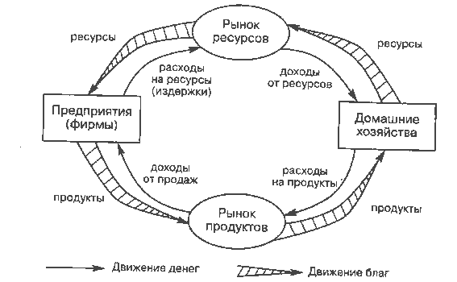Посмотрите как изображает движение денег учебник по макроэкономике. Он игнорирует понятие прибыли. Деньги просто бегут по кругу навстречу товарному потоку. Социализм, ни дать ни взять. Никто из субъектов экономики не пытается "отщипывать" от этого потока свой процент. И в общем понятно почему. В замкнутой(!) экономике любые нарушения денежного потока будут приводить к точно таким же нарушениям товарного. Если кто-то выхватил из него и не потратил свои 100 рублей, то ровно на 100 рублей не было продано каких-то товаров. (А в случае мультипликации по цепочке производств, то в разы больше) Они просто остались лежать на складе.
Понятие прибыли хорошо описывается в других книгах. Откройте любой учебник по "экономике предприятия". (Их множество в любом книжном магазине) Но такие учебники всегда рассматривают только маленький фрагмент экономики и только как "открытую систему". И категорически не хотят ввязываться в дискуссию о том, каким образом прибыль отражается на экономике в целом.
Да, конечно. Придумано некоторое количество приемов, которые отчасти выправляют ситуацию приводя ее к изображенной на рисунке. Прогрессивные налоги, денежная эмиссия, финансовые рынки... Но все это происходит за счет все большего накопления противоречий между этими двумя "экономиками". Микро- и макро-. (То есть они могут сосуществовать только временно.) Никто не отвечает на вопрос, каким образом можно избежать избыточного накопления "заработанной" денежной массы (в действительности, - долгов) в экономике с ссудным процентом.
Дальше кончается логика и математика, и начинаются экономические пляски с бубном.
1) Прогрессивные налоги надо как-то обходить...- успешно придумываются оффшоры и деньги точно так же исчезают из оборота, как и без этого налога.
2) Долги надо как-то возвращать, но вернуть их нельзя. Просто невозможно. Их можно вернуть, только заняв еще (если дадут).
3) И... парадокс. Порожденную госрасходами денежную массу, которая выполнила свою функцию по оживлению производства и добежала до верхушки финансовой пирамиды нельзя использовать. Если заработанные "хозяевами" деньги хлынут на покупку реальных активов, это приведет лишь к тотальной инфляции (или дефляции). Эти деньги нужно как-то связать. Для этого придумываются "ценные бумаги", "рынок ценных бумаг"... и т.п.
Думаете, описанная модель выдумана от начала до конца и не имеет ничего общего с действительностью? Ошибаетесь.
"...трудно пройти мимо статистики рынка производных финансовых инструментов (деривативов) в отчёте BIS (Банк международных расчётов) – уж больно числа впечатляют: судя по данным первых трёх кварталов, в целом за 2006 год оборот только биржевой торговли фьючерсами и опционами достигнет 1.8-1.9 квадриллиона (тысячи триллионов) долларов – из них 70% приходится на деривативы процентных ставок (в основном долларовых). А ведь есть ещё и мощный внебиржевой рынок (OTC, номинал обращающихся инструментов 370 трлн. долларов), и рынок обмена валют (годовой оборот около 600 трлн. долларов) – для полноты картины жуткого деривативного навеса остаётся только напомнить, что мировой ВВП составляет всего лишь 60 трлн. долларов..."
В таких условиях реальная экономика выступает в виде "тонкой прокладки" между Центробанком и виртуальными финансовыми рынками. Но именно в ней, в этом «мировом ВВП» - определяется «ценность» ничтожного количества (по сравнению с долгами "инвестору") обращающихся в ней денег.
(Более подробное рассмотрение вопроса показывает, что экономика зажата на самом деле не между эмиссионным Центробанком. А между обычными коммерческими банками с одной стороны и финансовыми рынками с другой.)
Забавно, что пока долговые обязательства не предъявляются к оплате, никто не обращает внимания на опасность колоссального несоответствия объемов долгов, - имеющейся в обороте денежной массе (точнее говоря "денежной базе"). Все заняты только "ласковым щекотанием брюшка инвестора", чтобы он не задерживал у себя и возвращал в оборот экономики деньги под обещание процентного заработка. Чем больше накапливается долгов, тем большую скорость должна набирать экономика, чтобы обеспечивать проценты по ним. И тем больше страх перед нервозностью инвестора, который, испугавшись убытков, попытается "продать долги" и выхватить ликвидность из экономики. (Или просто не реинвестировать ее обратно.)
Дорога под реальной экономикой заканчивается мгновенно. А "эксперты" воздевают руки к небу, - "кризис"!
"Уравнение" обмена.
Важно понимать, что «оборот денег» и «количество денег в обороте» -- это не одно и то же. При всей, казалось бы, очевидности, - многие почему-то не видят разницы.
Эти параметры связаны между собой, но не независимы и, тем более, не равны. Это зависимость от:
1) от количества денег в обращении,
3) от объема торговли (или от суммы стоимости благ, купленных на деньги).
И вычисляется по формуле "Ньюкомба-Фишера": MV=PY.
Где M – общая денежная масса. V – скорость обращения денег. (число оборотов одноименной единицы в течение года).
Таким образом произведение MV - суть "уплаченные деньги" за год.
P – средняя стоимость товара. Y – годовой реальный продукт (количество товаров).
То есть произведение PY - есть "полученные деньги" за год.
Безусловно, пользоваться такой формулой для практических расчетов, мягко говоря, сложно в силу неопределенности составляющих ее величин.
(Что такое «средняя» скорость обращения? Какой из денежных агрегатов считать «деньгами»? М0? М1? М2? М3?.... Если с М0 и М1, все относительно(!) понятно, то по поводу остальных агрегатов, - "ни среди экономистов, ни среди государственных должностных лиц нет единства мнений о том, из каких отдельных элементов состоит денежная масса в экономике".)
Небольшое отступление про денежную массу и денежный агрегат М2: (Агрегат "после включения банковского мультипликатора".) Существует целый ряд денежных агрегатов, используемых для контроля за денежным обращением. Однако денежный агрегат М2 вообще не пригоден для этой цели. Он включает в себя наличные денежные средства, денежные средства на расчетных счетах (до востребования) и деньги на срочных вкладах. Деньги на срочных вкладах не могут явиться "денежным предложением", так как они заморожены (дезактивированы) условиями своего хранения. "Денежным предложением" являются лишь наличные деньги и средства на расчетных счетах (до востребования). Да и то с оговорками. Более того, сам счет агрегата М2 некорректен. Действительно, если в банке появился срочный депозит, то он, естественно, входит в подсчет агрегата М2. Однако банку надо зарабатывать средства для оплаты процентов по этим депозитам. Поэтому он сразу же выдает по ним кредит. Кредитные средства попадают на расчетный счет и также будут учитываться в составе агрегата М2. Другими словами, фактически имеем двойной счет. Таким образом, увеличение агрегата М2 может произойти даже без всякого увеличения денег в системе, а лишь благодаря тому, что часть денег со срочного счета (депозит) перешла на расчетный счет. Ясно, что это полная нелепость.
Но вернемся к формуле Фишера. Несмотря на то, что в ней не все понятно, тем не менее, постарайтесь ее понять и запомнить. В ней сразу же видны не всегда очевидные причины «инфляции»-«дефляции».
Например, замедление скорости обращения денег (уменьшение количества (объема) транзакций во времени) автоматически приводит к «спросу» на дополнительные деньги. Или к увеличению их покупательной способности, если Центробанк по каким-либо причинам не удовлетворяет этого спроса. (Дефляция) И наоборот. Ускорение денежного обращения высвобождает денежную массу, которую должен «вобрать» в себя Центробанк как кредитор последней инстанции, чтобы не допустить обесценивания денежной единицы. (Инфляции)
Наглядное механистическое объяснение со всей теорией находится здесь.
Посмотрели? Прочитали? Простите за сарказм. Это все не ерунда. Это написал Ирвинг Фишер — известный американский экономист-математик, профессор политической экономии Йельского университета США и основоположник теории монетаризма. На сегодняшней день, монетаризм является официальной теорией таких международных финансовых организаций, как Международный Валютный Фонд (МВФ), Международный банк Реконструкции и Развития (МБРР), Всемирный Банк (ВБ).
А теперь включаем мозг, вспоминаем школьную математику и начинаем напряженно думать над формулой.
В левой части уравнения у нас средняя денежная масса (выраженная в деньгах), умноженная на ее использование (объем покупки) в единицу времени (год). В правой средняя стоимость товара (выраженная в деньгах), УМНОЖЕННАЯ НА ЕГО ИСПОЛЬЗОВАНИЕ (объем продажи) В ЕДИНИЦУ ВРЕМЕНИ (ГОД).
Ау, Люди! У вас с головой все в порядке? Вы вообще-то ходили в школу? Чем вы занимаетесь уже почти столетие? (Впервые книга вышла в свет в 1911 г.) По каким картам летаете?
От того, что вы умножили (разделили) левую и правую часть уравнения на одно и то же число (год), - уравнение не меняется. Вы можете подставить сюда вместо "года", что угодно. Хоть "заряд электрона", "постоянную Планка" или "массу солнца", - это ничего не изменит. Эта размерность просто сокращается, и мы получаем что: ВВП=P
Где ВВП - сумма всех денежных транзакций. То есть ВВП страны. P - общая стоимость проданных товаров. (И эта формула верна для любого временного интервала. Не обязательно годового. И за столетие. И за неделю...)
Давайте попробуем переписать уравнение обмена в составляющих его размерностях. (так же, как пишут при решении задачи по физике в школе чтобы не ошибиться.)
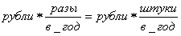
Так как мы уже выяснили, что время у нас одинаково в обеих частях уравнения, мы его сокращаем. Получаем:

Так как "разы" (оборотов денег) и "штуки" (товара) суть безразмерные коэффициенты. Их можно перемножить и объединить под неким безразмерным "k". Получаем:

То есть другими словами деньги (цены) у нас зависят только от денег (цен). Как неожиданно. Уравнение по своей интеллектуальной мощи оказалось идентичным соотношению:
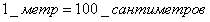
Но даже это выражение намного более полезно и определенно, чем формула Фишера. Тут хотя бы понятен коэффициент "k". В уравнении Фишера этот "k" является не постоянным коэффициентом, - а переменной, составляющей зависящей от непредсказуемой величины банковской мультипликации. (Один и тот же "рубль" мог быть выдан один раз в зарплату и положен в чулок. А мог бы десять раз быть, - "положен на "депозит", тут же быть выдан в "кредит" оплачен кому-то и снова вернуться, но уже на другой "депозит" и т.д." Соответственно и "k" - изменилось бы в десяток раз.) На которую всегда можно списать соотношение произвольных изменений цен и денежных масс.
Люди, вам не страшно? Вас 6 миллиардов. Вам 100 лет назад написали формулу, о том, что цена товара равна деньгам, за него уплаченным. И эту тупость, которую понимает любая торговка на базаре, положили в основание главенствующей экономической теории. Неужели в нобелевском комитете, присуждавшем премии целой толпе лауреатов, взявшим этот бред в основу своих работ, не нашлось хотя бы одного сельского учителя, знающего математику? Для этого не нужно высшего образования. Достаточно просто учиться в школе. Поверьте, - хотя бы иногда думать, - увлекательное занятие. Возможно ли такое в физике? Математике? Химии?... Может быть, обычная школьная математика, ее правила сложения-умножения уже не действуют на территории экономической «науки»? Тогда в каком учебнике можно просмотреть «правильную»?
(Небольшое отступление!)(Если Вы еще немного "помедитируете" над формулой, то поймете, что никаких "денег", как самоценной "реальности", уравновешивающей товарную массу всей остальной экономики не существует. Существует только "соревнование цен" между различными субъектами экономики. То есть в действительности мы имеем только одну половину уравнения. (По разные стороны знака равенства должны стоять цены и объемы потоков разных отраслей). А "деньги" это только внутренний "посредник" с помощью которого выполняется взаимозачет. Они не имеют права стоять по по другую сторону знака равенства.
То есть логически-корректное уравнение Фишера должно оперировать с сегментами экономики (а не быть приравнено ко всей экономике) и выглядеть примерно так:
(одна отрасль P1Y1) = (посредник MV) = (P2Y2 другая отрасль)
Разумеется, в таком виде оно годится лишь для экономики из двух отраслей (модель мельника и пекаря работающих друг для друга). В случае реальной экономики уравнение будет не "линейным" из двух отраслей а множественным. Что-то вроде звезды вокруг уравнивающего "посредника". При этом V- имеет несколько иной смысл. Это просто мультипликатор.

И в случае сбалансированной экономики, - то есть равновесия "цен" и "объемов товарных поставок" различных субъектов друг-другу, - деньги не нужны. Их количество должно стремиться к нулю (а расти должен "мультипликатор"- V, - который является показателем "взаимозачетности" товарных потоков ).
И наоборот. При полной разбалансированности экономики, когда одни отрасли только производят, а другие только потребляют, - деньги начинают возрастать, - так как они будут отражать чей-то безвозвратный, непогашаемый встречным потоком товаров или услуг долг (а "мультипликатор" при этом будет падать. Так как "взаимозачитывать" нечего.) .
Или, еще точнее можно сказать, что в несбалансированной экономике в одной из отраслей будет надуваться денежный пузырь, а в отраслях контрагентах противоположный ему "отрицательный" пузырь долга. Когда все деньги, которыми оперирует "посредник" для проведения сделок уйдут в денежный пузырь, - экономика остановится. И "экономисты" всех мастей заверещат о недостатке денег. Хотя в действительности денег более чем достаточно и проблема вообще не в деньгах. Просто нет политической воли привести в соответствие структуру цен между отраслями экономики. Так как это автоматически означает снижение чьей-то прибыли или темпов развития.
Поэтому, (уж простите за кощунство и попрание основ) для бескризисного развития, управляющий орган (государство) должен безоговорочно контролировать не только и не столько денежную массу в стране (номинальный рост которой говорит только о плохой работе государства), - сколько баланс и структуру цен своих внутренних хозяйствующих субъектов. Причем контролировать этот баланс не с подачи заявок лоббистов отдельных отраслей и не прятать проблему в "экспорт-импорт", перенося ее на неконтролируемый международный уровень - а управлять обществом на базе некоей матрицы своих представлений о направлении развития данного общества. Государство должно составить свою "таблицу приоритетов". Решить, будет ли это общество "духовным", или "потребительским", или "технократическим", или еще каким-либо. И пропуская внутренние транзакции через "посредника MV" отфильтровывать денежные потоки накладывая их на "таблицу приоритетов". Подталкивая, таким образом развитие общества в нужном направлении. (При этом категорически нельзя обращать никакого внимания на вопли о потери прибыли "страдальцев" обделяемых отраслей. Даже на крики о том, что они платят больше всех налогов. Так как эти налоги платятся как часть из порождаемого их прибылью дисбаланса. Но только часть! Если государство решило, что ему важнее образование, чем рост производства пива, то так тому и быть. Инвестиции "в пиво 30 новых сортов" задушить и перенаправить их в строительство школ. И потерянная прибыль пивоваров, - это их личное горе. Пусть переквалифицируются в учителей.)
Уравнение Фишера неверно не столько "математически", - оно неверно в первую очередь логически. Деньги возникают не "сбоку" от экономики, а внутри нее. (Какая неожиданная мысль!) И являются показателем ее сбалансированности. В случае идеального баланса, - денег нет. Они просто не нужны. В случае же больной, несбалансированной экономики, - их максимальное количество.
Если медитация удалась, - можете задуматься также о смысле и значении "завалов" денег в различных "стабфондах", "фондах будущих поколений" и т.п.)
Разумеется, дотошный читатель сразу же скажет. "Возможно, в масштабах замкнутой экономики отдельной страны это все, конечно, верно. Но это идеализированная модель. В международной торговле все замкнутые системы открыты".
Позвольте привести цитату из "Естественного экономического порядка" Сильвио Гезеля. В его времена международным платежным средством было золото.
"Вы замечали в овощной лавке лимоны? Они приехали из Малаги. А на любом почтовом отделении, особенно связанной с отправкой крупногабаритных посылок, везде, на каждом грузовом отправлении, можно прочитать пункты доставки, это весь мир. Вопрос в следующем, могут ли переводы денег из Испании (Малага) в Германию быть сделаны с помощью бумажных денег, а не золота?
Если один и тот же дилер импортирует лимоны из Испании, а экспортирует зонтики в Испанию, то каждый может увидеть, что бумажные деньги совершенно не мешают таким операциям. Дилер продаёт зонтики в Севилью за бумажные деньги, и на полученные средства закупает лимоны в Малаге. Затем он посылает эти лимоны в Гамбург, продаёт их там за немецкие марки - тоже бумажные - и этими деньгами платит за зонтики. Он может повторять эти операции бесконечно долго, даже несмотря на то, что испанскими бумажными деньгами нельзя расплатиться в Германии, а в Испании - немецкими. Испанские деньги, полученные за зонтики, тратятся в Испании же на лимоны, а немецкие бумажные деньги, полученные за лимоны, тратятся на зонтики. Капитал дилера постоянно меняется: сегодня он заключён в лимонах, завтра в немецких марках, послезавтра в зонтиках, а на следующий день - снова в испанских песетах."
Все понятно, скажет въедливый читатель. А деньги где?
- Деньги? А что деньги? Они как лежали, так и лежат. Их могло бы и вообще не быть. Экономика-то сбалансирована.
И балансируется она именно ценами, а не денежными вливаниями. Денежные вливания (эмиссия) всего лишь позволяют на некоторое время оттянуть коллапс порожденный искаженными ценами.
А теперь попробуйте сами себе ответить на вопрос, - "так что же все-таки должно контролировать в первую очередь государство? Возможность денежной эмиссии (Центробанк) или цены?"
Правильный ответ, - и то, и другое. Но в случае правильной и контролируемой ценовой политики отраслей, - Центробанк просто неважен. Его роль "третьего зайца на новогодней елке" совершенно утилитарна и не требует никакого "экономического искусства". Он может выйти на первые роли только в случае крупных ошибок с ценовой политикой в стране. Тогда действительно, чтобы не допустить коллапса могут потребоваться строго дозированные, аварийные вливания в отдельные отрасли. Если они не будут сопровождаться исправлением ценовой политики приведшей к этим ошибкам, - аварийные вливания станут постоянными. Дисбаланс начнет разрастаться... - и тогда уже начнется последний отсчет до краха всей экономики.
---------------------
Теперь поговорим немного об инфляции-дефляции и о закономерностях их поведения, которые можно почерпнуть из формулы Фишера.
Глядя на уравнение, можно вполне логично предположить, что очередное сжатие денежной массы (остановка или торможение кредита, например, в титанической "борьбе" с инфляцией) всего-навсего приведет к пропорциональному снижению цен. И многие недалекие люди с пеной у рта доказывают, что так и происходит в действительности.
Но. Существует некий порог оптимального количества денег в экономике (при данной структуре (масштабе) цен). Сжатие денежной массы приведет не к пропорциональному уменьшению цен, - а к уменьшению объемов производства. Недостатку товаров и как следствие, - инфляции. Производственные мощности не в состоянии снизить цены без ущерба для объемов производства. (Они ведь закупили необходимую им продукцию (сырье, комплектующие) ранее. И по более высоким ценам. Но это не самый главный мешающий производственной активности фактор.
Самое главное, - давайте попробуем не забывать(!), что вся денежная масса образована только путем кредита. И это автоматически означает, что "Вы", или кто-то другой (В том числе и правительство страны имеет право только занять деньги ( и кстати только в банке второго уровня. Но не в Центробанке. см. закон о Центробанке статья 22. ) и не сможете вернуть взятый кредит, да еще и с процентами при уменьшенном масштабе цен. Таким образом, - кредитный механизм создания денежной массы гарантирует невозможность снижения цен в экономике(!).
Либо, - продолжая эту же мысль, - он гарантирует перетекание реального капитала (производственных мощностей и сырьевых источников) в пользу лиц, "создающих кредиты". И эти лица - вовсе не "окологосударственный" Центробанк, которому подобные активы просто не нужны. (Чтобы не усложнять, - схемы денежной мультипликации и зарубежных кредитов описаны ниже). И даже не коммерческие банки, которым заработанная "прибыль" не принадлежит. Это их пассив, который они обязаны отдать "учредителю".
Все пенки остаются на уровне учредителей (акционеров) коммерческих банков. (Это уточнение особенно важно, для "революционеров всех мастей", не желающих читать дальше первой страницы и бегущих в первую очередь крушить банки. Занятие, безусловно, увлекательное, но приводящее к разрушению системы взаиморасчетов, неуправляемости и полному коллапсу производственно-торговых обменов страны и как следствие к банальному голоду. И скупке этой страны за "немного еды" от нового "кредитора" из-за рубежа. Вспомните безобразное крушение Советского Союза. Мощнейшей страны, в которой всего лишь (!) развалили финансовую систему. Подробнее об этом ниже.)
Итого: Объективным фактором появления инфляционных процессов является не избыточность денежной массы а недостаток товарной.(При избытке товара, никакая денежная масса не может привести к инфляции. Да ее просто и не возникнет, так как никто не будет брать на себя ненужный ему долг.) Причем вовсе не в линейной зависимости, как это утверждает формула Фишера.
(Разумеется нужно учитывать физическую "возможность" или "невозможность" производства какого-либо конкретного товара в необходимых объемах. Например, невозможно каждому жителю земли дать по автомобилю. Не хватит никаких ресурсов. Ни дорог, ни нефти. (В качестве мысленного упражнения попробуйте предложить "индусу", потребляющему 9,9 литра бензина на душу населения в год, - уровень среднедушевого потребления США -1618,6 литров в год. Данные 2005 г. И... вам останется только считать, через сколько месяцев закончатся все доказанные запасы нефти на планете. Только не нужно кричать, что низкий уровень потребления связан исключительно с высокой численностью индусов. Если Вы сократите население Индии в 3,5 раза до численности населения США, то все равно получите целых 35 литров в год.)
Но таких проблем с сырьевым ограничением нет при производстве например "компьютеров", зубной пасты, хлеба или в стоимости "мобильной связи", интернета, образования, медицины... и т.п.)
Давайте предположим, что при сжатии денежной массы в стране все смежники, "сырьевики" и "производители" смогли бы договориться о пропорциональном снижении цен, без ущерба для производственной активности. Но поскольку вся их деятельность осуществляется только на заемные средства (других денег нет в экономике), - то даже если все они "успешные", незакредитованные предприятия, но хотя бы на ком-то (пусть даже на производителе ничтожных заклепок) висит кредит (иначе в экономике просто нет денег), - то этот "производитель заклепок" не сможет снизить цены на свою продукцию. Ему нужно этот кредит возвращать.
Значит, для всех остальных, при пониженном масштабе цен эти "заклепки" станут "золотыми". Чтобы скомпенсировать потери на заклепках, другие производители просто по цепочке вынуждены будут вернуть свои цены к исходному уровню. (Ну или перейти под управление кредитору, который найдет более "экономически эффективное" приложение производственной базе. Вырежет заводы на металл, а помещения превратит в торговые офисы. И не надо говорить про "эффективного собственника". Вы где-то видели нечто другое?) Это замкнутый круг, который разрешается падениями объемов производства и банкротствами предприятий. То есть деградацией производственной базы страны.
Еще в 1729 г. Бенджамен Франклин писал, -«Существует определенное количество денег, необходимое для ведения торговли в той или иной стране в полном объеме и без затруднения (freely and currently), большая сумма которых не содействовала бы торговле, а меньшая, если значительно меньшая, была бы исключительно пагубна для нее. ...Когда в какой-либо стране вообще не будет денег, вся торговля будет вестись путем натурального товарообмена.»
В общем же случае плавное увеличение денежной массы, не обязательно ведет к увеличению цен. (Смотря какие товары и возможен ли рост их производства) До тех пор пока количество денег не превысит "порога оптимальности" необходимого для беспроблемного проведения всех торговых сделок, - инфляции не будет. Будет происходить только полная загрузка и развитие производственных мощностей, которая будет обеспечивать увеличивающуюся денежную массу (имеется в виду спрос) соответствующей товарной. И только когда денежная масса превысит возможности производств или сырьевых источников, - начнется инфляция.
К сожалению формула Фишера даже не намекает на подобные "нелинейности". Она только вводит в заблуждение и отвлекает от основной задачи финансовой системы, - поддерживать необходимый уровень денежной массы в обороте замкнутой системы конкретной экономики.
(!) Обязательно прочтите этот небольшой текст. На простых логических примерах анализируются взаимосвязи денежных и товарных масс в различных условиях.
----------------------
(!) Экономика в целом, - замкнутая система. И если крестьянин, к примеру решил поднять цену на выращенное зерно, - то эта же цена вернулась к нему в испеченной булке, (солярке или запчастях к трактору). (Если кто-то хочет поспорить с утверждением, что "экономика в целом это замкнутая система", пусть наладит торговлю, например, с Марсом. Не существует из "ниоткуда" приходящих товаров или в "черную дыру" уходящих денег (исключение - Центробанк. В нем деньги появляются и в него исчезают. Хотя бесспорно это "условность". Такая же "условность" как и сами деньги). Хотя при фрагментарном рассмотрении отдельных предприятий или стран так может и показаться. Или на худой конец пусть прочтет определение макроэкономической системы в учебнике.)
И..., что то же самое, если "банкир" поднял "процентную" цену на свои услуги, то эта цена точно так же вернулась ему в цене бензина для BMW и стоимости красной икры. Разница лишь в том, что он не создает товарную массу, а только потребление. Отсюда и инфляция. Его доход не связан с трудом, затраченным на него временем и может быть сколь угодно велик. Точно так же может быть сколь угодно велика и инфляция в экономике. (падение производства и рост потребления)
Увеличение денежной массы (что то же самое, - рост требований банковской системы к оплате (булками) своих непроизводительных издержек. Непроизводительное стадо нужно кормить. Причем мясом, а не рисом.) - всего-навсего автоматически увеличивает цены. (можно это представить как увеличение диаметров шестерен или шага зубьев. Но это не изменяет скоростей их вращения.) Влияние на скорость вращения и у «большой» и у «малой» денежной массы абсолютно одинаковое. То есть, - безразлично.
Д. Юм считал, что изменение предложения денег влияют только на номинальные, но никак не реальные экономические величины. Нейтральность денег - предположение, что в долгосрочном периоде изменение денежной массы не оказывает воздействия на реальный национальный продукт, занятость, ставку процента и инвестиции, а приводит лишь к росту цен. Она выражает свободную рыночную силу и восстанавливает равновесие денежной и товарной массы, по закону денежного обращения, увеличивая цену товаров или уменьшая её при изменении денежной массы.
Производство работает как умеет а не так, как хочет кушать непроизводительная часть экономики. Скорость выращивания "булок" определяется количеством выращивающих, наличием природных ресурсов и технологическим способом производства а не кредитными вариациями объемов денежной массы. Они годятся только для перераспределений произведенного продукта. И если это распределение идет не в пользу производителя, - производство умирает. Ситуация с сельским хозяйством тому яркий пример.
Чтобы быть жизнеспособной в масштабах одной страны, - экономика должна быть "сбалансированной" и разноплановой в пределах своих сырьевых возможностей, а не только качать нефть или "собирать кофейные зерна" на экспорт. Иначе она становится нестабильной и зависит от того "подвезли или не подвезли из другой страны еду"(кредиты). А вдруг у них там война? Или государственный переворот? Или ипотечный кризис? Или просто борьба с инфляцией? Что тогда? Сидеть сухари сушить и жаловаться на мировую конъюнктуру?) 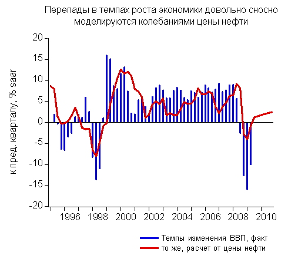
Возможно, Вы полагаете, что достаточно избрать "правильное" правительство, и страна неотвратимо пойдет по пути устойчивого развития и роста благосостояния?
Увы. Вся "суверенность" и "независимость" национальной (в данном случае Российской) экономики (в условиях распахнутых для движения капиталов и товаров границ и отсутствующих внутренних производственных мощностей) отчетливо видна на графике слева. Где весь рост ВВП России едва ли не однозначно синхронизирован с мировыми ценами на нефть.
Разумеется, дело не только в ценах нефти. Существуют и другие факторы. Например, те же "иностранные инвестиции". Беда не в самих факторах, их может быть много и разных. Суть в том, что все это внешние(!) факторы. И правительство не контролирует их. Потому любые "выборы", равно как и "перевыборы" в стране не имеют практически никакого смысла. И это будет продолжаться до тех пор, пока правительству не будут централизовано(!) подчинены все трансграничные потоки. (Это одно из "необходимых", но не "достаточных" условий самостоятельного развития страны.)
--------------------
Развиваться экономика может только вся целиком, а не отдельными отраслями. Если, к примеру, увеличить производственные мощности "пекарни", - то проблема тут же возникнет в нехватке мельниц. Если развить мукомольное производство, - экономика упрется в нехватку зерна. Если распахать большие площади под зерновые, - то потребуется больше тракторов... а соответственно заводов..., запчастей..., МТС... бензина... и т.д. Отсюда видно, что производительная часть экономики может безынфляционно нести на себе только некоторое количество "непроизводительного стада" иждивенцев. И чем больше их число, тем более эффективна экономика. Но рост его поголовья выше возможностей замкнутой, сбалансированной экономики(без ее соответствующего количественного или качественного роста) - невозможен.
Небольшое, но важное дополнение к вопросу о необходимости морали в экономике.
Подходя формально, - к "непроизводительному стаду" можно отнести всех "иждивенцев" общества не занятых непосредственно в процессе производства. Помимо иждивенцев "по нетрудоспособности" или даже просто "по лени",- к иждивенцам можно также отнести работников науки, искусства... - но будет ли это утверждение справедливым?
Количество иждивенцев, которые может нести на себе общество, зависит от уровня развития его производительных сил. И только от них. Если иждивенцев будет больше, они просто вымрут от голода или пойдут работать. Если это крестьянская страна пашущая на лошадях, - то количество иждивенцев может быть очень мало. И это плохо!
Если высокоразвитая страна с комбайнами и развитой промышленностью, то иждивенцев может быть очень много. И это замечательно!
Но! Если эти иждивенцы сидят, тупо жрут в стойле и требуют еще больше хлеба и зрелищ, - то такое "общество" трудно назвать обществом, - а таких "людей", - людьми.
И при точно таком же количестве иждивенцев, такое общество представляется крайне несправедливым. С ужасающим неравенством.
В то же время если эти иждивенцы заняты каким-либо интересным делом. Наукой. Творчеством... От этого жизнь всего общества становится интересной и насыщенной. В том числе и для тех, кто занят в производстве. А интенсивный научный процесс еще и помогает экономике стать эффективной в рамках имеющихся физических возможностей. Как ни странно, в таком обществе нет "неравенства".
Чтобы понимать, какая именно экономика перед Вами, нужно рассматривать ее только как "замкнутую". Тогда все становится на свои места.
Например: Если Вы восхищаетесь эффективностью и высоким среднедушевым доходом экономики США, - то Вы должны понимать, что страна США, - это "открытая система". И в ее "замкнутую" экономику нужно включать все "основание экономической пирамиды", на которую она опирается. А это и "индустриальный пояс" на границе с Мексикой, и рабочую силу Китая, вяжущую носки для всей Америки, и даже китайских крестьян, кормящих рабочих, которые вяжут носки для всей Америки. Пример, конечно же, условен, но из него видно, что при выяснении "среднедушевого дохода" нужно рассматривать не только вершину, - но и всю пирамиду периферии, которую доит кредитно-финансовая система, в целом. И без которой она не может существовать. А это во многие разы (если не в десятки раз) меньше.
Если же Вы ругаете "неэффективную" экономику Советского Союза, за низкие зарплаты, за гипертрофированный ВПК, за неоправданно большую армию инженеров, за "повороты рек", - то Вы должны понимать, что она сама по себе являлась в чистом виде замкнутой экономикой. (В особенности в условиях международной изоляции и подготовке к войне 30-х годов.) И то количество "иждивенцев", которые она могла на себе нести (в виде той же научно-технической интеллигенции), - говорит как раз о ее высочайшей эффективности из-за минимизации затрат на хаос "конкуренции" субъектов экономики.
Подумайте сами. Как при сопоставимом (а на самом деле меньшем) с США населении, СССР, тем не менее имел сопоставимый уровень технологического развития и внутреннего потребления, несмотря на то, что не выносил за свои пределы весь "черновой труд" создающий базу для технологического развития?
И этот "черновой труд" занимал основной объем экономики СССР. В то время как США стремились переложить его на весь остальной мир, оставив в своих границах только "высокотехнологичный труд" и услуги.
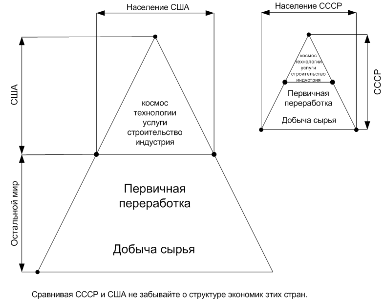
Не являются ли эти соображения ответом на вопрос, - какая страна в действительности обладала эффективной экономикой?
(Просьба не воспринимать рисунок буквально. Он иллюстративный. Просто для понимания превалирующих процессов. И вовсе не означает, что, например, США вообще не занимается добычей сырья на своей территории, и что СССР не участвовал во внешнеторговых обменах.)
Учтите тот факт, что экономика СССР мало того что не имела никаких колониальных территорий, снабжающих ее сырьем и товарами, - но еще и пыталась помогать слаборазвитым странам по политическим (то есть моральным, а не экономически-меркантильным, вроде "демократизации" Ирака) мотивам. А заодно задумайтесь, каким образом строились метрополитены, тысячекилометровые газопроводы, космические корабли, города в вечной мерзлоте, сотни миллионов квадратных метров жилья ежегодно? Чем обеспечивались бесплатная медицина, образование (когда только сейчас становится очевидным, насколько оно было качественным и всеобщим)? Наверное, рабским трудом политически репрессированных и "голодомором"?
Нет. Всего лишь пониманием простого, хотя к сожалению и неочевидного для масс факта замкнутости экономики страны. Почитайте рекомендации Госплану. Там совершенно недвусмысленно указывается,– "что механизм формирования и извлечения социалистической прибыли не может действовать в локально-производственном масштабе, но только в рамках экономики как целостности, как единого народнохозяйственного комплекса."
Полагаете, те, кто вводил разрывающий цельный организм экономики на конкурирующие сегменты "хозрасчет" на предприятиях СССР, не понимали этого простого утверждения? Думаю, заявление Уго Чавеса о том, что "СССР, это гениальное государство, идеи которого предала верхушка страны", - вполне имеет право на существование. (Но это было небольшое, лирическое отступление.)
Если мы попытаемся "простимулировать" экономику ростом количества денег (как, казалось бы, может следовать из уравнения Фишера, где увеличивая денежный объем можно получить рост товарной массы) - задача распадается на несколько, зависящих от состояния экономики в момент увеличения денежной массы, вариантов. Если существовали запасы товаров, - они будут выкуплены этой дополнительной денежной массой. (Запасы сменят собственника, а он в свою очередь может запустить производство.) При приближении запасов к концу, - начнется практически вертикальный рост цены. Пока она не уравновесится с этой дополнительной денежной массой. Если же запасов не было, - то инфляция начнется мгновенно. Пока опять же не войдет в равновесие с этим новым, невесть откуда возникшим спросом. (При этом мы молчаливо подразумеваем, что рост количества денег начинается именно в "основании" описанной нами выше финансовой пирамиды. Если деньги распределять равномерно, или (тем более) впрыскивать в "вершину", никакого изменения в состоянии (производственной)экономики не произойдет).
Если спрос будет длительным, прогнозируемым и устойчивым и в других отраслях инфляция еще не началась, - только тогда (возможно) пойдет волна новых трат по смежным отраслям экономики, сопровождающаяся ростом в них цен, и порождающая развитие производственных мощностей основной отрасли, - источника инфляции. Пока вся экономика не уравновесит цены с этим, неожиданно «вспухшим» фрагментом экономики. Средняя скорость вращения экономики (производства) все равно останется неизменной. И будет зависеть только от развития производственных сил и используемых технологий а не количества денег в ней. Таким методом можно только простимулировать какую-то одну отрасль. Естественно за счет "отбирания накопленных булок" (подавления) других. Но последнее утверждение также абсолютно не обязательно. (Отобрать можно. Но не факт, что это приведет к развитию данной отрасли) Достаточно посмотреть, например, на нынешнюю ситуацию со строительством. Несмотря на сумасшедший спрос и рост цен на квадратный метр, (в разы) - никакого реального роста в объемах вводимого в эксплуатацию жилья нет.
(Для Украины, к примеру, эта величина колеблется от 3 до 6 миллионов квадратных метров в год. В то же время во времена разваливающегося Советского Союза эта величина была более 20 миллионов квадратных метров в год, вплоть до самого развала. Так какая экономика эффективней?)
Как мы видим, уравнение Фишера не дает даже намека на описание вышеизложенных процессов. Оно только абсурдной «логикой» оправдывает возможность колебания денежной массы. Скорость обращения денег завязана на скорость воспроизводства товаров. ( А из уравнения Фишера можно тупо множить товары путем увеличения денежной массы, - что невозможно. В действительности при этом изменяется только дефлятор ВВП).
GDP DEFLATOR (ДЕФЛЯТОР ВВП) - Коэффициент, на который следует уменьшить (дефлировать) стоимость валового внутреннего продукта в текущих ценах, чтобы получить его значение в ценах какого-то базового года (например, 1980 г.). Таким образом, дефлятор ВВП является показателем инфляции и используется для определения реального объема ВВП.
Грубо говоря, представим себе экономику, в которой пекарь печет булки, а мельник мелет муку. (Производственная цепочка может быть сколь угодно длинна. Просто так нагляднее видно, как замыкается денежное обращение.) Допустим, пекарь выпек две булки. Одну съел сам, - другую продал мельнику за какую-то цену. Наша экономическая система провернулась на один зуб шестерни. Теперь у него нет булок, но есть деньги на муку. Чтобы система работала, мельник должен продать свою муку для двух булок, за цену, достаточную на последующую покупку мельником одной булки. И наша система провернется еще на один зуб шестерни. Деньги вернулись в исходное состояние, - и все сыты. Если мельник вдруг захочет больше денег за муку, - это тут же к нему вернется вздорожавшей булкой. «Нажиться» просто не получается. Будет только хуже и мельнику и пекарю, так как любое отклонение от равновесия в экономике приводит только к суммарному падению производства. Экономика работает. Количество денег неизменно. Выходная скорость оборота (применения) денег равна в точности скорости оборота товаров. То есть равна скорости производства. И абсолютно неважно, сколько денег было вначале. (Должна лишь быть достаточная кратность денежной единицы, для оплаты самых дешевых товаров в экономике) Если мельник будет успевать за день натолочь муки на четыре булки, и пекарь будет успевать напечь эти булки, - то скорость оборота денег увеличится, (теперь они смогут покупать друг у друга товары дважды за день и меньше голодать) - но с чего вдруг должна увеличиваться денежная масса? С другой стороны "движения денег" может не быть вообще, просто в конце дня (или месяца) они будут подбивать общий баланс. При чем тут скорость обращения? Да ни при чем. Это обычный бухгалтерский учет. Просто банку обслуживающему платежи надо оправдывать свое существование, и таким образом увеличивать денежное обращение, за которое он снимает свой процент вне зависимости от его нужности.
Если, к примеру, мы введем в нашу систему производителя ракетно-космической техники, но уровень развития производительных сил недостаточен (булок производимых мельником и пекарем не хватает, чтобы кормить нашего «Циолковского»), то мы можем как угодно варьировать денежную массу. Направлять ее к кому угодно. Как угодно искажать цены. Хоть прыгать выше головы, - но ни одной ракеты произведено не будет. А «Циолковский» (или мельник, или пекарь, но скорее все-таки «Циолковский») сдохнет от голода. Единственный путь, - это развитие производства булок. (Причем это возможно только путем параллельного развития всей экономики.) И только потом, при наличии избыточного производства, можно осторожно исказить цены или налоги, чтобы направить часть булок «Циолковскому».
Нет булок - нет ракет!
Реальная экономика, как и организм, может расти только сбалансировано и вся целиком. И этот рост зависит только от уровня развития производительных сил и наличия (Доступности. Не обязательно на своей территории.) источников сырья. (Другое дело, что некоторые "развитые страны" стремятся вынести за свои пределы "производительную экономику" с большим количеством затрачиваемого рабочего времени и энергии (добыча угля, производство стали, алюминия) оставив в своих пределах "непроизводительную" не разорвав при этом экономические торговые связи. Навязывая другим странам правила "ВТО" и "свободу передвижения финансовых потоков". Но не свободу перемещения "производств высокотехнологичных товаров" и "рабочей силы". В результате "неразвитые страны" заняты по сути трудоемким исправлением структурных перекосов экономики в развитых. При этом постоянно упускается из виду, что в случае прозрачных для финансовых потоков границах эта совокупность стран в действительности представляет собой одну общую экономику. В которой непроизводительные издержки одной части экономики (так называемой "развитой") восполняются "бесплатным, черновым трудом" "неразвитой".)
Я ошибаюсь? Возможно.
Давайте посмотрим на экономику США в разрезе нескольких десятилетий, чтобы исключить возможность флуктуаций и выявить тенденции. Но только не в виде цифр статистики ВВП, а в натуральных показателях.
Таблица.
Уровни производства для товаров производственной и потребительской рыночных корзин в расчете на 1 домохозяйство
(уровень производства в 1967г. принят за 1,000)
РЫНОЧНАЯ КОРЗИНА ПОТРЕБИТЕЛЯ
1967 1973 1979 1982 1990 |
мужские брюки 1,000 0,965 0,594 0,504 0,335 |
мужские рубашки 1,000 0,644 0,486 0,343 0,165 |
женские блузы 1,000 1,023 1,511 1,405 0,684 |
женские платья 1,000 0,597 0,503 0,339 0,279 |
одежда из шерстяной ткани 1,000 0,264 0,254 0,139 0,166 |
холодильники 1,000 1,247 0,935 0,703 0,932 |
автомобили 1,000 1,150 0,869 0,484 0,512 |
шины 1,000 1,020 0,833 0,666 0,877 |
радиоприемники 1,000 0,706 0,467 0,316 0,098 |
РЫНОЧНАЯ КОРЗИНА ПРОИЗВОДИТЕЛЯ
1967 1973 1979 1982 1990 |
металлорежущие станки 1,000 0,643 0,530 0,289 0,212 |
кузнечно-прессовые машины 1,000 0,854 0,730 0,404 0,406 |
бульдозеры 1,000 1,200 0,713 0,334 0,306 |
грейдеры и катки 1,000 0,786 0,748 0,383 0,349 |
насосы 1,000 1,140 0,541 0,424 0,506 |
сталь 1,000 1,029 0,821 0,416 0,487 |
ТОВАРЫ ПРОМЕЖУТОЧНЫЕ ДЛЯ ОБЕИХ РЫНОЧНЫХ КОРЗИН
1967 1973 1979 1982 1990 |
гравий и дробленный камень 1,000 1,023 0,914 0,624 0,575 |
глина 1,000 1,022 0,759 0,459 0,544 |
кирпичи 1,000 0,999 0,850 0,451 0,598 |
цемент 1,000 1,045 0,911 0,632 0,689 |
Уровень 1967г. был принят за 1 и все уровни производства последующих лет сравнивались с ним. В 1990г. США произвели только 0,000308 металлорежущих станков в расчете на 1 домохозяйство, что составляет лишь 21,2% от уровня их производства в 1967 г. В течение 1967–90гг. уровни производства в расчете на 1 домохозяйство большинства предметов наполнения как производственной, так и потребительской рыночных корзин упали от 7 до 90%, причем для большинства товаров коллапс составил 40% и больше. Это демонстрирует спад и в производственной, и в потребительской рыночных корзинах в целом и показывает неспособность США обеспечивать воспроизводство.
Как видите, если подсчет вести не в "деньгах", - а в натуральных показателях все намного понятнее, а главное интереснее. Но вся финансовая отчетность упорно выдается фрагментарно и без вразумительной связи с реальными производственными показателями.
----------------------
Денежная масса
На 174-й странице Бюллетеня Банковской статистики Центрального Банка Российской федерации № 9 (172) дается определение денежной массы, как состоящей из «денег» и «квазиденег».
(И что любопытно. Нигде на 170 страницах бюллетеня, даже в методологических комментариях поиск не находит не то что определений, но даже просто слов "инфляция" или "дефлятор" ВВП.)
«Денежная масса (по методологии денежного обзора) — совокупность агрегатов “Деньги” и “Квазиденьги”.Деньги — все денежные средства в экономике страны, которые могут быть немедленно использованы как средство платежа. Данный агрегат формируется как совокупность агрегатов “Деньги вне банков” и “Депозиты до востребования” в банковской системе.
Квазиденьги — депозиты банковской системы, которые непосредственно не используются как средство платежа и менее ликвидны, чем “Деньги”. Данный показатель рассчитывается как сумма агрегатов “срочные и сберегательные депозиты и депозиты в иностранной валюте” по органам денежно-кредитного регулирования и кредитным организациям.»Господин Фишер, называет их более завуалировано, но уравнивает в правах, называя и те и другие «подлинными»
«Существуют два вида подлинных денег: полноценные (primary) и кредитные (fiduciary). Деньги называются полноценными, когда товар, из которого они сделаны, имеет одну и ту же ценность как при употреблении его в качестве денег, так и при всяком другом употреблении. Полноценные деньги в своей ценности независимы ни от какого другого вида богатства, а кредитные деньги являются такими деньгами, ценность которых частью или целиком зависит от уверенности, что владелец этих денег сможет или обменять их на другие блага, например на полноценные деньги в банке, правительственном учреждении, или во всяком случае уплатить ими долги или купить на них товары.»
Но задумывается над правотой обеих, похоже только Соломатин А.А
«Часто можно слышать фразу: "На моем расчетном счету в банке X рублей" Эта фраза не соответствует юридической стороне дела. У меня нет денег, я их продал – купил на них обязательства банка. Если норма обязательного резервирования составляет 10%, то 10% моих денег, внесенных в банк, лягут на корр. счет банка в ЦБ, а 90%, скорее всего, будут выданы в виде кредита "карманной" финансовой компании при банке. Та, в свою очередь, "разместит" мои деньги на очередной финансовой помойке – на рынке недвижимости, на т. н . "фондовом рынке" и пр., - где мои деньги будут "работать". Понятно, что обязательства банков очень надежны, т. к. обеспечены их собственным капиталом, иногда даже физическим – зданиями, компьютерами, мебелью и пр. Например, у Сбербанка отношение собственного капитала к привлеченным средствам на 01.01.2006 г. составляло 8,5%. Возникает интересный вопрос: кто на самом деле обладает правом собственности на "денежные" средства, хранящиеся на "моем" расчетном счете? По своему экономическому содержанию и юридическим последствиям мои отношения с банком регулируются договором займа - ст. 807 ГК РФ, согласно которой право собственности на "мои" деньги передаются заемщику (банку). Но в ГК есть глава 44 "Банковский вклад" и глава 45 "Расчетный счет", в которой нет ни единого слова о переходе прав собственности на деньги клиента банку в обмен на обязательства банка. Закон ставит в сознании лохов знак равенства между наличными деньгами и обязательствами банка».
Очень рекомендую прочесть малоизвестную статью Соломатина А.А «Последний парад империализма». Несмотря на специфичный, явно неакадемический стиль изложения, - написана весьма грамотным «бухгалтером». И до предела понятным языком обрисовывает абсурдные контуры современной экономики. Читать одно удовольствие.
---------------------
Попробуйте теперь подумать над другим вопросом, - что такое «деньги под процент»? Возможно ли такое?
Безусловно, возможно. Но только на какой-то исторически небольшой отрезок времени.
«если бы кто-нибудь вложил капитал в размере 1 пенни в год Рождества Христова с 4% годовых, то в 1750 году на вырученные деньги он смог бы купить золотой шар весом с Землю. В 1990 году он имел бы уже эквивалент 8190 таких шаров. При 5% годовых он смог бы купить такой шар еще в 1403 году, а в 1990 году покупательная способность денег была бы равна 2200 млрд. шаров из золота весом с Землю.»
Как Вы понимаете, реальный процент коммерческого банка не 4-5%.
И вкладываются там отнюдь не одно пенни. Так что время до очередного массового передела собственности можно оценивать в несколько десятилетий.
--------------------
Банковский мультипликатор
Казалось бы сверхприбыльное дело - «печатание денег». Но это с какой стороны посмотреть. Печатание денег (официальное фальшивомонетничество) подразумевает также и содержание аппарата по контролю за неофициальными фальшивомонетчиками и их подавлению. А это сложно, трудоемко и убыточно. (Особенно если они находятся в другой стране) Необходимо нести большие затраты на поддержание обращения валюты, а прибыль получается лишь в момент эмиссии. Поэтому данную функцию лучше отдать государству.
Куда более «вкусный» процесс происходит не в Центробанке. А у посредников между Центробанком и экономикой. У коммерческих банков.
В учебниках он называется «депозитный» (денежный, кредитный, банковский) мультипликатор. Несмотря на обилие названий, это суть одного и того же процесса с разных точек зрения.
Для его реализации необходима как минимум двухуровневая банковская система.
На первую («Центробанк» или еще точнее стоящее за ним «Государство») сваливается вся «головная боль» по обеспечению первичной денежной эмиссии и поддержанию затрат на обращение денежной единицы.
Но зато второй уровень, - «Коммерческие банки», заняты более «интересным» занятием, - умножением денежной массы. Давайте попробуем проследить, как это происходит.
Предположим, Центробанк выдает коммерческому банку первичный кредит «настоящих денег», синтезированных из чистейшего воздуха, под небольшой процент. И это, пожалуй, единственные, действительно настоящие деньги, которые существуют в финансовой системе. Все остальное – это различные производные долгов, активов, обязательств от них, помноженные на всевозможные «мультипликаторы». В случае взаимозачетов всех долгов, - в экономике останутся только эти, - «настоящие» деньги. Все остальное просто «аннигилирует». (Впрочем и эти настоящие деньги также исчезнут по возвращению кредита в Центробанк, оставив в экономике только процентный долг по первичному кредиту.)
Самому коммерческому банку собственно деньги не нужны. Он их передает дальше. Например, нуждающемуся в оборотных средствах предприятию. Но уже под бОльший процент.
Предприятию тоже деньги нужны не для того, чтобы в сундук сложить, а оплатить работу и материалы смежников (другого предприятия. Возможно третьего… или четвертого). В конечном счете деньги, так или иначе, возвращаются в банк (А безналичные деньги его даже не покидают. Только переходят с одного расчетного счета на другой). Ибо только через него осуществляются все платежи.
«Предприятие кладёт деньги в банк. Потом банк выдаёт за счёт этих средств кредит. Получатель кредита также кладёт деньги в свой банк. Этот банк также выдаёт кредит. В итоге первоначальная сумма денег не просто обслуживает эти сделки, но и реально увеличивается. Количество денег, которыми располагает банковская система, увеличивается после каждой транзакции. Если осуществлять такую операцию даже фиктивно в системе банков, принадлежащих одному собственнику, то количество денег в его распоряжении становится больше.
Следствием этой системы будет то, что если одна из транзакций не состоится, то обрушивается вся цепочка этих платежей, денежная масса обвально сжимается. Для ограничения этого явления государство ввело систему так называемых "обязательных резервов". Получив депозит, коммерческий банк обязан перечислить на специальные счета центрального банка определённый процент от суммы. Поэтому после каждой транзакции мультипликатор начинает уменьшаться.
Благодаря денежно-кредитному мультипликатору количество денег в обращении существенно больше, чем количество денег, эмитированных центральным банком. Деньги, эмитированные центральным банком, называют "денежной базой". Производные от них инструменты, реально обслуживающие расчёты, существенно больше этой величины. Описывающие их показатели называются денежными агрегатами (М0, М1, М2, М3,N, и т.д.)
Денежно-кредитный мультипликатор банковской системы увеличивает количество денег, эмитированных центральным банком, в разы. Достаточно отметить, что от 75 до 90% денежной массы в большинстве стран составляют банковские депозиты и лишь 25-10% - банкноты центрального банка. Денежно-кредитный мультипликатор позволяет возложить все тяготы эмиссии на государство и общество, а выгоды передать наиболее крупным банкам с развитой филиальной сетью.»
Математически этот процесс выражается так:
D - полученные средства или первоначальный депозит
R - обязательное резервирование
S - ссуды
r - обязательная норма резервирования (r=R/D), то есть процент от депозита, который должен быть направлен в резерв)
(D-R) - избыточные резервы идут на новую ссуду
Пример:
D=100$ r=20%
№ D R (D-R)
1 100 20 80
2 80 16 64
3 64 12.8 51.2
4 51.2 10.2 40.9
5 40.9 ...... ......
--------------------------------
Всего 500 100 400
400 - вновь созданные деньги
Депозитный мультипликатор (Mul) - множительный коэффициент, на который
умножается первоначальное значение для получения конечного результата.
Mul=1/r M=D*Mul, где М - денежная масса
Теоретически при требовании к резервам в 10% первичный кредит Центробанка, к примеру, в 100 миллионов превращается в 900 миллионов выданных кредитов. Почти миллиард. (К слову, требования к резервам коммерческих банков со стороны Европейского Центробанка в данный момент 2%. ) Безусловно, денег больше не становится. Плодятся только долги, которые используются вместо денег. Но…
Попробуйте угадать с трех раз, с какой суммы снимает свой «коммерческий» процент коммерческий банк? С взятых в Центробанке 100 миллионов? Или с 900?
В этом и есть тот маленький секрет, который позволяет кричать о том, что эмиссия денег дело убыточное и одновременно получать хорошую прибыль. Да, действительно. Для государства это верно. Но вовсе не для системы коммерческих банков.
Еще одно объяснение банковского "циркуляторного" кредита есть в учебнике Ирвинга Фишера «Покупательная способность денег» в третьей главе.
Игры с мультипликатором могут приводить к интересным и далеко не всегда очевидным эффектам в экономике. На практике это может выглядеть в виде неожиданных и нелогичных изменений стоимости отдельных валют. К примеру растущий дефицит платежного баланса США по идее должен вести к ослаблению доллара. Он и ведет. Но... при этом процессе все пытаются избавиться не от самих долларов, а от обязательств, номинированных в них, которых значительно больше, чем самих долларов и обменять их на наличные (или безналичные) деньги. А "собственно денег" в обороте крайне мало. При торможении мультипликатора в кризисе (например при падении доверия банков друг к другу на межбанковском рынке взаимного кредитования, который является ключевым для создания банковского мультипликатора. Благодаря межбанку весь второй уровень банковской системы "коммерческих банков" можно рассматривать как один банк) мгновенно возникает катастрофическая нехватка ликвидности для обслуживания платежей в экономике. (А для доллара речь идет о международной экономике). В результате стоимость "доллара" может резко вырасти, невзирая на плохой платежный баланс страны.
---------------------
Государственные долги
Сейчас эмиссионная скорость подачи денег оформилась в виде роста государственных долгов.
(Кредит, если вы помните, подразумевает его возврат. К тому же с процентами и в срок. Отдавать государственный долг, судя по наблюдаемым тенденциям, просто не принято. Да оно и понятно. Если государство его отдаст, - то «большому частному инвестору» нужно думать, что с ними делать дальше. Реализовать такие суммы невозможно. Моментальная инфляция. Куда интереснее, закредитовать государство по уши но, не доводя его до банкротства. И иметь приличный доход с гарантированных процентов, не ударяя палец о палец.
Рекомендации МВФ по предельным уровням госдолга в 1/3 ВВП.
В этой ситуации «инвестор», - обычное паразитирующее животное, типа клеща. Именно для этой благой цели и существуют множественные рекомендации от «мудрых» экономистов, государствам не имеющих долгов, взять их на себя «для развития» страны. (Оптимальным уровнем госдолга считается около 30% ВВП, а критическим 60%.) Впрочем, таких государств, кроме оффшорных, уже практически не осталось.
Чтобы в основании финансовой пирамиды появились деньги, их кто-то должен взять на себя в долг (у «хозяина»). Заставить взять на себя долг частных лиц – сложно. Поэтому его берет на себя государство. Правительство выпускает долговые обязательства. Под небольшой процент привлекая «заработанные» деньги «хозяев» со всего мира. (Можно было бы, конечно, обойтись и без сложностей, но если просто печатать деньги, их стало бы слишком много). Деньги очень «ликвидны», - то есть легко реализуемы. А долговое обязательство удобно тем, что, не являясь столь ликвидным как деньги – связывает (заменяет) денежную массу не допуская ее на потребительские рынки. Как следствие это не позволяет раскручиваться потребительской инфляции. Ведь именно потребительская инфляция (а не "инфляция акций" на финансовых рынках) определяет ценность денег на бытовом уровне.
Затем эти деньги направляются в основание финансовой пирамиды (точнее в систему коммерческих банков, где взятые в долг деньги номинально увеличиваются, проходя через систему банковской мультипликации) и уходят в инвестиции. Все те же, - пособия, вооружения, инвестиции - превращающиеся, в конце концов, в «спрос», давая возможность работать всему механизму экономики.
Государственный долг Соединенных Штатов на сегодняшний день равен


- это только долг федерального правительства США.
Вот так выглядит государственный долг США в динамике за последние 77 лет.
Обратите внимание, на абсолютный и относительный скачок государственного долга после 1971 года, когда был отменен золотой стандарт.
Кроме государственного долга есть:
- долг правительств штатов и муниципалитетов - ещё 2 трлн.;
- долг нефинансовых корпораций - ещё 5.5 трлн.;
- долг некорпорированного несельскохозяйственного бизнеса - ещё 3 трлн.;
- долг с/х сектора - ещё 0.25 трлн.;
- долг домохозяйств - ещё 12.5 трлн.;
- наконец, долг финансового сектора - ещё 13.7 трлн..
Итого 42.5 трлн. - это данные на 3-й квартал прошлого (2006) года; а т.к. нынче американцы наращивают совокупный долг средним темпом около 5 трлн. долларов в год, сейчас сумму резонно оценить в 45 трлн.)
(График справа отражает более свежие данные. К слову, эти долги как раз и представляют собой денежную массу, обслуживающую экономику. Возврат этих долгов не только обнулит, но и превратит в ее отрицательную величину. Эти долги по сути и есть «современные деньги».)
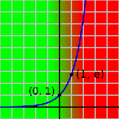
Сравните графики роста долгов с одной из самых быстрорастущих функций, - экспонентой.
exp(x) = ex (Подробнее о о математике сложных процентов можно посмотреть здесь.)
Как говорится, - "найди десять отличий".
Экспонентой описывается, к примеру:
- Рост числа бактерий в колонии (до истощения ресурсов)
- Рост раковых клеток (до смерти больного)
- Рост денег в банке при начислении сложных процентов (процентов на проценты, до кризиса).
Поскольку в реальности экспонента не может уйти в бесконечность, на этапе ускоряющегося роста (красная область графика) происходит слом тенденции. И, что особенно характерно для экономической "науки", - всегда "неожиданный".
К концу 60-х стало ясно, что все золото мира не обеспечит напечатанную американцами зеленобумажную массу. И хотя обменять доллар можно было только на официальном уровне и в Казначействе США, запасы металла таяли на глазах, и к 1970 году от 21 000 тонн осталось меньше половины.
Сильный удар по экономике США нанес генерал де Голль - сторонник сохранения золотообеспечения франка. Он предъявил к обмену на золотой эквивалент 1,5 млрд долларов. Ему пригрозили через НАТО. Тогда он заявил о готовности Франции выйти из этой организации, а заодно удалить со своей территории 189 ее баз и 35 тысяч солдат объединенных войск. Отправляясь в официальный визит для обсуждения сложившейся ситуации, де Голль прихватил с собой еще 750 миллионов долларов. Генерал создал тяжелый для США прецедент, и за два года, с 65-го по 67-й, им пришлось выложить более 3000 тонн золота.
Если французский генерал играл по правилам, установленным самими американцами, то они, поняв, что дело пахнет керосином, в очередной раз продемонстрировали всему миру эгоизм, доведенный до крайней степени цинизма: 15 августа 1971 года президент США Никсон во время своего выступления по национальному телевидению (заметьте, не с трибуны международной организации) объявил об отмене золотого обеспечения доллара.
МВФ ничего не оставалось делать, как подтвердить это решение и с января 1978 года отменить Бреттон-Вудские соглашения. Ничем не обеспеченный доллар оказался «валютой в законе» и мог по-прежнему занимать место основного мирового финансового эквивалента.
Теперь, казалось бы, золото стало не нужным даже американцам. Но, вопреки очевидной логике, унция продолжала расти в цене.
 Как неожиданно! Оказывается «печатать» деньги получается быстрее, чем добывать золото.
Как неожиданно! Оказывается «печатать» деньги получается быстрее, чем добывать золото.
Обратите внимание, как вела себя цена золота (и инфляция) за последние полтора столетия.
В этом смысле требования Маастрихтских соглашений для введения единой валюты в странах Евросоюза выглядят, по меньшей мере, странно.
1. Уровень инфляции не должен превышать более чем на 1,5 % средний уровень трех стран-членов ЕЭС с наиболее низким уровнем инфляции.
2. Государственная задолженность должна составлять менее 60 % от ВНП.
3. Государственный дефицит должен составлять менее 3 % от ВНП.
4. На протяжении по меньшей мере двух лет должны соблюдаться пределы колебаний валютного курса, предусмотренные механизмом обменных курсов, без девальвации по отношению к валюте других стран-членов ЕЭС.
5. Долгосрочные процентные ставки не должны превышать более чем на 2 % средний показатель для трех стран с наиболее низким уровнем инфляции.
Пункты 2 и 3 как минимум противоречат друг другу. Их, конечно, можно выполнить (для отдельного государства), но только за счет других государств (профицит внешней торговли и как следствие снижения относительного уровня госдолга. Которые можно осуществить, например, путем ввоза дешевого сырья (нефти, стали) и вывоза множества легкотиражируемых дорогих «брэндовых» брелоков, игрушек, мобильных телефонов, «компакт- дисков» себестоимостью 20 центов, но зато с наклейкой «лицензии» трижды защищенной авторскими правами и соответствующей ценой.) Такие шаги обеспечат профицит торгового баланса. Но это автоматически означает, что другое государство Евросоюза вынужденное покупать такие «диски» в силу международного разделения труда, - должно увеличить дефицит своей внешней торговли и соответственно относительный долг к ВВП и не сможет выполнить этих условий.
Попытка уменьшать относительный госдолг путем постоянного сокращения государственных программ, - автоматически означает обнищание (снижение покупательной способности) населения внутри страны. И как следствие, опять же таки уменьшения ВВП и повышение относительного (относительно уменьшающегося ВВП) уровня долга).
Может быть, рост госдолга это беда только американской экономики?
Вот как ведет себя, к примеру, госдолг Германии после 71 года.
При ВВП, равном 2,3 триллиона Евро, они уже имеют 1,56 триллиона госдолга, что соответствует уже около 67% государственной задолженности к ВВП. И эта страна один из «локомотивов» Евросоюза.
Австрия – 65,2%
Бельгия – 93,3%
Франция – 66,8 %
Греция – 107,5%
Италия – 106,4%
Зато оффшорные государства вне конкуренции.
Люксембург – 6,2%
(Точнее, как они стыдливо именуются, «страны с умеренным налогообложением»)
Новая задолженность (годовой прирост) Германии была существенно выше в 2005, чем 1980: 74 вместо 28 млрд. евро
 "Причина, почему растут новые долги, изменилась драматично. В 1980 использовалось еще большая часть (15 млрд. евро) для настоящих государственных расходов. В 2005 самая большая часть (64 млрд.) уходила в оплату долгов! Взрывной рост процентных расходов принуждают к тому, чтобы сокращать настоящие государственные расходы для например дорожного строительства, поддержки здания, зарплат и социальных выплат из года в год. Стремительно растущая государственная задолженность - это существенная причина для постоянных сберегательных программ. "
"Причина, почему растут новые долги, изменилась драматично. В 1980 использовалось еще большая часть (15 млрд. евро) для настоящих государственных расходов. В 2005 самая большая часть (64 млрд.) уходила в оплату долгов! Взрывной рост процентных расходов принуждают к тому, чтобы сокращать настоящие государственные расходы для например дорожного строительства, поддержки здания, зарплат и социальных выплат из года в год. Стремительно растущая государственная задолженность - это существенная причина для постоянных сберегательных программ. "
(Zins - процентные выплаты по долгу.)
(перевод economics)
Из этих цифр можно легко посчитать процент по их долгу – 4%. И тенденции к погашению, что-то не видно. Только рост.
Интересно. Найдется ли хоть один нормальный заемщик, который будет наращивать ежегодно 74 миллиарда новых долгов (4%), чтобы 64 миллиарда (86%) из них тут же отдать? Интересно, сможете ли Вы на таких условиях получить ипотечный кредит, просто пообещав кредитору платить из новых кредитов?
Вы – нет. Государство - да. Видимо, просто потому, что государства, - это давно уже частные карманные лавки. А процент по госдолгу, - всего лишь один из легальных способов выплаты дивидендов.
Очередные издержки «настоящей демократии».
Попробуйте включить фантазию и представить себе третий столбик на этом рисунке. Какой он будет?
"В основе предположения, что старый долг оплачен, лежит то обстоятельство, что мы заключили новый заем на гораздо большую сумму..." Д. Рикардо «Опыт о системе фундированных займов»
Еще раз напомню:
«если бы кто-нибудь вложил капитал в размере 1 пенни в год Рождества Христова с 4% годовых, то в 1750 году на вырученные деньги он смог бы купить золотой шар весом с Землю».
Но здесь на старте не «одно пенни», а 1,56 триллиона Евро. Что они будут делать дальше? Особенно после того, как размеры долга превысили ограничения в 60% к ВВП? Переписывать Маастрихтский договор? Или снова разбирать Евросоюз на отдельные государства?
Вряд ли такая ерунда заставит думать и понять принципиальную невозможность этих требований в замкнутой финансовой системе с ссудным процентом.
(Впрочем, здесь нельзя сказать, что кто-то думал плохо. Наоборот. Суть Маастрихтских соглашений, - оторвать государство от возможности ведения самостоятельной денежной политики. И передать эту возможность банковскому сообществу. Таким образом государство будет крайне ограничено в своих возможностях обеспечить оборотные деньги в экономике страны. И тем сильнее оно будет нуждаться в привлечении денег со стороны "инвестора". Естественно на его условиях.)
Поэтому Евросоюз в условиях Маастрихтского договора разорвут на части не "национальные" устремления составляющих его народов. А та же причина, которая разорвала СССР, - внутренняя "прибыль". (Т.е. именно внутренний "Хозрасчет" составляющих его стран. Так как внешнеторговые профициты-дефициты очень хорошо сбалансированы и незначительно колеблются около нуля. В пределах +,-1%) Пределы расширения уже исчерпаны, поглощать больше нечего. Поэтому институт "прибыли" начнет свою борьбу внутри "целого", расслаивая структуру единого союза на богатые и бедные конгломераты. Денежные потоки начнут устремляться (инвестироваться) именно в богатые, так как только там можно будет "заработать" деньги. Что будет делать их еще богаче. (Разумеется за счет оттока ресурсов от бедных.) Положительные обратные связи в экономике начнут замыкаться на себя. ("Усилитель" охваченный положительной обратной связью войдет в режим самовозбуждения на некоторых "точечных" частотах "стягивая" на себя энергию со всего остального спектра.) Бедные страны начнут выстраивать протекционистские барьеры, пытаясь воспрепятствовать оттоку капиталов. Начнется разрыв внутренних связей.
Если в это время не возникнет какая-то "внеэкономическая сила", пытающаяся более равномерно перераспределять ресурсы (особенно производственные потенциалы) не считаясь с "экономической целесообразностью прибыли", - Евросоюз обречен.
(!) Небольшое, но важное замечание по поводу ссудного процента:
Существует большое количество литературы, которая описывает ссудный процент в виде "черта с рогами". Он действительно виноват во многих принципиальных бедах экономики, (хотя и не во всех) но... - важно понимать, что его негативное воздействие может быть легко нейтрализовано. Например, в ситуации когда кредитором последней инстанции (Центральным банком при одноуровневой(!) банковской системе) владеет (управляет) государство. Если при этом "прибыль" от кредитной деятельности Центробанка полностью(!) перечисляется в бюджет, - то никаких проблем с изъятием денежной массы даже теоретически не может возникнуть. Ссудный процент просто перерождается в одну из форм государственного налога, который сразу же превращается в расходы бюджета возвращаясь в экономику и замыкая денежный кругооборот. (Госкапитализм)
Рассуждая чуть глубже, - Центробанк вообще не является элементом экономики. Он представляет собой "несистемный элемент". Только в нем деньги появляются из "ниоткуда" и исчезают в "никуда". Все эти "фонды национального благосостояния" есть не более чем умозрительная фикция. Поэтому 26-я статья закона о Центральном Банке России:
"Статья 26. После утверждения годовой финансовой отчетности Банка России Советом директоров Банк России перечисляет в федеральный бюджет 50 процентов фактически полученной им по итогам года прибыли, остающейся после уплаты налогов и сборов в соответствии с Налоговым кодексом Российской Федерации."
Не имеет никакого смысла. Не может быть "прибыли" или "убытков" у учреждения, которое создает деньги из пустоты и туда же их сбрасывает. Эти понятия для него просто бессмысленны. Как запах в геометрии. Он "вне системы". (Он стоит на границе. С философской точки зрения, - Фридмон. Точка-ворота в другую бесконечность.)
Поэтому даже требованием возврата кредитного процента в экономику через бюджет можно пренебречь. Задача "Идеального Центробанка" после получения налога, - ("процента за кредит") его "уничтожить". И в то же время предоставить государству в бюджет денежную массу которая будет соответствовать объемам торговых обменов экономики в данный момент времени. Она может быть как больше собранного процента (при растущей экономике) так и меньше (при падении производственной активности). Либо быть равной. Денежная масса должна соответствовать "объему крови" для "организма экономики". Если организм растет, количество "крови" должно изменяться сообразно его росту. (организм не сможет расти, если объем его крови будет оставаться на уровне ребенка. Можно конечно менять цены, но коррекции цен проходят намного более болезненно для субъектов экономики, чем изменение объемов денежных масс. (да и невозможны, в условиях кредитного образования денежной массы. Кредит то надо вернуть. А при меньшем масштабе цен это сделать невозможно. Просто не заработаете нужную сумму на продаже своих товаров.) И в краткосрочной перспективе всегда приводят к перекосам.) Поэтому любые привязки денег (к золоту, нефти, электроэнергии) не могут выдать такого соответствия. Вы не найдете такого товара, объемы которого будет изменяться строго с потребностями экономики, да это и не нужно. Ничто кроме грамотного подсчета и планирования не подгонит денежную массу к потребностям экономики. Такой Центробанк конечно не уберет стремление экономических субъектов к "самовозбуждению" и отраслевым перекосам, но по крайней мере сможет отслеживать объемы денежной массы в ней. (Он просто решит одну из принципиальных проблем)
Но вернемся к "Госдолгу".
Необходимо также четко понимать, что государственный долг развитых стран (government debt) полностью «секъюритизирован», т. е. в его структуре отсутствуют займы, полученные от других кредиторов, в том числе международных финансовых организаций (что характерно для развивающихся стран).
Например: структура государственного долга по валютам обязательств для стран большой семерки G-7 (2004 год)
Страна |
Доля обязательств в национальной валюте, %
|
Доля обязательств в иностранной валюте, %
|
Великобритания |
98 |
2 |
Германия |
98,5 |
1,5 |
Франция |
100 |
— |
Италия |
92 |
8 |
США |
100 |
— |
Канада |
95,4 |
4,6 |
Япония |
100 |
— |
Как видите, практически полностью этот долг состоит из их собственной национальной валюты. Мало того, что им удобно управлять, но и в случае чего, его ведь всегда можно «отдать». Ведь эмиссионный центр находится внутри страны. Допустим, для США, - «Мы у Вас брали в долларах? Получите! Ну а что стоит уже подешевле… так мы ничего не обещали».
А вот, к примеру, для Украины это звучит уже немного иначе. «Вы у нас брали в долларах? Так будьте добры вернуть в них же!»
И Украина уже не может напечатать «доллар» как «гривну». Она обязана выйти на внешний рынок, - продать «чего-нибудь нужное» (Возможно, и всю себя, если вдруг доллар подорожал, а гривна упала. А она обязательно упадет, если "внешний кредитор" не рефинансирует в очередной раз обязательства страны (или выданные кредиты частным фирмам) и страна должна будет где-то взять валюту для внешнего платежа которой у нее нет. Она ведь ушла в оплату того, для чего брался кредит. ), купить там полновесный доллар, и только так она может его вернуть.
Тут очень важно понимать, что в случае возникновения реального требования по возврату "долларового" долга гривна автоматически проваливается в "тар-тарары", так как в самой стране доллара ничтожное количество и печатать его самостоятельно страна не умеет. А "золотовалютные резервы" Нацбанка представляют собой в основном "ценные бумаги" номинированные в долларах, - но не сами доллары. Сроки погашения этих бумаг наступят в неблизком будущем (если еще не лопнут те финансовые институты, которые их эмитировали.), а платить нужно сейчас.
Вот, к примеру, статистика по внешнему долгу Нацбанка Украины.
На 01.07.2007 госдолг 12745 млн. долларов, а полный долг всех резидентов перед нерезидентами страны 65382 миллионов долларов. По счастью это пока(!) относительно немного. (хотя все интересное еще впереди) В то же время резервы составляют порядка 30 миллиардов долларов. Как видите, заветной «секъюритизации» незаметно.
Или вот цифры Центробанка России
Таблица 1.7 Бюллетень Банковской статистики
Внешний долг Российской Федерации в национальной и иностранной валютах на 1.04.2007
Иностранная валюта 277,3 млрд. долл. США
Национальная валюта 62,0 млрд. долл. США
Небольшое отступление:
У инвестиций, которые (пока еще) спасают систему денежного обращения в условиях капитализма, есть еще одна неприятная особенность. Это крайняя неравномерность распределения. Связано это, прежде всего с тем, что капитализм представляет собой систему с положительной обратной связью. Что такое положительная обратная связь, любой из Вас сталкивался на практике. Простейший пример:
Положительную обратную связь легко получить, если поднести микрофон к громкоговорителю, когда оба они подключены к одному усилителю. Начнётся самовозбуждение – чем громче звук из громкоговорителя, тем сильнее сигнал на входе микрофона, тем громче звук из громкоговорителя и так далее. Другим примером является цепная реакция на ядерном реакторе, когда освободившиеся нейтроны освобождают ещё больше свободных нейтронов, пока не происходит взрыв.
Система с положительной обратной связью – система, внутри которой существует такая обратная связь, которая приводит к тому, что увеличение выхода системы увеличивает вход, что в свою очередь увеличивает выход и так далее. Рано или поздно такая система саморазрушается от перегрузки, либо разрушает все доступные ей источники энергии (если не срабатывает предохранитель).
В системе с положительной обратной связью может существовать и противоположная ситуация, когда возникает уменьшение выхода, которое приводит к уменьшению входа. Например, вымирание населения – чем меньше рождается детей, тем меньше новых родителей, тем меньше детей и так далее. В таких системах идёт самоускоряющееся падение вниз. Падение можно переломить только в том случае, если есть внешние источники, способные повлиять на вход или выход. Системы с положительной обратной связью обычно крайне нестабильны.
Как радиофизик, хочу добавить, что такие системы обладают также повышенной избирательностью. (Например, сверхрегенеративный приемник)
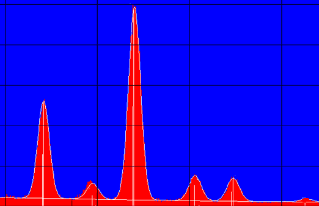В любой реальной системе, есть некоторая неравномерность Амплитудно-Частотной Характеристики, которая легко сглаживается введением "Отрицательных Обратных Связей". (Качественные звуковые усилители с линейной АЧХ делаются только с глубокой ООС) Но если их нет, (или наоборот присутствуют только положительные) то усилитель во-первых самовозбуждается, и во-вторых содержит в своем выходном спектре набор узких пиков (чаще всего один) занятых, по сути, самоусилением и подавлением всех остальных гармоник. (Вой динамиков, которые не выгорели только потому, что напряжение на них уперлось в напряжение питания усилителя.)
В отношении экономики, возьмем пример распределения инвестиций в Украину:
«Украина с 1984 года получила больше чем 24 миллиарда долларов зарубежных инвестиций, или более 511 долларов на каждого украинца. Это вдвое меньше чем выпадает на одного россиянина. Данные Госкомитета статистики свидетельствуют, прежде всего, про крайне неравномерное разделение инвестиций по регионам Украины. Наиболее богаты – киевляне. На каждого жителя столицы приходится почти три тысячи долларов инвестиций. На втором месте Днепропетровская область, - 692 доллара на человека. Среди аутсайдеров Винницкая обл.,- 69 долларов на одного жителя, Кировоградская, - 51 доллар, Тернопольская и Черновецкая, - 41 доллар»
(Перевод economics, газета «Дело»)
Такое распределение, - это же классический график самовозбуждения системы в отдельных точках спектра.
Но может быть это просто инвестиционное самодурство "Украинской Незалежности"? Попались на глаза не инвестиции, а валовый региональный продукт в рублях в России по данным Госкомстата:
Удивительно. Точно такой же неравномерный характер распределения. Наверное все дело в том, что в Костроме люди не только не умеют работать, но и сразу рождаются с растущими не из плеч руками. А вот в Москве...! Ну на то она и Москва. Столица.
Ну еще чуть-чуть умеют работать в Санкт-Петербурге... всю остальную страну лучше и не упоминать.

Характер такого распределения можно более подробно проиллюстрировать графиком нормального (гауссовского) распределения.
Когда система охваченная положительной обратной связью самовозбуждается, она "как одеяло" стягивает с окружающей периферии ресурсы (площадь под кривой) направляя их в рост своей "основной гармоники". (В радиофизическом смысле, - отбирает энергию от остальных частей спектра).
При относительно равномерном распределении ресурсов, когда система охватывачена глубокими отрицательными обратными связями, - она устойчива (зеленая кривая).
Но в случае роста положительной обратной связи (в экономическом смысле, - росте "самоинвестиций" отдельных предприятий или отраслей), система все больше входит в режим самовозбуждения, стремясь стянуть окружающие ресурсы в одну точку. (Красная линия графика). Разумеется, такой рост может идти только за счет периферии и до полного ее истощения, после чего наступает крах, стремящийся вылиться в войну за ресурсы соседей.
Или, если с соседями не повезло, - наступает длительный период деградации, во время которого периферия медленно восстанавливается. Тысячелетнее средневековье. (Впрочем, выход из средневековья произошел не за счет восстановления имеющейся "периферии" а только после расширения среды обитания на новые территории (открытие Америки. Экспансия на Восток и т.п. ).
В пространственно-территориальном смысле условную "Москву" дикого, неуправляемого капитализма без "отрицательных обратных связей" можно представить так:
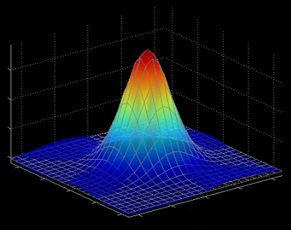
А теперь рассмотрите внимательно этот снимок из космоса прочитав описание цветовых значений под ним. Мы видим все тот же "пространственно-территориальный" график самовозбуждения. Основной рост светимости концентрируется в отдельных (оранжевых) "точках" отбирая "энергию" (синий цвет деградации) со всей остальной территории.
Результаты глобализации хорошо видны по ночной светимости планеты, которая используется как показатель плотности населения и уровня развития территорий. Обратите внимание на залитые синим цветом территории на скомпонованной фотографии Евразии из снимков 1993 и 2003 годов. Синим цветом обозначен вымерший за десятилетие свет. Наглядно видно, в какие места планеты стягивается "одеяло ресурсов" со всей остальной территории и где находится "периферия".

| новый свет |
|
| рост света высокой интенсивности | |
| рост света низкой интенсивности | |
| высокоинтенсивный свет без изменений | |
| средней интенсивности свет без изменений | |
| низкой интенсивности свет без изменений | |
| сокращение света низкой интенсивности | |
| сокращение света высокой интенсивности | |
| "вымерший" свет |
Подробная интерпретация здесь.
(Примечание: Не нужно рассматривать это изображение, как доказательства индустриальной развитости территорий, увеличивающих свою светимость. По размышлении, - информация на данном снимке должна говорить скорее о росте (падении) уровней потребления, чем о развитии промышленности. Т.е. коррелировать с растущим ВВП а не показателями промышленного роста. Они могут совпадать, но прямой связи между ними нет. И возрастающая яркость побережья Адриатического моря не говорит о появлении там новых заводов. )
Может быть, мы когда-нибудь научимся вводить отрицательные обратные связи в экономике, в виде прогрессивных налогов, инвестиций в депрессивные регионы, - но наблюдаемые тенденции пока не дают повода для оптимизма. Так как деньги можно "заработать" только там, где они есть. Туда же устремляются человеческие, товарные и сырьевые потоки. Система самовозбуждается, и когда "кормящая" ее периферия окончательно истощится и превратится в пустыню, - гибнет.
Вообще, любую само-инвестицию предприятия в свое развитие можно (и нужно) рассматривать, как попытку замкнуть кольцо положительной обратной связи. Цепочка проста, - большая инвестиция, - больше и эффективней производство, - больше прибыль, - больше денег для инвестиций... кольцо замкнулось. Система перестает быть управляемой. Она занята только максимизацией прибыли. На стартовом участке это может быть полезно для общества. Но неуправляемое развитие рано или поздно приводит к болезненной зависимости целых регионов от подобных предприятий "бройлеров", в свою очередь зависящих от внешних, неподвластных ни им, ни правительству рынков сбыта. Чаще всего уже в других странах. (Никто ведь не занимался планированием. Только максимизацией прибыли. А это самоинвестиции.) Когда предприятие обязано работать уже только потому что некуда девать задействованную в них рабочую силу. Оно начинает требовать правительственных дотаций, компенсации издержек, уменьшения налогов. На перенаправление рабочей силы в другие отрасли нет ни политической воли правительства, ни "экономической целесообразности". Только обостряется борьба за рынки сбыта (К этому моменту, как правило эти рынки уже "внешние" и потому неконтролируемые). Малейшая политическая неувязка и... В конечном итоге все сводится к резкому коллапсу отрасли и демонстрациями орущих, голодных толп с плакатами под стенами правительственных учреждений. Хотя при чем тут правительство? У него есть власть ограничить направления инвестиций "частного инвестора"? Или есть какие-то основания предполагать что у "частного инвестора" государственный склад ума? Любое частно-хозяйственное планирование, даже крупных экономических субъектов не в состоянии охватить всей экономической деятельности страны. Оно также не может "самоограничить" свое развитие. По крайней мере пока не включатся объективные ограничивающие факторы. Но никак не правительственные воззвания к разуму. (Никто ведь не пытается сдержать экспорт нефти в России, хотя очевидная экстраполяция этого процесса во времени показывает быстрое исчерпание доказанных запасов. Или кто-то стремится реально ограничить потребление углеводородов в "развитых" странах, львиная доля которых уходит на бессмысленное катание человеческого материала в индивидуальных транспортных средствах с параллельным уничтожением экономичного общественного транспорта?)
А правительство..., - а что правительство? Оно все это время тихо радовалось росту ВВП, ставило его себе в заслугу и снижало налоги, чтобы не мешать "развитию" и "росту" одной, "основной гармоники". И вдруг..., - "опаньки"!
Хотя "вдруг" ли? На мой взгляд совершенно закономерно. Ведь финансовые инструменты не подчинены правительству изначально. По закону. Сначала нужно дать им этот инструмент в руки, а потом уже спрашивать за плохую, нестабильную работу. А иначе не с кого.
---------------------------------
В любом случае измерение показателей экономики государств на базе суммы количества и объема торговых транзакций (ВВП), никак не связано с качеством жизни людей.
Например: Здоровые люди не нужны для экономики. Они не покупают лекарства. Они не ходят к частным врачам. Они не увеличивают ВВП.
«Велосипедист», а тем более «пешеход», - бедствие для экономики. Он не покупает автомобиля и не берет под него кредит. Не покупает бензин. Не пользуется услугами ремонтных мастерских. Не страхует «гражданскую ответственность». Не пользуется платными стоянками. Не страдает от ожирения. Да он еще и здоров, черт возьми! ВВП валится просто на глазах.
Война наоборот – благо для экономики. Особенно война на территории другой страны. А уж снабжение через подставные фирмы все воюющие стороны других стран, - просто мечта бизнесмена. Мало того что есть гарантированный рынок сбыта, - но и после окончания такой войны, останется только подмести и занять территорию. (Не нужно даже смещать правительства. Они все равно будут полностью зависимы и легко управляемы обычными внешними кредитами.) Война, - это спрос практически на все. Лекарства, оружие, еду, дорогой высокотехнологичный транспорт, ритуальные услуги, место на кладбище…
Посмотрите, как благоприятно сказалась Вторая Мировая война на экономике США.
(Хочу сразу опровергнуть сторонников Рузвельта и подчеркнуть, что, - "Из депрессии США вышли не по «Новому курсу» Рузвельта, а благодаря созданной под его руководством системе мобилизационной перестройки экономики в годы второй мировой войны. Оправдались пророческие слова Кейнса, с которыми он обратился к американскому народу 29 июля 1940 г. в журнале «Нью Рипаблик»: «Ваши военные приготовления не только не потребуют от вас жертв. Наоборот, они явятся тем стимулом к увеличению индивидуального потребления и росту жизненного уровня, который не смогли бы дать вам ни победа, ни поражение нового курса». Другими словами "ружье висящее на стене выстрелило".)
На графике слева изображено соотношение государственного долга к ВВП. Страна явно находилась при смерти. Не помогало ни строительство дорог, ни общественные работы, проводимые "новым курсом". Отношение госдолга к ВВП уже 125%. Жизнь поддерживалась только вертикальным ростом государственного долга, который уже ничего не исправлял, - и тут вдруг привалило счастье. Чужая Война. Вся Европа в руинах, - но какая благодать для экономики штатов. Несмотря на то, что в абсолютных значениях госдолг практически не падает (см. график выше.), но по отношению к бешено растущему ВВП он резко снижается.
Еще один, не такой резкий спад относительного уровня госдолга виден в начале 50-х. По странному временному совпадению, - корейская война 1950-1953 гг. (но правда эта война не "чужими руками").
Конечно такая примитивная историческая параллель абсолютно некорректна (факторов намного больше и самое главное, - отсутствует золотая привязка денег), - но сейчас госдолг США быстро растет а ВВП стагнирует. Что произойдет, когда госдолг превысит 125%?
Подумайте, (1) способствуют ли росту экономики (ВВП) следующие события. И (2) становится ли от этого лучше жизнь человека.
- Человек готовит дома. Или человек ест в Макдональдсе, а затем покупает лекарства от изжоги.
- Человек ест в меру. Или человек объедается до ожирения, а потом покупает средства для похудения.
- Человек ходит пешком. Или человек покупает автомобиль, а потом покупает беговую дорожку.
- Человек дышит чистым воздухом. Или человек курит траву, нюхает пинзин, живет счастливо J, заболевает раком, что увеличивает производство лекарств.
- Автомобиль попадает в аварию, что приводит к увеличению производства новых автомобилей.
- Пожарник находится без работы, он поджигает лес, появляется работа и растёт производство средств пожаротушения (реальный случай летом 2002 года в США).
- Военная корпорация изготавливает ядерные ракеты, а затем систему противоракетной обороны (тоже реальный случай).
Другой, не менее очевидный пример, приведенный Сергеем Егищянцем, также показывает отсутствие связи между потреблением конечных благ и величиной ВВП.
«Пусть в стране живёт 1000 человек, и у всех есть обычные советские чайники (которые на электроплите греются). Цена каждого 300 рублей, добавленная стоимость равна одной трети цены (100 рублей), срок службы 20 лет. Т.о., для обеспечения народонаселения нужно производить ежегодно по 50 чайников совокупной добавленной стоимостью (т.е. ВВП), равной 50*100=5000 рублей.
Теперь заменим эти примитивные чайники красивыми пластмассовыми. Цена 1000 рублей, добавленная стоимость равна половине цены (т.е. 500 рублей - там же есть "высокие технологии", поэтому доля добавленной стоимости в цене выше), срок службы 2 года. Для обеспечения народонаселения потребны ежегодные 500 чайников совокупной добавленной стоимостью (т.е. ВВП), равной 500*500=250000 рублей.
Итого имеем: ВВП вырос в 50 раз, Греф с Кудриным получили по звезде героя, наш гарант пуще прежнего издевается над иностранными лидерами, публицисты взахлёб пишут панегирики "империи чайников", а личный состав ЦРУ стройными рядами облачился в белые простыни и в ужасе ползёт на кладбище - занавес. Только вот, несмотря на дикий вой фанфар, реальное потребление конечного блага (в данном случае, кипятка) осталось прежним - увы-с. Более того, если чуть глубже влезть в статистику (включив в неё занятость), то окажется, что производительность труда выросла раз этак в 20 и зарплата тоже - но вот "реальная зарплата" (в пересчёте на необходимое количество чайников) при этом почему-то упала. Т.е. основные макроэкономические показатели совершили вертикальный взлёт - зато реальные либо остались на месте, либо снизились.»
Более строгий, академический взгляд о проблемах подсчета национального продукта можно прочесть в учебнике по Макроэкономике здесь
Система национальных счетов, народнохозяйственный кругооборот.
Теоретические проблемы национальных счетов.
-----------------------
Золотовалютные резервы.
В настоящее время основным обеспечением банкнот являются ценные бумаги корпораций, золотовалютные резервы (запасы иностранных валют), государственные ценные бумаги. То есть, основание эмиссионной пирамиды стало ещё более шатким. В 1970-1980 годы идеологию "валютного управления", "currency board" обосновали так называемые "монетаристы" во главе с М. Фридманом. Согласно этой теории, государство могло быть эмитентом, но все выгоды должны были присваивать крупнейшие банки. Данная теория была существенным регрессом в экономической мысли.
-
Монетаризм отвергает идею вливания денежной массы под экономический рост, под рост товарооборота. В этой теории на качественно новом этапе повторяется идея золотого обеспечения денежной массы и твёрдых денег: вместо государства функцию эмиссии большей части безналичных денег начинает выполнять другой экономический агент. Государство лишь должно обеспечить для этого агента, приобретающего огромную власть из факта эмиссии денег, надёжной денежной базой. Как и в 19 веке, этим агентом является укрепившийся финансовый капитал, более не нуждающийся в опёке и защите государства.
Причина живучести монетаризма, несостоятельность которого доказана давным-давно и в массе работ, и в жизни (Из последних хороших и популярных работ см. С. Егишанц (ошибка. Кобяков А.Б., Хазин М.Л.; Сергей Егишянц написал другую, не менее замечательную книгу «Сумерки богов» прим. economics) "Закат империи доллара" М.2004 г.), состоит в его практической пользе для международного финансового капитала. Для общества всегда выгоднее умеренная инфляция. При прочих равных условиях, и при той, и при другой политике экономика окажется в одной и той же точке. Хитрые экономические агенты приспособятся и будут оценивать цены правильно.
Если посмотреть не на конечную точку, а на траекторию, то легко увидеть, что вначале дефляция вызывает спад, шок, а инфляция – рост. "Горбик" этих двух графиков означает дополнительное национальное богатство, созданное при проведении инфляционной политики. Так что, "при прочих равных условиях" не получается. Впрочем, дело не в этом. Дело в том, кто присваивает выгоды от эмиссии – общество, бюрократия центрального банка или крупнейшие международные банки. Эту простую вещь и скрывают за шумом и визгом диких споров между кейнсианцами и монетаристами.
Кейнсианцы отстаивают интересы банков, связанных с центральным банком государства, монетаристы – интересы крупнейших транснациональных финансовых корпораций. И те и другие при взаимной ненависти и борьбе с применением любых средств, упрямо скрывают от общества суть конфликта. Господство международной финансовой олигархии везде и всегда приводит к одному результату. Несчастная Аргентина, купившись на идеи монетаристов, согласившись на "валютное управление", продолжает падать в бездну. Происходит то, что предсказывалось российскими специалистами ещё в 1998 году.
Порочность этих идей в том, что, как и в средние века, страна для увеличения оборотов торговли (порождённых то ли ростом экономики, то ли углублением разделения труда) должна сначала закупить за рубежом золота или долларов за реальные товары, а лишь потом экономика начнёт расти. Нелепость подобной теории лежит на поверхности. Но зато, какие выгоды для крупнейших банков! И эту грубую истину скрывают тысячи томов лженаучных сочинений.
Существует довольно логичная и в общем совершенно правильная мысль, что золотовалютный резерв (ЗВР) - "это валютный депозитарий, покрывающий международные обязательства российских субъектов, в т.ч. обязательства по зарубежным кредитам. Т.е. что его нельзя тратить на приобретение телевизоров и трусов, а можно использовать только для выдачи валюты российским экономическим субъектам, в целях исполнения ими своих международных финансовых обязательств. Именно это и происходит - деньги из ЗВР идут на рефинансирование зарубежных кредитов наших банков и корпораций, которые им пришел срок возвращать, а также выдаются иностранным держателям российских активов, покидающим Россию. Т.е. выполняется функция ЗВР как источника покрытия муждународных финобязательств."
И держать его глупо. И потратить нельзя... Но эта мысль совершенно не отвечает на вопрос, - почему внутренние экономические субъекты, покупающие в Центробанке необходимый им "рубль" за полученные в кредит "доллары", - бегают за этими кредитами вне страны? Они не могут получить рубли у собственного Центробанка напрямую? Технически могут. Но процент по этому (рублевому) кредиту сознательно сделан бОльшим, чем вне страны. Почему так? Науке неизвестно. Точнее известно, но здравым смыслом, с точки зрения интересов самой страны, - это объяснить невозможно.
С 1971 г. золото перестало быть отражением стоимости (ценности) товарно-услуговой массы и превратилось в один из множества товаров. Поэтому его цена зависит, скорее, от веры и инерции привычек, но не является определяющим в определении цены товара в золоте. Этой зависимости просто нет.
Даже в законе о Центральном Банке Российской Федерации отдельной статьей фиксируется, что:
Статья 28. Официальное соотношение между рублем и золотом или другими драгоценными металлами не устанавливается.
Отсутствие привязки денег к некоему эталонному «невоспроизводимому» товару позволяет вести практически ничем не ограниченную кредитную эмиссию денег. Нужно только корректировать скорость этой эмиссии со скоростью откачивания («зарабатывания» любыми рентными субъектами) этих денег из реальной экономики. (Естественно не забывая при этом обменивать их на некие "обязательства" в виде облигаций или акций. Таким образом можно перенаправить денежные потоки в виртуальную экономику и ограничить платежеспособный спрос. То есть инфляцию.) Любое несоответствие будет приводить либо к росту, либо к падению стоимости денежной единицы в реальных товарах.
Денег, обычных недолговых денег, вроде тех, что были розданы в Германии каждому по 50 марок после войны, - уже давно нет. Есть только кредитные долги. И вернуть их нельзя в принципе. Потому что долги, - это и есть деньги. Гипотетический возврат долгов означает даже не обнуление денежной массы. Это отрицательная величина.
---------------------
Для смягчения скачков инфляции удобны виртуальные финансовые рынки….
Они отбирают на себя часть денежной массы и этим уменьшают инфляцию работая чем то вроде впитывающей губки - демпфера.
Вот как, например, жалуется Анатолий ШАПОВАЛОВ (первый заместитель председателя Национального Банка Украины) на отсутствие развитых финансовых рынков и невозможность таким образом сдерживать инфляцию в условиях товарного дефицита. Так как избыточные деньги, которые можно было бы "связать" в виртуальных "ценных бумагах" под обещание их роста в будущем, вместо этого сразу же идут на потребительский рынок, скупая товарную массу и вызывая рост цен.… даже в таких условиях вполне можно было бы снизить объем спроса на потребительском рынке, грамотно направив доходы граждан на инвестирование и сбережения. Но уровень развития финансового рынка остается очень низким, и это является четвертой системной проблемой. Фактически, у подавляющего большинства населения на сегодняшний день нет альтернативы размещения своих временно свободных средств, кроме как на банковский депозит. Но банки далеко не всегда могут удовлетворить потребности граждан как по стоимости депозитов (особенно в условиях их ориентации на привлечение более дешевых средств за границей), так и по спектру услуг (многие граждане уже дозрели до того, чтобы вкладывать средства в те же пенсионные программы, но элементарно не знают, как это сделать). Поэтому недостаточное развитие фондового рынка и сегмента небанковских финансовых учреждений не позволяет вести речь о формировании дополнительных действенных каналов отвлечения средств населения от потребительского рынка и перенаправления их на инвестиционные цели.
Если же рынки "развиты", то деньги, по мере выхода из экономики, превращаются в «рост активов» на финансовых рынках. То есть существует едва ли не прямая зависимость (с каким-то временным лагом), между скоростью подачи новых денег в основание пирамиды, и ростом стоимости активов на финансовых рынках. Причем этот рост многократно мультиплицирован.
Механизм мультипликации (умножения) активов примерно следующий:
Допустим, Вы заработали немного денег, а компания «AOL» эмитировала 1000 акций стоимостью по 90 долларов каждая.
Средства Массовой Информации (СМИ) в это время говорят, что компания демонстрирует большие успехи на рынке, и спрос на ее акции растет. Соответственно ее акции растут в цене.
И Вы покупаете себе десяток акций уже, например по 100 долларов за штуку. И самим фактом покупки, Вы уже показываете, что акция стоит не 90, а 100 долларов. Если их покупают уже по 100, значит, все остальные акции этой компании тоже стоят уже не 90, а 100.
И хотя вроде бы ничто не изменилось. На рынок попало только 100*10=1000 Ваших долларов. Вы всего-навсего купили себе немножко «AOL». Но капитализация «AOL» после этой покупки выросла аж на (100-90)*1000=10000 долларов.
Это повод для СМИ (средства массовой информации) и рейтинговым агентствам сказать что «AOL» делает еще бОльшие успехи на рынке. И ее акции стоит покупать. Все остальные держатели этих акций уже могут обналичить их по возросшей цене или заложить в банке не по 90, а по 100. А это уже «актив», дающий дополнительные кредиты, реальные деньги. Все довольны, все смеются.
Но…
Если в это время Центробанки по каким-то политическим соображениям не эмитируют достаточного количества денег, Вы, скорее всего, ничего не заработаете и, соответственно, не купите на излишки акций «AOL». Акции, которые не растут в цене, мало кому нужны. Кто-то из держателей захочет их обналичить. Если акции не растут, - наличные деньги надежней.
Если от акций избавляются, - они падают в цене. Банки уже не устраивают дешевеющие залоги, они требуют погашения части кредита деньгами. Что в свою очередь требует реализации части акций и дальнейшее их падение.
В случае падения рынка акций все начинает скручиваться в обратную сторону:
Люди, решившие обналичить акции, вдруг выясняют, что покупателей - нет. И не только потому, что все резко стали умнее, но и потому, что денег вошло 1000, а цена выросла на 10000 (см.выше). И, соответственно, цена акций вместе с виртуальным "богатством" их держателей будет падать, пока не сбалансируется с имеющейся на рынке наличностью. Ну а где она "сбалансируется" - это только богу известно, поскольку с одной стороны претендентов на кэш много, а с другой - самого кэша мало и его значительная часть обычно в собрана руках тех, кто падение инициировал. А вот среди них дураков точно нет.
Когда лопнул Internet-bubble (интернет-пузырь) один только AOL списал со своих активов 100 млрд.долларов и… мир не перевернулся. Держатели акций просто остались ни с чем. А AOL как работал так и работает. Что говорит о небольшом влиянии виртуального рынка акций на реальную экономику.
Итого:
- ни при каких падениях никуда не денутся наличные деньги на руках у населения;
- ни при каких падениях никуда не денутся деньги банков на счетах в Центробанке (ФРС, ЁКЛМН и проч)
(То есть денежные агрегаты М0 и (в какой то мере М1 - обязательные резервы коммерческих банков в Центробанке). Именно те «настоящие» деньги из чистого воздуха, которые эмитируются Центробанками. Но не те, что производятся коммерческими банками в результате банковской мультипликации. М2 и другие. Прим. economics)
- все остальное, через банкротство граждан и организаций, сдуется запросто (включая депозиты граждан и остатки на расчетных счетах организаций)
Так что доллары убиваются, но не сами деньги, а некие "обязательства" (расчетные счета и депозиты) и, так сказать, "ожидания" (акции и прочее). Но для обычного человека это как раз и выглядит как убийство самих денег.
Перефраз отсюда.
(!) Финансовые рынки также выполняют другую важнейшую задачу. Они работают "промокашкой", которая впитывает избыток денег заработанных в реальной экономике и производят обмен "настоящих денег"(которые обслуживают платежи в экономике) на "обещания" (потом заплатить побольше). И таким образом возвращают эти самые "настоящие деньги" в кругооборот экономики. Но, естественно, в долг. То есть временно.
И, что особенно плохо, - со всевозрастающей скоростью.
Для лучшего понимания процесса (радио)физику это можно представить как рекомбинацию носителей коллекторно-базового p-n перехода в биполярном транзисторе. Где тонкая база это реальная экономика, а коллектор относится к финансовым рынкам. Благодаря этому не происходит обеднения основных носителей заряда в базе (реальной экономике). Но в отличии от транзистора это явление временное. (К слову, 700-миллиардный "План Полсона" по спасению экономики США в такой модели выглядит как прямой переток зарядов из эмиттера в коллектор минуя базу. Пробой p-n переходов.)
Возьмем. к примеру, акцию, которую выпустило предприятие, нуждающееся в деньгах. Пройдя с ней через цепочку "регистраторов", "разрешителей", "продавцов", оно наконец продало ее на рынке акций, описанном выше, за уже заработанные "инвестором" "настоящие деньги". Деньги попали на предприятие и сразу же ушли в зарплаты, в оплату материалов... то есть вернулись в "кровеносную систему" экономики, где они снова начинают "зарабатываться" инвесторами. Инвестор же получил "обещание", - либо выплаты дивидендов (но потом), либо "роста цены акции" (Аргументация, - "ну всегда ж росли, вот наверное и дальше будут".) Действительно рынок растет "всегда" (может даже десятилетиями, как рынок недвижимости), - пока не наступает его "черный вторник" и он падает за один день.
Примерно тем же процессом заняты "ценные бумаги" правительств, которые, как и предприятия, нуждаются в деньгах. Например Казначейство США берет на себя долг и выпускает "ценную долговую бумагу правительства". Через ФРС она продается на "открытом рынке", неся в себе те же функции "обещания заплатить потом, но больше". А привлеченные деньги уходят в пенсии, социал, строительство дорог и т.п. возвращаясь в кровеносную систему экономики. Для "инвестора" они отличаются лишь меньшей доходностью и большей надежностью. (В самом деле, что может быть надежнее, чем занимать деньги художнику, который сам их рисует? (Ну почти сам. Еще есть Центробанк, который имеет свое мнение по данному вопросу.) Свой долг то он всегда сможет нарисовать и отдать. Вопрос лишь в том, кто этот долг купит после дефолта? Когда занимать ему в долг и дальше станет очевидной для всех глупостью.)
Чтобы представлять себе обобщенную картину мирового распределения денег (видов ликвидности) обслуживающих различные рынки в процентах от мирового ВВП (GDP) посмотрите на эту перевернутую пирамиду.

Слои классов активов классифицированы согласно их ликвидности и безопасности, поднимаясь от самого ликвидного и надежного к самому прибыльному и наименее безопасному. Упрощенный рисунок ниже - одна из современных интерпретаций "Перевернутой Пирамиды Экстера" (англ.). В этой диаграмме золотая вершина скрыта позади ‘денег повышенной мощности’. Физическое золото - все еще резервный актив, и единственное, что не обременено никакими долгами контрагентов.

Power money - "деньги повышенной мощности". Другими словами золото, наличные деньги эмитируемые Центробанками и облигации казначейства составляют около 10% мирового ВВП и всего 1% существующей ликвидности.
Broad money - "широкие деньги". Неофициальное название показателя денежной массы МЗ. (Не запоминайте буквально. Если копнете глубже, - поймете какой бардак творится с определениями в экономике) составляет 122% мирового ВВП и всего 11% ликвидности.
Как видно из диаграммы, Power money - "деньги повышенной мощности" (золото, Ноты Федерального Резерва и Казначейские вексели (краткосрочные T-Bills)), и Broad money - "широкие деньги" составляют только небольшой процент всей ликвидности.
Номинально все они выражены в "деньгах" (Доллары, Евро и т.п.) и при некоторых условиях взаимообмениваемы друг на друга. Но... Такая пирамида может существовать только в условиях роста и постоянно ускоряющейся кредитной подпитки ликвидностью (деньгами) снизу.
Если разражается кредитный кризис, то кредиторы ("испуганные страусы") бросаются по пирамиде вниз, пытаясь обменять свои виртуальные активы на более надежные и ликвидные (хотя и менее прибыльные) активы в нижестоящих слоях. Кэша на всех не хватает. Верхние слои обесцениваются. Их слишком много, и все они представляют собой чьи-то обязательства, в которые "напуганные страусы" уже не верят. Пирамида "проваливается сама в себя". Это то, что произошло в недавнем ‘бегстве в качество’, которое мы могли наблюдать в порыве кредиторов к казначейским векселям, толкая ставки к беспрецедентно низким уровням. До сих пор мы испытали только раскручивание секьюритизированного слоя и массовый забег в более низкий слой казначейских обязательств (treasuries) и Нот Федеральной Резервной системы (наличные). Это ‘бегство в качество’ увеличило спрос на доллар и как следствие возросла его покупательная способность а также казначейских векселей, но оказало небольшой эффект на цену золота, - вершину перевернутой пирамиды. По видимому это связано в первую очередь с тем, что роль золота как мировых денег временно заретуширована его демонетизацией. (Надолго ли?)
Но для финансовых властей остались неразрешенными вопросы, - может ли мягкая денежная политика (снижение ставок, налоговое стимулирование и бюджетные дефициты) остановить самообвал пирамиды и как глубоко этот процесс может зайти?
Мы же зададимся вопросом, а надо ли вообще спасать "виртуальный мир", который держит "реальный" в долговой удавке вынуждающей все его действия планировать с точки зрения прибыли на вложенный виртуальный капитал? Да. Проституция, оружие, наркотики, развлекательные центры, реклама, брэнды, гаджеты... все это пользуется спросом и прибыльно. Но обществу нужно качественное, дешевое и потому неприбыльное образование, здравоохранение, наука. Нужно, даже несмотря на то, что "спросом" в широкой массе населения все это не пользуется.
Что такое Центробанки стран.
Наблюдать за ними занятие более чем увлекательное.
Исторический обзор о том, как частные банки различных стран дрались за право стать «эмиссионными центрами», прообразами современных Центробанков можно прочесть в книге Веры Смит «Происхождение центральных банков» в разделе «Классические статьи по экономике»
Изумительно хороший текст по истории банковского дела и возникновению Федеральной Резервной Системы здесь.
Вы из кожи вон лезете и ищите доказательств существования «мирового правительства»?
Не нужно ходить далеко. Вам не нужно лезть в дурные дебри конспирологии и рассуждать на попахивающие паранойей темы о «масонстве» и «всемирном еврействе».
Представьте себя «хозяином мира». Что бы Вам понадобилось для управления им?
Наверное, надежные рычаги воздействия на страны, которые не зависят от демократической дурости толпы и от избираемых ею правительств? Обязательно нужна единая денежная единица подчиненная Вам на всей управляемой территории и строжайший запрет на осуществление собственной денежной политики в колониях. Крайне полезна безответственность за свои действия. Да и вообще лучше всего поменьше привлекать к себе внимания.
Возьмите совершенно открытый закон о Центробанке Вашей страны и просто прочтите.
Для простоты восприятия возьмите, к примеру, русскоязычный закон о Банке России. Копия текста на этом сайте здесь
(В этом разделе для сравнения собраны законы о Центробанках России, Украины, Беларуси, Казахстана, Кыргызстана, Узбекистана и Таджикистана. (Кроме закона о Нацбанке Украины, - все на русском языке))
В принципе, чтобы не запутываться в утомительном списке всех благоглупостей закона, можно просто открыть правовой статус Банка России на том же сайте Центробанка
Здесь все описано «по существу». Цитирую:
«Ключевым элементом правового статуса Центрального банка Российской Федерации является принцип независимости, который проявляется прежде всего в том, что Банк России выступает как особый публично-правовой институт, обладающий исключительным правом денежной эмиссии и организации денежного обращения.»
Все верно. Только одно уточнение. Банк не осуществляет независимой(!) денежной эмиссии. Эмитировать рубль, например, по требованию правительства, он не имеет права.
Опять же. По закону.
«Статья 22. Банк России не вправе предоставлять кредиты Правительству Российской Федерации для финансирования дефицита федерального бюджета, покупать государственные ценные бумаги при их первичном размещении, за исключением тех случаев, когда это предусматривается федеральным законом о федеральном бюджете.
Банк России не вправе предоставлять кредиты для финансирования дефицитов бюджетов государственных внебюджетных фондов, бюджетов субъектов Российской Федерации и местных бюджетов.»
Все, что он может сделать - это выпустить новые рубли под пришедшую «снаружи» денежную массу по задекларированному курсу. (Точнее говоря "технически" он конечно может предоставлять "рубль" для внутренних субъектов экономики. Вот только внутреннему субъекту проще и дешевле занять "доллар" у внешнего кредитора и обменять в своем Центробанке на рубль.) Работать ларьком-обмеником.
Тоже крайне интересный процесс:
Представьте себе. Россия продает нефть. (Опустим то, что разворовывается и оседает в оффшорах). Около 200 млрд. долларов приходят в страну. Экспортер продает их на внутреннем рынке. Что должно произойти?
Угадали. Должна включиться "невидимая рука рынка" (по Адаму Смиту. А по человечески, - "отрицательная обратная связь"). От переизбытка долларов внутри страны рубль начинает расти относительно доллара. Или, что то же самое, - доллар падает внутри страны. И паритет валют выравнивается до выравнивания торгового баланса страны.
Но не тут-то было. Сразу же выбегает заботливый Центробанк и ссылаясь на:
- договоренности с МВФ о поддержании курсов,
- на «поддержку своих экспортеров»,
- на «макроэкономическую нестабильность» и необходимость создания резервов
начинает спасать падающий доллар. Для собственного государства он не имеет права печатать денежную массу. Но для падающего доллара… - это святое.
Центробанк печатает рубли и по заявленному им самим курсу (который в разы ниже реальной покупательной способности местной денежной единицы. См. ниже статистку Мирового Банка), начинает скупать избыток доллара, удерживая его от падения. Он разрывает цепь "отрицательной обратной связи" направляя ее в "сливной бачок" Стабфонда. (напомню: Деньги изъятые из обращения не оказывают инфляционного воздействия на экономику) В результате этой эмиссии мы наблюдаем уменьшение долларовой массы в обороте страны и увеличение рублевой. И, соответственно, инфляцию не доллара, а наоборот - рубля.
В результате этой деятельности - обратная операция. Например, приобретение оборудования вне страны обойдется резиденту дороже. Так как ему сначала придется купить «твердый» доллар за свой уже обесценившийся рубль.
Таким образом, накопление «валютных резервов» центральными банками не только лишает возможности внутреннюю экономику обменять эти доллары на реальные товары, но и поддерживает заниженный обменный курс внутренней валюты, что приводит к повышению внутренних цен на сырье (ведь даже если сырье не является импортным товаром, - его продажа внутри страны будет не выгодна, пока его стоимость не сравняется с "внешней" ценой согласно поддерживаемой Центробанком курсовой разницей. Сырье выгоднее вывезти, - что автоматически вызовет внутренний рост его цены в связи с нехваткой.) и на импортное оборудование.
(!) Небольшое, но важное замечание: Занижение курса своей валюты не обязательно плохо для экономики. При грамотной государственной политике таким способом можно отлично развивать страну. Но тут уже становится важна структура экспорта-импорта и становится обязателен контроль за границами (таможня) и движением капиталов. Подробнее об этом пишет в своей замечательной работе "Фиктивные деньги"(Обязательно прочтите!) Александр Исаев:
"До настоящего времени одним из наиболее дискуссионных в экономической литературе остается вопрос о целесообразности искусственного занижения курса национальной валюты с целью подъема экономики. Не углубляясь в эту проблему, все же следует заметить, что занижение курса национальной валюты оправдано лишь в том случае, если это в конечном счете ведет к увеличению совокупного реального национального богатства, которое данная страна приобретает за определенный промежуток времени. В целом, искусственное занижение курса национальной валюты позволительно в двух случаях:
1. когда страна-экспортер испытывает исключительную потребность в импортных товарах (например, в сырье, интеллектуальных технологиях или высокопроизводительном оборудовании);
2. когда страна-экспортер, занижая курс национальной валюты, компенсирует потери национального богатства благодаря увеличению экспорта в те страны, которые занижают курс национальной валюты еще больше, чем данная страна-экспортер.
При этом совершенно недопустима ситуация, когда курсом национальной валюты манипулируют предприятия-экспортеры в частнособственнических целях." )
Может быть, в Украине обстоят дела иначе?
Передаем еще раз слово Анатолию Шаповалову (первому заместителю председателя Национально Банка Украины)
…фактор, серьезно влияющий на динамику расширения денежной массы в 2007 году, — значительные объемы интервенций по покупке валюты на межбанковском рынке с целью поддержания курса гривни. Сейчас мы не будем касаться вопроса, целесообразно или нецелесообразно вводить уже сейчас большую гибкость обменного курса, — это тема для отдельной большой статьи. Отметим только, что за девять месяцев текущего года чистый объем таких интервенций составлял почти 7 млрд. долл. США. Эти средства Национальный банк частично нейтрализовал через проведение мобилизационных операций, объем которых за этот период составлял 58,7 млрд. грн.
Это ни много ни мало 10% ВВП страны. И слово «поддержание» (курса гривни) нужно заменить на «обрушение». А в остальном все верно.Обращаясь к сайту Нацбанка к докладу "Основные принципы денежно-кредитной политики на 2008 год" можно понять, насколько денежная масса в стране определяется внешними валютами.
"Через валютный канал в январе-октябре (2007 г.) в обращение выпущено 37 млрд. грн., тогда как через кредитный - всего лишь 149 млн. грн. (Почувствуйте разницу!) .... такое интенсивное наполнение экономики деньгами при условии значительного дефицита торгового баланса происходит впервые." (перевод economics)
Другими словами Нацбанк выполняет не прямую свою задачу по поддержанию стабильности национальной денежной единицы. Задачи которая прописана ему в статье 6-й закона "О национальном банке Украины". А строго противоположную задачу. Он дестабилизирует внутреннюю денежную единицу, поддерживая заниженный курс обмена в угоду чужой ему валюты. И он также не занимается кредитованием собственной экономики, предоставляя это "внешним" кредиторам. Что приводит к вымыванию товарной массы из страны на оплату процентов по кредиту. Сам же Нацбанк занят лишь "рестрикционной" политикой по стерилизации гривневой массы в стране, чтобы хоть как-то обуздать разгорающуюся гривневую инфляцию. Следствием этого происходит подавление собственного производства в стране. Из-за того, что производство требует "длинного" и потому непомерно дорогого кредитного цикла. (Никто не станет брать кредит на производство завода по 10% годовых, когда прибыль от этого завода пойдет не раньше чем через несколько лет). Поэтому развиваются только спекулятивные операции "купи-продай". С очень коротким (и потому недорогим) кредитным циклом (дни-месяцы) и максимальной прибылью.
Защищая интересы своей страны, Центробанк не должен пускать деньги напрямую, работая "ларьком-обменником". Входить в страну должен только товарный поток, а не денежный, его легко контролировать средствами таможни. А необходимый объем денег для обслуживания внутренней экономики Центробанк должен контролировать и создавать сам.
Если снаружи идут инвестиции, - замечательно! Пусть приходят в виде современных заводов, производственных, технологических линий. Под залог этих заводов вы легко получите внутреннюю денежную единицу, необходимую для пополнения оборотных средств. Если инвестор хочет вывести из страны «прибыль», - он должен выводить ее не в виде «денег», а в виде произведенных товаров и реализовывать на внешнем рынке не затрагивая и не дестабилизируя внутреннюю финансовую систему страны.
Вы также можете получить средства для своих инвестиций путем ввоза и реализации внутри страны отсутствующего в ней сырья.
Сложнее, если вы захотите ввезти в страну товары. Тогда уровнем таможенных пошлин страна будет добиваться, чтобы объемы ввоза не привели к значительному потеснению внутреннего производителя аналогичного товара с высокой степенью передела. (Автомобили, телефоны, самолеты...) Но польза для страны будет и в этом случае, так как это вызовет здоровую, а не «уничтожающую» местного производителя конкуренцию. (Другими словами полностью блокировать ввоз импортных товаров нельзя. Вредно. Это расслабляет внутреннего производителя. Он перестает следить за качеством и низкой ценой изделий. Регулировкой таможенных пошлин или квот нужно добиваться присутствия в стране 10-20% импортной аналогичной продукции. Это будет вызывать конкуренцию и в то же время не будет отбирать у местного производителя рынок сбыта.)
Но вернемся к Центробанку России. Дальше еще интереснее:
Выкупленную валюту Центробанк вкладывает (инвестирует), возвращая ее «на родину» в основание описанной нами выше финансовой пирамиды. То есть, оживляя экономику чужой ему страны(!).
Прямые инвестиции за границу на 1.01.2007 705983 (млн. долл. США)
Прямые инвестиции в Россию на 1.01.2007 271590 (млн. долл. США)
Но и это еще не все. Напечатанная рублевая масса «уже ни в какие ворота не лезет» и чтобы полностью не обвалить рубль, (который в основном скопился у экспортеров нефти на вершине местной финансовой пирамиды), Центробанк повышает ставку рефинансирования субъектов внутренней экономики до нереальных величин. В результате чего они лишаются дешевого кредита и, как следствие, удушается все внутреннее производство. Выживает только торговля, с ее коротким кредитным циклом и операции по обналичке. Но появление, к примеру, нового завода, у которого кредитный цикл – несколько лет, становится просто невозможным.
В такой ситуации "кредитором последней инстанции" становится не российский (местный) Центробанк. Из-за своей высокой процентной ставки он просто прекращает кредитовать собственную экономику. Ситуация доходит до абсурда. Взять кредит за рубежом становится дешевле. И "проценты" по нему в виде того же сырья, также уходят за рубеж.(У Центробанка в общем и вариантов других не остается при финансово открытых границах. Либо его экономику будет обслуживать просто другая денежная единица. Зачем тогда вообще нужен Центробанк? Но он нужен. Иначе источник инфляции был бы просто очевиден.)
"От занижения национальной валюты прежде всего выигрывают экспортеры, а расходы несёт всё общество. Чтобы общество не нервничало от такой несправедливости, ему объясняют, что деньги не уничтожены, а «заморожены» в Стабилизационном фонде на чёрный день. На самом деле все гораздо хуже: ЦБ вообще не в состоянии управлять динамикой денежной массы, потому что львиная доля рублевой эмиссии осуществляется Банком России под покупку иностранной валюты. Каковы цены на нефть - таков экспорт, каков приток валюты в страну - такова и денежная масса. Есть или нет достаточный спрос на эти эмитированные, а на самом деле просто обмененные на валюту рубли, ЦБ уже просто не волнует."
Как такое возможно и почему так происходит?
Читайте 8-ю статью устава Международного Валютного Фонда, по которой члены Фонда обязуются не допускать ограничений текущих операций внешнего платежного баланса, что гарантирует репатриацию доходов внешнему "инвестору" при любых, даже самых неблагоприятных для страны условиях. (Для того, чтобы страна не сорвалась с долгового крючка, условия получения кредитов включают в себя подавление внутренних производств, ведущих к самодостаточности экономики. Например, сельского хозяйства. И замена продукции таких отраслей на более дешевый импорт. Но импорт возможен только при наличии внешней валюты. Сначала выдаются кредиты "на развитие"(экспортирующих отраслей). По мере разрушения импортозамещающих производств начинают даваться новые кредиты "на стабилизацию". А потом уже просто чтобы выжили (пока нужно) )Попросту говоря, слабая страна полностью переходит под внешнее финансовое управление и правительство для сохранения сносных условий жизни в стране вынуждено во всем подстраиваться под внешнего "инвестора", а по сути "хозяина". Иначе капитал будет выведен и... каюк, - "белое безмолвие в грязном подвале".
РАЗДЕЛ 2. Обязательство избегать ограничений по текущим платежам
(а) В рамках положений статьи VII, раздел 3(b) и статьи XIV, раздел 2 ни одно государство-член не налагает ограничений на производство платежей и переводов по текущим международным операциям без утверждения Фондом.
Фонд, собственно, и создавался для недопущения правительственной практики ограничения текущих валютных операций. Потому что, как только возникала угроза девальвации, правительства ограничивали импорт и валюту "распределяли по карточкам". (Что, в общем, совершенно логично для страны.) Для недопущения этого и создавался Фонд.
При этом эта статья имеет правовую силу внутри страны. Фонд за этим очень внимательно следит! Вступая в Фонд, страна подписывает международный договор, а в большинстве стран, включая США и Россию, международные договора имеют преимущество перед национальными законами(!). Статья восьмая является неотъемлемой его частью .
(На практике вступающим странам разрешается задерживать признание этой статьи. Но Россией она уже была признана в середине 1996 г.)
Поэтому любой экономический субъект может изменять объемы денежной массы страны не спрашивая ни у кого разрешения. Даже у Центробанка. Центробанк сработает тут только ларьком-обменником обеспечивая рублевую инфляцию на очередной пришедший снаружи, международный кредит или "инвестицию".
После чего он тут же включает "пылесос" высокой ставки рефинансирования, пытаясь сгрести избыточную денежную массу. (А какие варианты?) Что полностью исключает длительное кредитование промышленности. (Построить завод и получить от него какую-то прибыль можно только через несколько лет. Под нынешнюю 10,5% годовых ставки Центробанка (ставка коммерческого банка непосредственно предоставляющего кредит будет еще на несколько процентов выше) это абсолютно нереально. Производство просто никогда не даст такой прибыли. Зато операции "купи-продай" с кредитным циклом день-два легко реализуемы и приносят отличную прибыль.
Подробнее смотрите статьи в этом разделе.
Думаете все это выдумки бездельников умирающих от зависти - трудолюбивому народу Соединенных Штатов? И доказательств заниженности курса местной валюты Центробанком нет и быть не может? Все идет строго по формуле спрос-предложение?
Ошибаетесь. Все подсчитано и приводится в экономической статистике. Не на поверхности конечно. Но и не очень глубоко.
Выберите в выпадающем меню «Российскую Федерацию» нажмите «Go» и прочтите в графе «PPP conversion factor to official exchange rate ratio» во сколько раз занижен "официальный курс" к "паритету покупательной способности". (На сегодняшний день - 0,5. Хотя статистика устаревшая. 2005 год. Следующий раунд международных сопоставлений ВВП (ICP) Всемирный Банк "обещает" только в 2011 году.)
То есть реальный курс даже по мнению Мирового банка должен быть в два раза выше.
(Аналогичные данные но по паритетам валют можно посмотреть в Федеральной службе государственной статистики в аналитической записке "О результатах Глобального раунда международных сопоставлений ВВП". Последняя колонка таблицы.)
Можете проделать ту же операцию с другими развивающимися странами.
Россия – 0,5
Украина – 0,3
Грузия – 0,4
Польша – 0,6
Китай – 0,3 (! А вот это интересное исключение. Чуть ниже мы подробно разберем, как можно развивать страну занижением курса.)
Египет – 0,3
Чили – 0,6
Бразилия – 0,5
И если Китай поддерживает свой Юань на столь низком уровне вполне сознательно. Так как развивает свои производственные мощности, жестко защищая внутренний рынок. (см. ниже замечания по структуре экспорта-импорта, которая ведет к развитию страны) Благодаря этой политике его ВВП уже на втором месте после США пересчитанном по паритету покупательной способности. ( Статистика Всемирного Банка. )
(Структура экспорта-импорта страны, - это кстати крайне важный вопрос. Гораздо более важный, чем "завышенность-заниженность" валютного курса. Так как развитие или деградация экономики страны происходят именно от ее ориентации на сырье или высокоразвитую промышленность. Валютный курс может только усиливать или ослаблять эти эффекты. Об этом немного ниже.)
Подробнее о Китае можно прочесть здесь: «Зубы Дракона – Мифы и реальность «китайского чуда»
То все остальные, с открытыми для перетоков капитала границами, являются в большей или меньшей степени марионеточными трудо-сырьевыми придатками «метрополий». В которых не развивается ничего, кроме рынка потребительского кредитования с привлечением обязательно(!) иностранных кредитов, трубы по выкачке сырья и «грязных» крайне трудозатратных, энергоемких, основанных на местных дешевых энергоресурсах полусырьевых производств, - вроде выплавки стали или алюминия.
И из-за беззащитных перед вывозом капитала границ, - темпы вывоза капитала год от года растут: в 2001 году из России на западные счета утекло 6 млрд. долларов, в 2002 – 11 млрд., в 2003 – 18 млрд., в 2004 – 27 млрд., в 2005 – 74 млрд., а только в первой половине 2006 – уже 61 млрд.; в целом же в банках, отчитывающихся перед BIS, размещено около 220 млрд. долларов, принадлежащих дорогим россиянам – это уже больше трети из общей суммы депозитов всех экспортёров нефти, составляющей 632 млрд. долларов. Картина будет тем разительнее, что к этим самым «банкам, отчитывающимся перед BIS», не относятся американские: штатовская статистика почему-то описывает лишь взаимоотношения с ближневосточными странами, игнорируя все остальные – так что эти 220 млрд. находятся на счетах российских резидентов только в европейских, азиатских, латиноамериканских, австралийских и африканских банках.
А это прямые потери.
Небольшое отступление:
Разговор у телевизора: На экране Петр Порошенко (Украинский «Шоколадный Заяц») в прямом эфире с пеной у рта доказывает, что политика Нацбанка в отношении курса доллара правильная.
- Почему Порошенко так защищает курс доллара? Доллар же опять упал. А Нацбанк упорно скупает его за счет эмиссии, держа курс и обесценивая гривну. Зачем?
- Потому что опустить доллар, - для него прямые потери его экспорта. Это значит дорожание внутренней рабочей силы в долларах (а значит себестоимости продукции) внутри страны и как следствие меньшая (или нулевая) маржа при продаже на экспорт. А затоваривание "шоколадок" внутри страны еще больше опустит цены и его прибыль.
-Ему тогда надо обсудить этот вопрос с председателем нацбанка. Какая бы у него ни была высокая зарплата, он наверняка сумеет сделать ему предложение, от которого тот не сможет отказаться. Кстати, кто у нас сейчас председатель?
Ведущая в телевизоре: После рекламного блока мы снова предоставляем слово Председателю Совета Национального Банка Петру Порошенко.
Хохот.
Это все было бы смешно, не будь так грустно. В этом собственно и проявляется «независимость» Центробанков от правительства. Они независимы от выборных демократических органов, но полностью зависимы от компрадоров (местный торговец, посредник между развивающимся национальным рынком и владельцами иностранного капитала, проникающими на этот рынок).
Думаете, если бы председателем Нацбанка стал бы Ахметов, была бы другая политика? Или экспорт стали не подчинен тем же принципам? Ведь намного проще, используя труд «бесплатных» шахтеров получать, дешевый уголь, платя копейки дешевым сталеварам. Не неся расходов на восстановление экологии, - получать дешевую сталь, продавать ее по «мировым ценам», получая приличную прибыль.
Напоминаю: По статистике Мирового банка гривна недооценена в три раза. Так что ж ему опустить доллар внутри страны до уровня Паритета Покупательной Способности, утроить свои долларовые затраты на себестоимость продукции и «вылететь в трубу» на экспорте? Он же не сумасшедший. А что до шахтера, у которого реальный доход во столько же раз меньше, чем мог бы быть при той же номинальной зарплате, - так кто этих шахтеров считал?
Впрочем, дело, конечно же, не в этих «оранжево-синих» клоунах. От них если что и зависит, так только скорость «приватизации» того, что построили при Союзе, и посылка «ограниченного контингента» в Ирак или Афганистан. Есть «Хозяева» куда более влиятельные. На Украине уже несколько месяцев (где-то с начала лета 2007 года) идет интенсивная инфляция. Особенно быстро она пошла после кризисов недвижимости на американских и европейских рынков остановленных сотнями миллиардов эмитированных ФРС и ЕЦБ кредитов . Казалось бы при чем здесь Украина? Откуда такой рост денежной массы. Шум стоит невообразимый. Местные оранжево-синие средства массовой информации наперебой хвалят (ругают, - в зависимости от принадлежности) власть за «социально-ориентированную» экономическую политику, ведущую к росту пенсий и бюджетных выплат, и соответственно вымыванию товарной массы и росту цен.
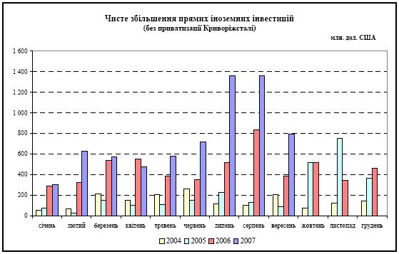Само по себе это звучит довольно абсурдно. Смотреть на правительство в этом случае совершенно бессмысленно, если только Вас не интересуют игры в «Царя горы». Там только бесконечное цирковое представление, - «какого Ваньку мы сегодня садим на царство». Смотреть нужно на игры Центробанка. Но если бы Нацбанк и в самом деле самонадеянно начал печатать денежную массу не имея на это соответствующего «золотовалютного покрытия», МВФ бы уже поднял жуткий скандал. Ничего себе! Право на реальную эмиссию есть только у ФРС, - а вы уже привязывайтесь к ней согласно накопленным резервам. Но со стороны МВФ-а все тихо. Может быть на нас упало несчастье, вроде российского? В виде неожиданно найденной «нефти» или «газа» и теперь у нас невероятно большой профицит внешней торговли? Тоже нет. Статистика показывает даже двадцатипроцентный дефицит. То есть, покупаем мы больше чем продаем и соответственно денег у нас должно быть меньше, а товаров больше. Должно быть изобилие, при недостатке покупательной способности. Откуда же тогда деньги? Странно. Денежная масса в стране явно растет и Центробанк это отражает в своей статистике, - а изменений товарного потока покрывающего ее нет. И только в конце отчета по платежному балансу за 9 месяцев 2007 года скромные упоминания о закачиваемых в страну деньгах. (10,4 миллиарда долларов за 9 месяцев. Для сравнения около 10% ВВП страны.)
- Голубые столбцы на графике показывают рост объемов вливаемых денег по сравнению с предыдущими годами.
И какие героические интервенции предпринимает Нацбанк, чтобы не дай бог не упал курс вливаемой валюты, и она смогла купить в стране по полной программе. С трехкратным перевесом покупательной способности. А что гривна? Да то же самое что и с рублем. Пусть падает. Кого это интересует?
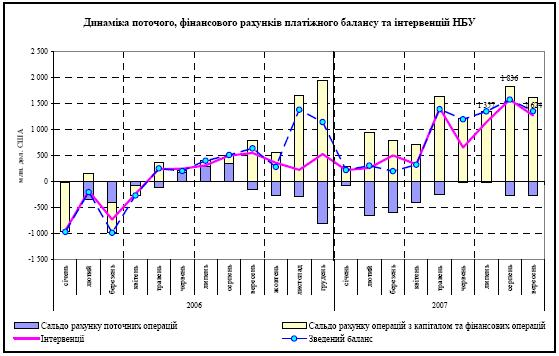
-
Скачок объемов интервенций Нацбанка с мая (травня) 2007 г. по замене "долларовой" денежной массы на гривневую. Фиолетовая линия на графике.
Можно конечно предположить, что кто-то вливает деньги под выборы. В надежде посадить в кресло нужного «царя». Но что-то уж очень большие объемы. Что там Кучма с Пинчуком! Детский сад, ей богу. Дерибан страны оказывается только начался. К чему в конце-концов приведет такая политика можно уже посмотреть на примере маленьких прибалтийских стран. В силу небольшой инертности их экономик результаты проявляются быстрее. С 2003 по 2008 годы прибалтийские страны быстро наращивали свои внешние долги. Полюбуйтесь какими темпами.
К чему в конце-концов приведет такая политика можно уже посмотреть на примере маленьких прибалтийских стран. В силу небольшой инертности их экономик результаты проявляются быстрее. С 2003 по 2008 годы прибалтийские страны быстро наращивали свои внешние долги. Полюбуйтесь какими темпами.Пока в эти страны вливались деньги, все было красиво, все радовались и веселились... - и разваливали собственные производства под офисы и развлекательные центры. Потом вдруг выяснилось, что все самое вкусное уже "приватизировано" иностранным капиталом. Новые гостиницы, торговые и развлекательные центры уже просто не нужны. А проституток, менеджеров и официантов для обслуживания уже построенных, - нужно совсем немного. Что делать с остальным населением, просто непонятно. Подробнее можно прочитать в статье Эрнеста Буйвида здесь.
Более подробно и с большим количеством аналитического материала изложено в статье "Восточноевропейский кризис 2008-2009".
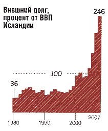Может быть, все дело в том, что мы говорим о бывших советских республиках, заселенных недочеловеками, которые в силу врожденной финансовой тупости просто не умеют правильно жить в долг? Ну хорошо. Давайте глянем на лопнувшую недавно Исландию. Она то и вовсе член НАТО с 1949 года.
В 1999 году парламент Исландии решил, что хватит ловить рыбу, они тоже не пальцем деланы и принял закон № 31/1999 об International Trading Companies (ITC), который устанавливал новые правила налогообложения и регулирования для иностранных компаний. Согласно этому закону иностранные фирмы облагаются крайне малым доходом на прибыль — 5% а также освобождаются от уплаты налога на собственность и таможенных сборов. А плата за регистрацию — всего $1400 ежегодно. При этом Исландия не считается оффшором—зарегистрированные на ее территории иностранные компании имеют статус обычных исландских международных бизнесов. Таким образом, Исландия стала, с одной стороны, налоговым раем, сравниться с которым могут разве что другие оффшоры, но с другой стороны — избегала внимания международных финансовых контролеров и центральных банков. Тут им карта и пошла. Исландия заняла пятое место в мире по национальному доходу и покупательной способности на душу населения. При этом заметьте, что в ней нет никаких природных ресурсов, кроме геотермальных источников, и она зависит только от рыболовства (40% экспорта). Сельское хозяйство - парниковая картошка и овощи. Немного молока. Но зато 5-е место в мире по уровню экономической свободы (2006 г.). Обратите внимание, как поскакал вверх внешний долг страны с 2000-го года. Вот он эмпирически нащупанный путь к вечному процветанию! "Исландия - это наиболее развитая страна в мире. Она поставлена на первое место в мире по Индексу Человеческого Развития ООН - "United Nations’ Human Development Index". И... что?
В 2008 году активы банковского сектора Исландии в 10 раз превысили ВВП страны. Мышиная возня в попытках оттянуть ситуацию и взять еще какой-нибудь кредит хотя бы и в России закончилась ничем. В сентябре 2008 года банки обрушились и страна стала банкротом.
--------------------
-
Но вернемся к рассмотрению "внешней экономической политики" стран.
Например, для России политика китайского Центробанка (Занижение стоимости внутренней денежной единицы, интенсивный экспорт и накопление больших валютных резервов) для завоевания рынков тоже была бы великолепной (по крайней мере неплохой), но при экономически закрытых (или хотя бы контролируемых) границах и - другой структуре экспорта(!). Не сырьевой, а промышленной.
Помимо структуры экспорта о занижении курса своей валюты нужно знать, что:
"...существуют два принципиально разные подхода к искусственному занижению курса национальной валюты.Первый подход опирается на продажу экспортируемых товаров за инвалюту по демпинговым ценам (в частности, такой подход характерен для современного Китая). Указанный подход предполагает продажу всей полученной экспортерами инвалютной выручки на внутреннем валютном рынке по установленному властями заниженному курсу национальной валюты. При таком подходе убытки от недопоставки на рынок реальных импортных товаров распределяются между экспортерами и неэкспортерами равномерно, т.е. ни одна из этих групп относительных преференций от искусственного занижения курса национальной валюты не извлекает.
Второй подход базируется на частичной продаже инвалютной выручки экспортерами на внутреннем валютном рынке (такой подход характерен для России). При этом официальный курс национальной валюты власти устанавливают по результатам торгов на внутренней валютной бирже.Например, в 2000 г. в России, по данным С.Ю. Глазьева, непосредственно на ММВБ экспортерами было продано лишь 42 % инвалютной выручки от экспорта. При этом, по оценке ряда экспертов (включая автора), в этом же году установленный по результатам торгов на ММВБ рыночный курс рубля составлял примерно 20-25 % паритетного.
Частичная продажа экспортерами инвалютной выручки становится инструментом перераспределения реальной собственности между экспортерами и неэкспортерами в пользу первых, поскольку позволяет экспортерам обеспечить себе как практически неизменный рублевый доход (при устойчивом спросе на инвалюту на рынке), так и накопления в виде недопоставленной на внутренний валютный рынок части инвалютной выручки."Но вернемся к разговору о структуре внешней торговли:
"в распространенных Минкоммерции КНР "Направлениях привлечения иностранных инвестиций на 2007 год", приоритет должен отдаваться вложениям в энергосберегающие и экологичные проекты.
Власти предупреждают о необходимости предотвращать "враждебные" поглощения китайских компаний со стороны зарубежных, с тем чтобы "обеспечить контроль за стратегическими отраслями и гарантировать экономическую безопасность государства".
По данным министерства, с 2005 года в стране не было одобрено ни одного проекта по иностранным инвестициям в сферы производства стали, цемента, электролизного алюминия, при этом быстрыми темпами растут иностранные капиталовложения в высокотехнологичные области экономики."
(см. протекционистские принципы развития Британии Фридриха Листа.)
Но при существующей (из-за открытых границ) структуре экспорта для России куда более благоприятной была бы политика стран экспортеров нефти (правда за счет окончательных похорон своей промышленности).
Группа стран экспортеров нефти.
Саудовская Аравия – 0,8
Кувейт – 1,2
ОАЭ – 1,1
Мексика 0,7
Ливия 1,1
Ирак – ?
Иран – 1,2
Венесуэла – 0,8
Видно, что их валюты не недооценены, но даже слегка переоценены. Но тут другая причина. Торгового баланса у них не может быть априори. Их неразвитые, ничтожно малые экономики просто не в состоянии переварить чудовищный профицит внешней торговли. Поэтому на "все заработанное" они просто покупают облигации США. То есть по сути качают нефть бесплатно. За некие виртуальные обязательства, что когда-нибудь "потом" им заплатят еще больше. Чего эти обязательства будут стоить когда кончится нефть, - никто размышлять не хочет.
Упоминание причин этого процесса есть в плохой книге Джона Перкинса. Касается оно Саудовской Аравии, но его слова легко экстраполируются на весь нефтяной Ближний Восток:
...Оглядываясь назад, я все силюсь найти объяснение тому, как могла Саудовская Аравия принять это условие... Условие заключалось в том, что Саудовская Аравия использует нефтедоллары на покупку ценных бумаг правительства Соединенных Штатов. Проценты, полученные от этих ценных бумаг, будут расходоваться министерством финансов США на то, чтобы помочь Саудовской Аравии выйти из Средневековья и войти в современный индустриальный мир. Иными словами, проценты на полученные саудовцами от продажи нефти миллиарды долларов будут использоваться для оплаты американских компаний, воплощающих разработанный мною и моими конкурентами план-мечту по превращению страны в современную индустриальную державу. Наше собственное министерство финансов будет нанимать нас за счет саудовцев для строительства объектов инфраструктуры и даже целых городов на Аравийском полуострове. Хотя саудовцы оставили за собой право участвовать в общей разработке проектов, на самом деле будущий облик и экономику Аравийского полуострова предстояло определять командам лучших иностранных специалистов (в основном неверных, по понятиям мусульман). И это происходило в королевстве, основанном на консервативных ваххабитских принципах и управлявшемся согласно этим принципам в течение нескольких веков! Для них это был рискованный шаг, и все же в сложившихся обстоятельствах, учитывая политическое и военное давление со стороны Вашингтона, думаю, у семьи Сауда не было выбора. С нашей точки зрения, перспективы для получения огромных прибылей открывались неограниченные. Это была прекрасная сделка, обещавшая создать прецедент. Что делало ее еще более привлекательной, так это отсутствие необходимости получать одобрение конгресса - процедура, которую ненавидели корпорации, особенно частные.
Завышенный курс имеют также и страны «золотого миллиарда»
Германия – 1,2
Франция – 1,2
Испания – 1
Англия – ?
Япония – 1,1
Канада – 1,1
Но причина в том, что от экспорта этих стран нужно скорее «защищаться», либо выдерживать паритет, так как они предлагают несырьевую продукцию с наибольшей добавленной стоимостью.
Возвращаемся к нашему Центробанку
Итак, чего бы нам потребовалось, чтобы стать «хозяином мира» (ну на худой конец страны)?
Наверное, быть свободным от государства, но обладать его силовыми функциями?
Читаем:
«Он (Центробанк) не является органом государственной власти, вместе с тем его полномочия по своей правовой природе относятся к функциям государственной власти, поскольку их реализация предполагает применение мер государственного принуждения.»
Занятно, не правда ли? Так органом какой же власти оказывается Центробанк, если не государственной? «Природа не терпит пустоты». Об этом закон скромно умалчивает и предлагает угадывать самому.
Чья власть непонятно, но(!), - нормативные акты этого органа таинственной «негосударственной власти» обязательны для федеральных органов государственной власти.
« Нормотворческие полномочия Банка России предполагают его исключительные права по изданию нормативных актов, обязательных для федеральных органов государственной власти, органов государственной власти субъектов Российской Федерации и органов местного самоуправления, всех юридических и физических лиц, по вопросам, отнесенным к его компетенции Федеральным законом "О Центральном банке Российской Федерации (Банке России)" и иными федеральными законами.»
Но не наоборот:
«Банк России в соответствии с Конституцией Российской Федерации не обладает правом законодательной инициативы, однако его участие в законодательном процессе, помимо издания собственных правовых актов, обеспечивается также и тем, что проекты федеральных законов, а также нормативных правовых актов федеральных органов исполнительной власти, касающиеся выполнения Банком России своих функций, должны направляться за заключением в Банк России.»
Так кто командует страной? По крайней мере, не правительство. Его роль, - роль полицейского для обеспечения защиты священной частной собственности. А деньги делить… - это дело тонкое, - тут нужны «специальные знания» вам недоступные.
Наверное, при столь больших полномочиях этот орган «негосударственной власти» обладает также и невероятной ответственностью за свои действия? Ведь правильной (или неправильной) денежной политикой можно влиять на экономику государства куда сильнее, чем законами.
Знаменитое высказывание Ротшильда, - « Дайте мне контроль над денежной эмиссией и мне будет все равно, кто принимает законы» не так уж абсурдно, как может показаться на первый взгляд.
Как бы не так!
«Государство не отвечает по обязательствам Банка России, так же, как и Банк России – по обязательствам государства, если они не приняли на себя такие обязательства или если иное не предусмотрено федеральными законами. Банк России не отвечает по обязательствам кредитных организаций, а кредитные организации не отвечают по обязательствам Банка России, за исключением случаев, когда Банк России или кредитные организации принимают на себя такие обязательства.»
Простите, а кому доверили пресловутый Стабфонд? Никому не подчиняющейся организации, которая ни за что не отвечает?
Но и это еще не все.
"Статья 7.
Не подлежат государственной регистрации нормативные акты Банка России, устанавливающие:
курсы иностранных валют по отношению к рублю;
изменение процентных ставок;
размер резервных требований;
размеры обязательных нормативов для кредитных организаций и банковских групп;
прямые количественные ограничения;
правила бухгалтерского учета и отчетности для Банка России;
порядок обеспечения функционирования системы Банка России.
В соответствии с порядком, установленным для федеральных органов
исполнительной власти, также могут не подлежать регистрации иные нормативные акты
Банка России.
Статья 8. Банк России не вправе участвовать в капиталах кредитных организаций, если иное не установлено федеральными законами.
Но при этом...
Действие части первой настоящей статьи не распространяется на участие Банка России в капиталах Сберегательного банка Российской Федерации (далее - Сбербанк), Банка внешней торговли (далее - Внешторгбанк), а также в капиталах следующих кредитных организаций, созданных на территориях иностранных государств: Донау-банка АГ, Вена; Ист-Вест Юнайтед банка, Люксембург; Коммерческого банка для Северной Европы - Евробанка, Париж; Московского Народного банка Лтд, Лондон; Ост-Вест Хандельсбанка АГ, Франкфурт-на-Майне.
Статья 9. Банк России может участвовать в капиталах и деятельности международных организаций, которые занимаются развитием сотрудничества в денежно-кредитной, валютной, банковской сферах, в том числе между центральными банками иностранных государств.
Статья 19. говорит о том, что члены совета директоров не могут быть государственными служащими, а также членами Правительства Российской Федерации. (к слову, и все служащие Банка России не относятся к категории государственных служащих)
Красота замысла и исполнение - изумительны.
Все элементы надгосударственного управления присутствуют.
Не Центробанк зависит от политики государства. А государство зависит от его политики.
Не государство вводит деньги в оборот по мере необходимости и роста экономики. И на самом деле даже не Центробанк. Денежную эмиссию не вправе осуществлять никто из внутренних субъектов экономики. Но… зато ее вправе осуществлять Федеральная Резервная Система другой страны, никак не сообразуясь с потребностями страны в денежной массе. К тому же будучи гарантирована от падения своей валюты, при практически любом торговом дисбалансе.
Как бы абсурдно ни звучала подобная мысль, но вся современная экономика построена на частном контроле над монопольным эмиссионным центром Федеральной Резервной Системой. Владельцами которого являются инвестиционные банки США.
Такой их привилегированный статус сложился на протяжение десятилетий в конце XIX - начале ХХ века и был институциолизирован в два этапа: в 1913 году, с созданием Федеральной резервной системы США, и в 1944 году, по итогам Бреттон-Вудских соглашений. А после распада мирового социалистического Содружества они распространили свое влияние и на территорию бывшего социалистического Содружества.
Именно крупнейшие инвестиционные банки определяют, кто имеет право на получение дешевого кредита – фактически, единственного способа получить прибыль в условиях переизбытка производящих мощностей. Для того чтобы «объективизировать» процесс кредитования используются рейтинговые агентства, аффилированные с инвестбанками – и качество их работы видно по последнему кризису, который они просто не заметили. Для того чтобы иметь единую картину мира в эту же группу аффилированы и аудиторские компании. В картину можно еще включить консалтинговые компании, которые дают клиентам советы, как понравиться мировой финансовой элите, чтобы заслужить у нее доступ к дешевому кредиту, а также Всемирную торговую организацию, контролирующую систему мировой торговли.
…вся система МВФ/МБ (созданная в рамках Бреттон-Вудских соглашений) работает на то, чтобы никто, кроме ФРС не мог эмитировать деньги: тут и система currency board, и ее неявные аналоги и ограничения для стран-участников МВФ и так далее. Достаточно посмотреть, как ограничивает наш Центробанк предоставление рублевых кредитов — что для самого российского ЦБ и Минфина уже стало серьезной проблемой.
Для справки: Режим currency board предполагает, что все обязательства центрального банка (денежная база) полностью покрыты резервами в определенной иностранной валюте - чаще всего в долларах. Фактически центральный банк отказывается от своих так называемых дискреционных прав, то есть прав по регулированию размера денег в экономике. Его денежная политика становится полностью пассивной, она перестает быть политикой в подлинном смысле слова. Центральный банк просто обменивает национальную валюту на иностранную валюту-"якорь" и наоборот. (курс = широкая денежная база/золотовалютные резервы). В такой системе практически нет места самостоятельному Центральному Банку - вся финансовая политика определяется правительством и международными организациями. Их представители входят в так называемый валютный совет, который в рамках политики currency board определяет, какое соотношение между рублевой массой и валютными резервами стоит предпочесть (такое соотношение устанавливается, скажем, раз в три года), а также решает, сколько можно напечатать рублей исходя из текущих валютных резервов, прогноза дефицита бюджета и торгового баланса.
"Валютное управление" позволяет обуздать инфляцию, но государство становится весьма чувствительным к любым внешним воздействиям (например, к падению цен на нефть или нежеланию стран, чьи валюты обеспечивают рубль, кредитовать Россию). Причем эта система саморегулируется: падают резервы - повышаются процентные ставки - уменьшается денежная масса. Растут резервы - падают ставки - растет денежная масса.
В режиме... "currency board Центральный банк не может уже выполнять функции «кредитора последнего шанса» (lender of last resort) в случае кризиса ликвидности в отдельных коммерческих банках или во всем банковском секторе. Также... в режиме currency board центральный банк должен либо вполне приостановить, либо серьезно ограничить функцию финансового агента правительства. Речь идет о ведении казначейских счетов (изменения на которых влияют на колебания денежной базы), размещении государственных ценных бумаг на финансовом рынке и других операциях, реализованных от имени государства." United Nations Development Programme in Ukraine (UNDP)
Например, Нацбанк Украины, даже не заикается о том, что он находится в режиме Currency Board и везде кричит о своей независимости. Но как же это все легко проверить.
 Режим валютного управления страной подразумевает, что ее денежная политика подчинена соотношению курс = денежная база/международные резервы
Режим валютного управления страной подразумевает, что ее денежная политика подчинена соотношению курс = денежная база/международные резервы
Как видно на графике, нижняя (синяя) линия показывающая отношение "теоретически расчетного" курса по политике "currency board" (курс = денежная база/резервы) и курса НБУ почти не "вздрагивает". НБУ лишь поддерживает курс гривны несколько заниженным от паритета (единицы), чтобы иметь некоторую возможность регулирования при оттоке валюты из страны.
- Выше единицы он быть не может, так поддержание подобной политики быстро истощит "резервы" Нацбанка (если они есть) и приведет дефолту.
- В случае равенства 1, - исчезает возможность регулирования. Процесс может идти только в одном направлении - при втекании в страну валюты. (или нулевом балансе) Также отсутствует экономический стимул в продаже валюты Нацбанку. Нет маржи.
- Зато занижать путем выкупа валюты и "формированием резервов" можно бесконечно долго. В "гривне" Нацбанк не ограничен. К тому же остается некоторый зазор для управления, при неожиданном оттоке валюты из страны. И самое главное, кто бы "продавал" валюту Нацбанку, если бы он не занижал паритетную стоимость гривны.
А что в России?
Казалось бы, большое суверенное государство должно проводить собственную монетарную политику, не оглядываясь на темпы денежной эмиссии других суверенных государств и торговый баланс страны. И официально этот режим валютного управления в стране не задекларирован. Но давайте попробуем проверить. Золотовалютные резервы по состоянию на 1.09 равны 416 040 млн. долларов США - Бюллетень банковской статистики Центрального Банка Российской Федерации.
На сайте Центробанка широкая денежная база (сумма наличных денег в обращении, обязательных резервов и остатков банков на корсчетах в ЦБ РФ. Не путайте с денежными агрегатами. Денежная база - не агрегат, а только основа для их создания.) на ту же дату, - 4 758,0 млрд. рублей. Теоретически ей можно дать определение как "деньгам эмитированным Центральным банком".
(Не путайте с денежной массой М2, которая представляет собой уже мультиплицированную денежную базу во втором уровне банковской системы, - коммерческих банках. (Подробнее здесь стр. 153. Там же подробное определение "денежной базы" в широком определении.) Часто на нее ссылаются при определении валютных курсов. Получается ближе к реальному курсу, но неверно с точки зрения понятия "currency board".)
Считаем курс 4 758,0 млрд. рублей/416, 040 млрд. долларов США=11,4 рубля за доллар.
В то же время официальный курс около 26 рублей за доллар. Почему?
Форумчанин Screen предложил хороший график и таблицу, которые наглядно показывают как дрейфует курс Центробанка России от "привязки" валютных резервов к денежной базе, до "денежной массы".

Проверяем по данным Всемирного Банка. С его интересным параметром «PPP conversion factor to official exchange rate ratio» - то есть недооцененность официального курса местной валюты – 0,5 по паритету покупательной способности. Хотя данные старые. За 2005 год. Но суть происходящего судя по всему изменилась не сильно. В нашем примере получается 0,44 (курс на выбранную дату был 25,6262). По прежнему приходящий «извне» доллар в состоянии купить и вывезти в два с лишним раза больше, чем его реальная покупательная способность. И соответственно обратная торговая ситуация, - рубль обменянный в Центробанке может купить вне страны и ввезти в два с лишним раза меньше, чем его реальная покупательная способность. Значит в стране недостаток товаров и избыток денежной массы, а это означает что?
Правильно. Искусственную инфляцию как политику Центробанка. Который отстаивает интересы кого угодно, но не своей страны.
Из служебной записки первого заместителя Председателя Центрального банка Российской Федерации С. Алексашенко Председателю Банка России (22 мая 1997)
"Начиная с октября 1996 года Россия находится в принципиально новой ситуации в отношении проведения денежной политики: практически мы перешли к механизму currency board, т. е. каждый новый рубль прироста денежной базы обеспечен соответствующим ростом валютных резервов Банка России. Результат всех операций Банка России в отношении денежной базы за 7,5 месяцев составил 30 трлн рублей. За это же время результат операций на валютном рынке с учетом нерезидентов составил 12 трлн рублей, результат операций с Минфином России (приобретение валюты за минусом процентных платежей) – 17 трлн рублей...."
Таким образом международная система денежной эмиссии выглядит довольно просто. Центробанки стран мира постоянно должны выпускать дополнительную эмиссию, для обеспечения местными деньгами своих растущих экономик. Но согласно договоренностям с МВФ, - они на это "не имеют права", пока не сформировали соответствующие "золотовалютные резервы". А для того чтобы они смогли их сформировать, - в США должен постоянно существовать дефицит платежного баланса (и соответственно в остальных странах, - профицит внешней торговли). Соответственно весь прирост экономик мира, - это законная добыча США. (Плюс естественно процент по кредиту. Возвращающий назад эмитированный доллар.)
Это правило сформулировал еще Триффен в 60-х годах. Только интересовало оно его несколько с другой стороны. Он переживал, что постоянный дефицит торгового баланса США должен подрывать доверие к доллару и снижать его ценность, как резервной валюты. В общем он не ошибся.
«суть происходящего предельно ясно выразил президент одного из вышеперечисленных корпоративных транснациональных монстров, объединения Эй-Би-Би (ABB) Перси Барневик: он заявил, что глобализация - «это свобода для каждого компаньона, входящего в мое объединение, инвестировать там и тогда, где и когда он того пожелает, покупать и продавать то, что он пожелает, неся при этом минимум возможных тягот, вытекающих из социального законодательства». Формально эта идея была изложена в 1989 году в так называемом «Вашингтонском консенсусе». Это «комплекс джентльменских соглашений, выработанных... совместно мировыми финансовыми организациями и ФРС США с тем, чтобы постепенно отменить меры, принятые государствами по регулированию деятельности финансовых рынков, и со временем добиться полной либерализации действий для этих рынков». «Вашингтонским консенсусом» эти соглашения назвал один из авторов, американский экономист Джон Вильямсон - и хотя потом он многократно пытался объяснить, что его неправильно поняли, было уже поздно.
Суть «Вашингтонского консенсуса» состоит в шести принципах, которым должны следовать государства, желающие реформировать свои экономики. Принципы следующие::
налоговая дисциплина
«конкурентоспособный» валютный курс
либерализации коммерции
либерализация иностранных инвестиций
приватизация
дерегламентирование
Само по себе мнение группы экономистов мало кого волнует, но когда среди разработчиков оказывается ФРС США, тут уже не до шуток, ибо когда мы говорим «МВФ» или «ВБ», то подразумеваем именно «Фед». И действительно, эти идеи были тут же положены в основу условий предоставления кредитов международными финансовыми организациями, трансформировавшись в следующие положения, без выполнения которых МВФ отказывается давать кредит:
- привлечение инвесторов любой ценой, даже если это и происходит в ущерб социальным правам и окружающей среде
- сокращение до крайнего минимума услуг и программ социального развития, превращение систем здравоохранения и образования в набор услуг, предоставляемых на платной основе, отмена дотаций на продукты питания и другие товары первой необходимости - иначе говоря, приватизация социального сектора
- поддержание стабильности национальной денежной единицы любой ценой, принятие жестких бюджетных сокращений
- ограничительная денежная политика (высокие процентные ставки и т.д.)
- всемерное наращивание валютных резервов, даже ценой замораживания потребления
- предоставление полной свободы передвижения капиталов, в том числе беспрепятственный их ввоз и вывоз через границу
- приватизация в областях, не подверженных конкуренции, то есть в так называемых «естественных монополиях»
- налоговые реформы, направленные на «расширение налогооблагаемой базы» (то есть отмена всех налоговых льгот) и «приведение налогового законодательства в соответствие с нормами цивилизованных стран» (например, чтобы делался упор на прямые налоги - подоходный и на прибыль - в ущерб косвенным)
Замечу, что именно по этим принципам проводились экономические реформы в России начиная с конца 1991 года. И именно эти принципы были навязаны большинству стран в течение 1990-х, причем вовсе не только государствам с развивающейся экономикой - значительная часть вышеперечисленных положений вошла, например, в основные принципы Маастрихтского договора 1992 года о создании Европейского Союза. Я уже отмечал в главе о последствиях глобализации для экономик всех стран, куда она проникла, что применение этих мер привело к крайне негативным результатам - что стало очевидно для всех думающих экономистов уже во второй половине 1990-х годов.»
Подробный анализ с источниками читать здесь.
---------------------
Для того чтобы понимать почему эти принципы удается навязывать многим странам, посмотрите на карту стран с монокультурной структурой экспорта.
К чему приводит погоня за «экономической целесообразностью» хорошо видно, например, по состоянию сельского хозяйства России. Некогда мощнейшая и самодостаточная страна превратилась в насос качающий нефть за еду.
Проведенная в 2006 году оценка состояния сельского хозяйства показала, что по сравнению с советским периодом поголовье скота уменьшилось: овец и коз — с 67 до 9,7 миллионов (в 7 раз); свиней — с 33,3 до 8,5 (в 4 раза) ; коров — с 20,6 до 12 (почти в 2 раза).
Ау, люди! Вы с ума сошли? Вы находитесь на первом (октябрь 2005 г.) - втором месте в мире по скорости выкачивания нефти, имея при этом «засекреченные» запасы оцениваемые разными источниками от 4% до 12% мировых и за это вас кормят. Но счастья осталось всего на 10-20 лет. Кто вас будет кормить потом? «Фонд будущих поколений»? «Стабфонд»?
Насколько неверна погоня за "экономической целесообразностью" внутри государства сформулировано уже бог знает когда. Откройте "Экономические проблемы социализма в СССР" (1952 г.) Открытым текстом написано:"Совершенно неправильно также утверждение, что при нашем нынешнем экономическом строе, на первой фазе развития коммунистического общества, закон стоимости регулирует будто бы "пропорции" распределения труда между различными отраслями производства.
Если бы это было верно, то непонятно, почему у нас не развивают во - всю легкую промышленность, как наиболее рентабельную, преимущественно перед тяжелой промышленностью, являющейся часто менее рентабельной, а иногда и вовсе нерентабельной?
Если бы это было верно, то непонятно, почему не закрывают у нас ряд пока еще нерентабельных предприятий тяжелой промышленности, где труд рабочих не дает "должного эффекта", и не открывают новых предприятий безусловно рентабельной легкой промышленности, где труд рабочих мог бы дать "больший эффект"?
Если бы это было верно, то непонятно, почему не перебрасывают у нас рабочих из малорентабельных предприятий, хотя и очень нужных для народного хозяйства, в предприятия более рентабельные, согласно закона стоимости, якобы регулирующего "пропорции" распределения труда между отраслями производства?"
Что здесь непонятного? Ошибочного? Или может быть политически заангажированного?
Неужели понимание экономики как единого цельного организма, который не будет жить, если в нем разовьются только отрасли приносящие денежную прибыль зависит от политического строя?
(Да, конечно. В определенной степени зависит. Так как при "открытой экономике" развитого капитализма все экономически "нерентабельные отрасли" можно вынести в "колонии", в "развивающиеся страны" и жить за счет них, спокойно обменивая тяжелый, низкоквалифицированный труд на "высокотехнологичные" игрушки.
Но что делать если колоний нет? Или если мы говорим о единой стране или союзе стран без паразитарных устремлений?)
Может быть уже пора начать думать и работать? Ибо скоро будет поздно. (Если уже не поздно)
----------------------
(!) Не нужно пытаться искать какой-либо конспирологический "центр внешнего управления" вашим государством. Его просто нет. Государство не выполняет чьих-бы то ни было внешних прямых приказов, полученных в какой-то явной форме. Для этого существует более тонкий механизм под названием "баланс ветвей власти".
Возможно Вы замечали, как заботится любая "демократическая пресса" об этом балансе и какой невообразимый шум поднимается в СМИ в случае его нарушения.
Для чего нужна оппозиция? Ведь она, как правило, мешает проведению, какой бы то ни было вразумительной политики в государстве.
Как только в системе государства появляется какая бы то ни было осмысленная сила, пытающаяся провести некую целенаправленную политику, она тут же тонет в волне усиливающихся протестов оппозиции.
Все, как всегда, несложно. В случае нахождения ветвей власти в состоянии близком к равновесию, всегда можно провести нужное (для внешней управляющей силы) решение путем небольшого экономического вливания (или наоборот подавления ненужного решения путем, - например, частичного отказа в перекредитовании активов), поддерживающей его ветви власти. Как видите механизм простой, довольно прозрачный и полностью "демократический".
Абсолютно недемократичны лишь финансовые институты. Но они здесь вроде бы и ни при чем. Не они же принимают и проводят государственные решения. Они решают только, кому выдать, а кому нет очередной кредит.
Любой явный дисбаланс ветвей власти ведет к росту их финансовых потерь на проведение нужного решения, так как приходится преодолевать большее сопротивление.
Идеальное состояние государственного аппарата для силы внешнего управления - это вовсе не приход к власти подчиненных марионеток.
Такие марионетки, почувствовав свою силу и вдруг "поймав" очередную "национальную идею", могут легко выйти из подчинения и в самом деле выстроить сильную государственную власть. И начать развивать в стране, к примеру "тракторостроение". (В то время как по планам глобализации, ничего кроме экономически эффективного "выращивания рапса" и обмена его на продукцию машиностроения из "развитых" стран для данной страны не предусматривалось.)
Тогда затраты на устранение "марионетки" могут стать либо непомерно велики, либо чересчур заметны для населения данной страны. Идеальное состояние, - это поддержание равновесия активно противоборствующих сил во властных структурах страны. Тогда путем очень небольших и недорогих управляющих воздействий (гранты, «премии мира», консультации правительства зарубежными экспертами, деятельность НПО) можно вести внутреннюю и внешнюю политику государства в нужном русле. Все остальное сделает обычная «экономическая целесообразность».
(Ведь всегда выгоднее и проще купить Windows, - чем разработать свой. Выгоднее закупить продукты за нефть, чем пойти на колоссальнейшие затраты по подъему своего сельского хозяйства. Выгоднее просто купить готовый трактор на западе, чем заниматься сложнейшим и дорогостоящим развитием своего машиностроения. Выгоднее вырезать завод на металл и отправить за границу. Это деньги, здесь и сейчас. Чем многолетние затраты на запуск этого завода. Это затраты с неизвестным результатом с точки зрения прибыли. В результате имеем нищую страну, живущую за счет постепенной продажи самой себя на экспорт. Она жива только до тех пор, пока есть что продавать.)
Основная задача внешнего управления страной, - не допускать усиления какой-либо из сторон. Этот механизм легко реализуем в странах с "глубокими демократическими традициями" и плохо работает в тоталитарных государствах. Где приходится шумными, трудоемкими и дорогостоящими методами сажать "своего царя" , а потом смещать его войной, когда он выходит из под контроля. (яркий пример: Ирак).
Вышесказанное отнюдь не означает, что «тоталитаризм» обязательно лучше. Ведь заранее неизвестно, какая именно «национальная идея» постучится в голову к руководству. Если оно начнет с идей «Германия для немцев!» или «Россия для русских!» и в качестве основной забавы устроит массовую высылку «таджиков», тихо и мирно кладущих кирпичи на стройках. Параллельно публикуя во всех СМИ о зверствах этих «Таджиков» по отношению к титульному населению... Ведь всегда и во всех нациях можно найти отморозков для примера. (Не путать с криминальными группами и сообществами, которые действительно часто кучкуются по национальному признаку.) Через неделю несчастных «таджиков» уже будут избивать стальными прутьями на улицах, а жизнь в стране лучше не станет. И горя не оберешься. Поэтому тоталитаризм не обязательно лучше. Он просто имеет возможность проводить целенаправленную, нехаотичную политику в своей стране. И это уже зависит только от мудрости, знаний, интеллекта (а вовсе не харизмы) руководства.
А то, что сейчас принято называть «демократией» не имеет в своих руках даже инструмента для проведения какой угодно политики.
Другими словами, сложившуюся систему хаоса «демократии», не проходя через стадию «тоталитаризма», под громкий визг всех "ущемляемых" бездельников сломать невозможно.
Только не надо сразу поднимать крик и обвинять США, как государство, во всех смертных грехах. От него точно так же мало что зависит. И как вы не можете изменить закон о Центробанке, они точно так же не могут изменить закон о ФРС. Ибо даже не задаются вопросом о такой необходимости. Что поделаешь! Издержки демократии , разрешающей не думать.
Да и некому там "думать". Людей занятых в производстве всего около 10%. В сельском хозяйстве, - 1%. Все остальные это «сущеглупые манагеры», продавцы грелок для пупков, коммивояжеры, «финансисты» и просто бездельники на велфере, - которых более чем устраивает сложившийся порядок.
Отдельного разговора заслуживает образование в этой стране
(впрочем и образование вообще, глядя как у нас обучение в высшей школе постепенно превращается в продажу диплома в рассрочку) Когда мне на глаза попались тесты для школьников Флориды, у меня волосы встали дыбом.
Самый сложный тест по математике из найденных мною предлагал задачи уровня:
Таблица показывает среднее число очков, выигранных в игру четырьмя профессиональными игроками баскетбола в четыре сезона.
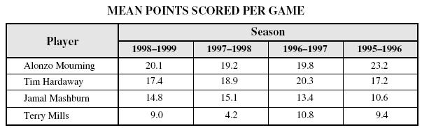
Какой игрок имел самый большой диапазон средних очков в течение сезонов, показанных в таблице?
Варианты ответов: А. Alonzo Mourning B. Tim Hardaway C. Jamal Mashburn D. Terry Mills
Или:
Два паруса на лодке в диаграмме подобны. Какова длина AB ?
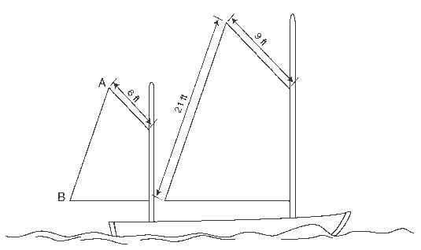
Обратите внимание, как подобраны числа в этой задаче. Школьник, решая ее, ни в коем случае не должен перенапрячь мозг.
Самый сложный тест по «науке» (SCIENCE), в котором в кашу перемешаны физика пополам с химией спрашивал:
Гравитационная потенциальная энергия - энергия, которой объект обладает из-за его положения относительно поверхности Земли. Какие из следующего вовлекают преобразование гравитационной потенциальной энергии в электрическую энергию?
A. солнечные электростанции
B. атомные электростанции
C. ветровые электрогенераторы
D. генераторы гидроэлектростанции
Я не смеюсь. И не Задорнова насмотрелся. Зайдите на http://fcat.fldoe.org/fcatitem.asp и загляните в любой тест. Я выбрал самые сложные.
Станет ли школьник, закончивший школу по такой программе, «думать» или квалифицированно работать?
Не нужно хихикать и думать, что у нас все хорошо. Опросите в любом офисе любое стадо "манагеров", - все поголовно с высшим образованием. Некоторые и не с одним. А многие ли ответят чему равен lg10=? Или чему равен sin0=?. У Вас сразу возникнет ощущение, что никто из этих "с высшим" никогда не ходил в школу. Хотя они с пеной у рта станут Вам приводить цифры своего невообразимо высокого "IQ" и месячных объемов продаж (которые почему-то автоматически ассоциируются с интеллектом). И снисходительно гордо рассказывать, как быстро они складывают "паззлы" тестов, - но вопрос чему равно 1+2+3+...99+100= ? - мгновенно переведет разговор на визг.
Когда я читаю в учебнике по физике(!), что громкость звука реактивного двигателя 120 дБ, у меня волосы встают дыбом. Громкость «ГДЕ»? В форсажной камере? В четвертом бутике «duty free» аэропорта? Или на даче моей бабушки? И самый главный вопрос, - «по отношению к чему»? Ибо автор даже не понимает и нигде не упоминает, что дБ, - это не есть некая абсолютная величина громкости звука. (Вроде Джоуля или Вольта) Сказав 120 дБ, он всего лишь сказал «в миллион раз», - но «по отношению к чему»? О том, что понятие "децибел" применяется только при наличии какого-то, изначально оговоренного(!) параметра (например, порога слышимости человека или какого-то источника звука на оговоренном расстоянии), с которым производится сравнение, автор даже не подозревает.
Я уже не говорю о таких тонкостях, как «напряженности, токи» и «мощности», которые зависят в квадрате друг от друга. (то есть, чтобы получить отношение мощностей в данном случае, нужно этот миллион возвести в квадрат)
За такие учебники нужно просто сажать в тюрьму. Причем всю цепочку, - начиная от «автора», до того, кто подписал в печать. Ибо неграмотность и глупость, помноженная на масштабы страны, может давать чудовищные результаты. Через 10-20 лет 95% населения страны будут свято верить, что децибел – это единица громкости. И только несколько процентов любопытных докопаются до сути. Но в ситуации принятия какого-нибудь «демократического решения» вопроса о том, - « что считать децибелом» на референдуме, - эти несколько процентов не будут играть никакой роли.
Этот кажущийся нелепым пример иллюстрирует ситуацию, сложившуюся в области организации структуры общества. Полнейшую недееспособность «демократии», в особенности в условиях "экономической целесообразности" и «свободы слова». То есть безответственности за подачу информации в частных средствах массовой информации. Для того, чтобы построить грамотное общество в целом, - ничего толкового, кроме «цензуры», отсеивающей глупость из СМИ, пока еще не придумано. И пусть стоит хоть какой визг по поводу зажима "свободы слова", - глупость должна быть уничтожена. Если окруженная со всех сторон "экономической блокадой" нищая Куба имеет 100% грамотность населения (чего нет ни в одной стране западного полушария) - то хоть сколько-нибудь более богатые страны просто обязаны следить за качеством образования своих граждан. (Но они этого не делают даже на уровне учебников).
Ухудшение качества образования в "развитых странах" - это в первую очередь отклик на вынос производств в страны с дешевой рабочей силой. (Для чего обучать рабочую силу? Для того, чтобы она тяпкой в огороде картошку окучивала?) Что приводит не только к свертке реальной экономики, но и к деградации общества.
"В последние годы внимание социологов привлекает и тот факт, что весьма широкий круг лиц, согласно статистическим правилам относящихся к занятым в промышленности, в действительности выполняет функции, отнюдь не тождественные непосредственному участию в производственном процессе. Так, еще в начале 80-х годов доля работников, непосредственно занятых в производственных операциях, не превышала в США 12 процентов; сегодня она сократилась до 10;
в Японии подобные цифры составляют соответственно 15 и 12 процентов.
В последнее время появились оценки, определяющие этот показатель для США на уровне 5-6 процентов; они могут показаться нереалистичными, однако статистические наблюдения свидетельствуют о том, что еще в 1993 году в Бостоне в сфере услуг было занято 463 тыс. человек, тогда как непосредственно в производстве - всего 29 тыс., и подобное соотношение в последние годы вполне типично для больших американских городов."
Кому в обществе с такой структурой думать? "Манагерам"? "Продавцам"? "Коммивояжерам"? Да даже если бы и задумались. Сразу бы поняли, что резиновый «демократизатор» вещь тупая и увесистая. И вообще, - «думать», - опасно для здоровья.
К тому же и в самих США не так все радужно и красиво. Все по той же вышеописанной причине. В основании пирамиды денег в общем-то нет. И весь спрос поддерживается за счет роста долгов.
Но вернемся к Центробанкам. Посмотрим на "самый главный" Центробанк в мире, который в сложившейся мировой финансовой системе есть "кредитор последней инстанции" по факту. А не по закону. Является ли сама Федеральная Резервная Система является государственным органом?
«В 1982 году в апелляционном суде рассматривалось прецедентное дело — частное лицо потребовало у одного из Федеральных Резервных Банков возмещения убытков, нанесенных ему государством. Суд вынес следующий вердикт: «Федеральные резервные банки — не государственные структуры, а независимые корпорации, принадлежащие частным лицам и контролируемые на местном уровне. Федеральные резервные банки были созданы для выполнения ряда государственных задач».»
Как ни странно, - но нет. Подробный анализ читайте здесь.
Давайте теперь попробуем понять, почему одинаковая политика Центробанка, например, в России (Украине и т.п.) и Китае (Занижение стоимости внутренней денежной единицы, интенсивный экспорт и накопление больших валютных резервов) приводит к совершенно разным результатам. В первом случае к ослаблению государства, узаконенному разграблению страны, вырезанию заводов на металл для экспорта, деградации и разрушению внутреннего производства. Во втором, - к усилению страны и развитию промышленности.
Здесь можно выделить два основополагающих принципа. Это
1) контроль со стороны государства за движением капиталов. (Грамотная таможенная политика. Отсутствие "свободной торговли".)
2) Структура экспорта-импорта, поощряющая экспорт изделий промышленности и импорт сырья и технологических линий и одновременно подавляющая таможенными пошлинами импорт промышленной продукции (особенно дорогой) и не допускающая (теми же методами) экспорт сырья.
Изумительное по простоте описание есть в книге Дмитрия Неведимова «Религия денег».
(Даже если у Вас не хватит терпения прочесть весь этот глобальный труд программиста, человека с безупречной логикой, не поленившегося разобраться в алгоритмах финансовой системы и изложить результаты в виде цельного аналитического обзора, - просмотрите хотя бы приложения к нему.)
«Свободная торговля – это только прикрытие для всё той же старой меркантилистской политики:
«Конечная цель... всегда одна и та же – обогатить страну за счёт выгодного баланса в торговле. Из этой цели вытекает отрицательное отношение к вывозу средств производства [инструментов и сырья] и инструментов торговли, чтобы дать нашим собственным рабочим преимущество, и дать им возможность установить более низкие цены, чем другие страны, на всех международных рынках; и, ограничивая таким образом вывоз недорогих товаров, поощряется многочисленный вывоз более дорогих товаров. Поощряется также ввоз средств производства, чтобы наши собственные люди смогли обрабатывать их дешевле, предотвращая дорогостоящий ввоз уже обработанных товаров».
А эти слова были и вовсе написаны полтораста лет назад. Трудно что-либо добавить или убрать лишнее. Еще труднее с ними спорить.
Читайте внимательно:
"В стране чисто земледельческой, если даже она поддерживает свободные отношения с мануфактурными и торговыми нациями, значительная часть производительных сил и естественных вспомогательных средств лежит праздно и бесполезно. Ее интеллектуальное и политическое развитие и ее оборонительные средства ограничены. Она не в состоянии развить ни значительного мореходства, ни широкой торговли. Все ее благосостояние, насколько оно является результатом международных сношений, может быть чужеземными мерами или войной прервано, расстроено, уничтожено.
Мануфактурная промышленность, напротив, благоприятствует наукам, искусствам и политическому совершенствованию, увеличивает народное благосостояние, народонаселение, государственные доходы и государственное могущество, доставляет нации средства к расширению торговых сношений со всеми частями света и к основанию колоний, развивает мореходство и военный флот.
Земледелие и мануфактурная промышленность одной и той же страны под одной и той же политической властью живут в вечном мире; ни война, ни торговые меры других стран не в состоянии смутить их развития; а следовательно, они и для нации обеспечивают беспрерывное поступательное движение в развитии благосостояния, цивилизации и могущества.
Желать поднятия земледелия посредством таможенных пошлин — задача бессмысленная, так как внутреннее земледелие может быть экономически поднято лишь туземной же фабрично-заводской промышленностью(!) и так как запрещение ввоза чужеземных сырых материалов и продуктов земледелия задержит развитие мануфактурной промышленности страны.
Торговые союзы и торговые трактаты являются действительнейшим средством к облегчению сношений между различными нациями.
Но торговые трактаты законны и действительны только при условии обоюдных выгод. Вредными незаконными торговыми договорами должны быть признаны такие, посредством которых мануфактурная промышленность, стоящая уже на пути к развитию, приносится в жертву тому, чтобы достичь концессий на вывоз продуктов земледельческих...
Если таможенные пошлины на известное время возвышают цены на туземные мануфактурные товары, то они зато обеспечивают на будущее время уменьшение цены в силу внутренней конкуренции; ибо промышленность, достигшая полного развития, может понижать цены на свои изделия на столько, во сколько обойдется провоз вывозимых сырых продуктов и съестных припасов и ввоз фабричных изделий, считая расходы на фрахт и торговую прибыль.
Потеря, причиненная нации таможенными пошлинами, заключается, во всяком случае, в ценности, зато нация выигрывает силы, при посредстве которых она становится навсегда способной производить неисчислимое количество ценностей. Эта потеря в ценности должна быть рассматриваема, однако, лишь как стоимость промышленного воспитания нации.
Таможенные пошлины на мануфактурные изделия не падают бременем на земледелие охраняемой страны. Вследствие развития туземной мануфактурной промышленности особенно увеличивается богатство страны, население, а потому и спрос на сельскохозяйственные продукты, что возвышает ренту и продажную цену земельной собственности, между тем как с течением времени ценность фабрично-заводских изделий, необходимых для земледельцев, уменьшается. Эти выгоды в десять раз превосходят прежние потери, которые причиняло земледельцам предшествовавшее увеличение стоимости мануфактурных товаров.
Таким образом, вследствие протекционной системы выигрывает как внешняя, так и внутренняя торговля, ибо только у наций, которые снабжают мануфактурными изделиями свой собственный рынок, потребляют свои собственные сельскохозяйственные продукты и обменивают лишь избыток своих собственных мануфактурных изделий на чужеземные пищевые продукты и сырье, только у таких наций внешняя и внутренняя торговля представляет выгоды. У стран же чисто земледельческих и та и другая незначительны, и внешняя торговля таких стран обыкновенно находится в руках находящихся с ними в сношении стран мануфактурных и торговых."
(Выделения текста www.economics.kiev.ua) И попробуйте теперь самостоятельно ответить на вопрос, что нужно делать, для того, чтобы развивать свою страну?
О том, как распределяется накопление капитала при прямой торговле между странами с разным уровнем оплаты труда
(Без таможенных барьеров)
Экспоненциальная разница в накоплении капитала при «свободной торговле»
Неолиберальные экономические формулы доказывают, что свободный и саморегулирующийся рынок автоматически распределяет произведённые блага наиболее справедливым образом. Неолибералы убеждают, что свободный рынок постепенно стирает разницу между богатыми и бедными, если бедный прилагает для этого достаточно усилий.
Давайте проведём простые расчёты, исходя из того, что между бедными и богатыми странами изначально существует разница в средней оплате труда. При прямой торговле между этими странами из-за этой разницы в оплате труда возникает разница в накоплении материальных ценностей. Мы увидим, что разница в накоплении капитала выражается даже не линейной, а экспоненциальной (т.е. квадратичной) зависимостью.
Вначале рассмотрим, сколько часов надо трудиться рабочему в бедной стране, чтобы купить одну единицу товара, произведённого в богатой стране. А затем посмотрим, сколько единиц товара, произведённых бедным, сможет купить рабочий из богатой страны, если он будет работать такое же количество часов, как и бедный.
Разница в накоплении капитала увеличивается или уменьшается в экспоненциальной зависимости от разницы в оплате за одинаково производительный труд.
(Прим. переводчика – в денежном выражении производительность труда в третьих странах, конечно, ниже, чем в западных. Но она ниже именно из-за того, что существует огромная разница в зарплате. Среднюю производительность, выраженную в количестве произведённых товаров за единицу времени можно считать примерно одинаковой. Например, рабочий на конвейере в Корее работает с той же или даже с большей интенсивностью, чем такой же рабочий в Германии, хотя у них разная зарплата.)
Пусть рабочий в низкооплачиваемой стране третьего мира производит одну единицу товара в час и получает 1 доллар в час. Работающий с точно такой же производительностью труда рабочий в западной стране тоже производит одну единицу другого товара в час, но получает 10 долларов в час. Оба рабочих нуждаются в товарах, произведённых в другой стране. Примем цены производимых ими товаров равными 1 и 10 долларов соответственно. Для упрощения мы включаем в цену товара только стоимость труда и откидываем стоимость вложенного капитала, которая всё равно уходит в западную страну и только увеличивает неравенство. Мы видим, что бедный рабочий должен трудиться 10 часов, чтобы заработать 10 долларов и купить одну единицу товара, произведённого западным рабочим. Но за те же 10 часов своей работы западный рабочий получит 100 долларов и сможет купить уже 100 единиц товара, произведённых бедным рабочим.
(Прим. переводчика – выход из этого замкнутого круга в реальной жизни происходит за счёт того, что товары для одного западного потребителя производят десять рабочих в третьем мире; продолжительность рабочего дня в бедных странах значительно выше; немалая часть жителей западных стран или не работает вообще, или работает меньше, или ничего не производит на экспорт, хотя активно потребляет ввозимое (например, занятые в огромной розничной торговле, маркетинге, финансах, спорте, развлечениях, транспорте, госслужащие и т.д.).)
Таким образом, хотя в усреднённом рынке, где присутствует множество производителей (смесь высоко- и низкооплачиваемого труда), при 10-кратной разнице в зарплате существует только 10-кратная разница в покупательной силе, но при прямой торговле между высоко- и низкооплачиваемыми производителями – или странами – существует 100-кратная разница в покупательной силе и накоплении капитала.
Разницу в накоплении материальных богатств высокооплачиваемой нации по сравнению с низкооплачиваемой можно выразить формулой A = (Wr/Wp)2, где Wr – зарплата в час в богатой стране [10 долларов в час], Wp – зарплата в час в бедной стране [1 доллар в час], A – преимущество в накоплении капитала [в данном примере – 100].
В прямом обмене или в торговле между странами или людьми накопление капитала мгновенно растёт по мере увеличения разницы в оплате за одинаково производительный труд.
(Прим. переводчика – эта формула справедлива и в отношении людей, живущих в одной стране. Например, рабочего, получающего 10 долларов в час, и юриста, получающего 250 долларов в час; или жителя Москвы и жителя обычного российского города, зарплата которых отличается в 5-10 раз.)Если разница в оплате – в 5 раз, то разница в накоплении – в 25 раз, при разнице в оплате в 10 – 100, 20 – 400, 40 – 1600. При разнице в 60 раз, которая существовала между победившей в холодной войне Америкой и проигравшей Россией – 14 долларов в час против 23 центов в час, разница в накоплении капитала возрастает до 3600 раз.
(Прим. переводчика – приведены данные первых лет после 1991 года. Средняя зарплата в России год от года сильно колеблется. По состоянию на весну 2002 года официальная средняя зарплата в России была 4172 рубля или около 0.75 доллара в час, в США – около 17 долларов в час, в Германии около 15 долларов в час для территории бывшей ФРГ и около 10 для бывшей ГДР. За это время курс немецкой марки/ евро снизился с 1.4 до 2.2 за доллар, что объясняет изменение соотношения средней зарплаты в ФРГ и в США.)
И когда разница в оплате труда – 100, как это было между победившей Германией и поверженной Россией, то разница в накоплении капитала составит 10 000 раз. Начните торговлю между этими двумя неравно оплачиваемыми странами. Заберите себе всю прибавочную стоимость, недоплачивая слабой стране в твёрдой валюте; или оплачивая ей в мягкой валюте, но требуя оплату за свои товары в твёрдой валюте. Капитализируйте прибыль 10-20 раз, и вы получите накопленный капитал через капитализированную стоимость. [1]
Любое материальное богатство начинается с природных ресурсов, большинство этих ресурсов находится в слабом, обнищавшем мире. И это богатство перевозится в мощные центры имперского капитала через неравную оплату за равный труд согласно приведённой выше формуле. В нашей книге [1] на основе документов показано, что в развивающихся странах уровень оплаты труда составляет примерно 20% от уровня развитых стран за труд одинаковой производительности. После кризисов национальных валют он падает до 10%.
J.W. Smith, Economic Democracy: The Political Struggle of the Twenty-First Century
Приведенный выше фрагмент также объясняет, почему даже внутри Евросоюза не происходит и вряд ли когда-нибудь произойдет выравнивание доходов в различных составляющих его странах. Для этого нужно силовое направление финансовых потоков в наиболее отстающие регионы, что противоречит идеологии "свободного рынка".
Ну в самом деле. Не согласится же к примеру "Германия" перенести высокотехнологичные производства и уравнять зарплаты своей рабочей силы ( 2-3 тыс. Евро) с "Латвией" (200-300 Евро). Уравнять на деле, а не иногда "оказывать помощь" и быть "донором". А без этого Евросоюз никогда не станет единым экономическим пространством. Что не позволяет относиться к нему иначе, как к чисто политическому проекту, - который со временем должен быть снова разорван на отдельные экономические зоны различных стран. И дело здесь совершенно не в национализме, хотя именно под этим флагом будет скорее всего вестись демонтаж Евросоюза. Но мы отвлеклись.
Структура экспорта-импорта страны крайне важна для ее развития. «Свободный рынок» для слабой, сырьевой страны это не благо, а полная потеря контроля.
(!) Вдумайтесь: При, казалось бы, одинаковой политике Центробанков России и Китая (Накопление резервов, занижение курса национальной валюты и таким образом поощрение экспорта) первая страна разрушает свои производственные мощности, - другая развивает их с небывалой скоростью. Но!
Во-первых, Китай имеет вполне вразумительную таможенную политику, не позволяющую вывозить все подряд, как в России, - где на экспорт ушло все, вплоть до вырезания заводов на металл в тот же Китай.
Во-вторых, обратите внимание как изменяется в Китае структура экспорта. С сырьевой на промышленную.
1985 |
1987 |
1991 |
1995 |
1998 |
2001 |
|
Сырье и продукты первичной переработки |
50,6 |
33,5 |
22,5 |
14,4 |
11,2 |
9,8 |
Промышленная продукция |
49,4 |
66,5 |
77,5 |
85,6 |
88,8 |
90,2 |
Уже к 2001 году сырьевая составляющая экспорта меньше 10%. Остальные 90%, - промышленная продукция. И это означает строительство и развитие заводов. Рабочие места. Да. У них дешевая рабочая сила. Но за счет этого они развивают свое производство.
В настоящее время Китай уже стал постепенно сворачивать и сырьевой экспорт. На практике это выглядит так:
Китайские ограничения экспорта металлопродукции
01.11.06 г. — на экспорт 30 видов продукции, включая ферросплавы, чугун, слябы, введена 10%-ная экспортная пошлина;
15.12.06 г. — сокращено возмещение экспортного НДС на 142 наименования стальной продукции;
15.04.07 г. — возмещение экспортного налога еще сокращено по 76 позициям металлопродукции, для 83 позиций возмещение отменено вообще;
20.05.07 г. — введено обязательное лицензирование экспорта горячекатаных рулонов;
01.06.07 г. — введен налог на экспорт 83 видов стальной продукции;
01.01.08 г. — пошлина на экспорт заготовки и слябов увеличена до 25%; до 15% — на экспорт катанки.
Для устойчивого развития внутренней экономики, жесткая эффективная таможня и поддержка внутреннего производителя не просто необходимы, а обязательны.
Такая таможня должна подавлять (до разумного предела) экспорт сырья из страны, (в особенности ограниченного или невозобновимого) и всемерно поощрять экспорт готовой продукции, с наибольшей добавочной стоимостью. Пусть даже путем сознательного занижения курса своей валюты.
 Подумайте: Почему США так сильно переживают за заниженный Юань и всеми способами пытаются вынудить Китай его ревальвировать? И абсолютно спокойны за находящийся в такой же ситуации рубль.
Подумайте: Почему США так сильно переживают за заниженный Юань и всеми способами пытаются вынудить Китай его ревальвировать? И абсолютно спокойны за находящийся в такой же ситуации рубль.
Все дело в структуре экспорта. Китайский экспорт подавляет их промышленность перехватывая рынки сбыта и заставляя конкурировать на мировом рынке за источники сырья.. А Российский наоборот. "Кормит" их промышленность сырьем.
Подумайте: Что будет означать, к примеру, для безработных России и мебельных производств Финляндии и Германии запрет России на вывоз леса кругляка?
Правильно. Автоматический перенос этих мебельных производств в Россию и работу для ее граждан.
Как только стране удается организовать свое производство необходимой ей продукции, моментально исчезает зависимость от аналогичного импорта. (Разве только для удовлетворения разнообразия вкусов.) При этом параллельно решается масса других проблем, начиная от внутренней безработицы, до блокирования диктата зарубежного производителя, вынужденного снижать цены. Поэтому любые внутренние производства, даже "нерентабельные"(!) всегда нужно беречь и развивать. Они основа реальной а не декларируемой независимости страны.
Институты Всемирной Торговой Организации (ВТО) требуют от развивающихся стран проведения строго противоположной политики и открытых для экспорта сырья границ. При также открытых границах для импорта готовой продукции. (Но не высокотехнологичных производственных линий. "Покупайте наши процессоры. Но не линии по их производству и документацию разработчика.") В результате импортная "готовая продукция" играет роль "стеклянных бус" и "железных ножей" для туземцев, которые отдавали за них золото и собственные земли, не умея наладить собственное производство.
"Правительства богатых стран склонны проповедовать странам развивающимся принципы открытого рынка - и внедрять их посредством условий займов МВФ и Всемирного банка. Но те же правительства весьма неохотно внедряют эти принципы дома - особенно в сферах, где бедные государства обладают конкурентным преимуществом. Структура пошлин - наказание для тех самых стран, которые должны выиграть при свободной торговле от собственных преимуществ. Как утверждает Кевин Уоткинс (Kevin Watkins), руководитель исследований в Oxfam, торговые пошлины между индустриальными странами обычно держатся в районе 2-3%. Если же бедная страна экспортирует в богатую, пошлина возрастает впятеро. Хуже того: высочайшими пошлинами облагается трудоемкий товар - аграрная продукция, одежда и обувь. Уоткинс показывает, как действует этот аспект «свободной торговли» между Севером и Югом на практике: «Латиноамериканские фермеры могут с 2%-ной пошлиной экспортировать в США помидоры, и с 12%-ной - томатный соус. Бразилия платит 50%-ную пошлину за концентрированный апельсиновый сок - так защищаются фруктовые фермы во Флориде. ЕС тем временем беспошлинно допускает на рынок масличное семя, но налагает высокие пошлины на обработанные масла из Индонезии и Малайзии. Пошлины на ткани и одежду (с точки зрения рабочих мест - по сей день важнейший производственный экспорт развивающихся стран), варьируются от 15% в Европе до примерно 20% в США. Вот почему в Америке фискальные пошлины на импорт из Бангладеш, одной из беднейших стран мира, сравнимы с пошлинами на импорт из Франции, одной из богатейших стран»."
Обратите внимание на рисунке слева на структуру "экспорта-импорта" в рамках ВТО. Любопытнее всего сравнить объем экспорта США (зеленая гистограмма) с их импортом (синяя). Хорошо видно, что импорт США примерно в два раза превышает экспорт.
Подборку основных соглашений ВТО навязываемых развивающимся странам при поддержке внутренней компрадорской буржуазии, для которой это единственный способ быстрого обогащения "пока не отобрали все" можно посмотреть здесь. (В принципе они "симметричны" для стран. Дисбаланс в торговле возникает не столько от самих договоров, сколько от изначального неравенства стран по уровню развития, которое не уменьшается а только увеличивается в условиях "свободной торговли". см. выше "Экспоненциальная разница в накоплении капитала при «свободной торговле". Договора просто закрепляют и фиксируют это неравенство.)
В совокупности с политикой Центробанка рефинансирования в собственной денежной единицы делающий невозможным длительное кредитование для создания и развития своей промышленности.) Плюс заниженный курс местной валюты путем скупки импортной валюты под эмиссию внутренней. (Делающий внутреннюю товарную массу более доступной для "внешнего" покупателя) Плюс открытость финансовых границ не ограничивающих экспансию внешнего капитала внутрь страны под меньший, чем у местного Центробанка процент. Плюс то, что этот зарубежный кредит всегда предоставляется на конкретные цели. Как правило, это либо экспорт сырья. "Инвестиции в перекачивающую трубу". Либо "потребительский кредит" на приобретение зарубежных промышленных товаров. Чем поддерживается спрос на промышленность другой страны и подавляется местное производство. - Все в совокупности приводит к вымыванию товарной массы из страны и наводнение ее денежной. Причем эта денежная масса выражена во "внутренней" валюте. А "долларовая" или "Евро" идет "в резервы", "стабфонды" и т.п. И не обесценивается, в отличии от "рубля" или "гривны". А это и есть инфляция, про которую не замолкают кричать все телеканалы, не издавая ни звука о реальных ее причинах.
Да действительно. Вступив в ВТО, вы и в самом деле получите более дешевое импортное мясо, автомобили, мобильники и ноутбуки. Но все это вы будете получать только до тех пор, пока от вас будет идти встречный поток в виде нефти, газа, слябов, леса. Попробуйте задуматься. Стоит ли один диск с "Microsoft Office Professional Plus 2007" (сколько бы ни стоила его разработка. Пусть даже над ней трудилось... страшно сказать... - несколько сотен программистов! При тиражах на весь мир она все равно будет приближаться к 40-центовой стоимости шлепка матрицы по болванке компакт диска) 1 тонне нефти добытой и доставленной на нефтеперерабатывающий завод в Евросоюзе? Странный товарообмен, не правда ли?
Как работает система выкачки ресурсов хорошо видно в цифрах. Советский Союз, который (судя по крикам современной прессы) все свое существование обеспечивал только нефтяной трубой на грани своего развала в 1991 году добыл 462 млн.т нефти. Из них на экспорт ушло аж 57 млн.т. а оставшиеся 405 млн.т. обеспечивали работу промышленности, сельского хозяйства, автобусы по 5 копеек за талончик, метро столько же и самолеты (я лично учась в ХГУ по студенческому билету летал из Харькова в Москву на выставку Пикассо за 12 рублей. Стипендия на радиофизическом была повышенной. Целых 55 рублей.)
Теперь смотрим на показатели добычи в 2005 году. Добыто примерно столько же, - 470 млн.т. но в России осталось только 217 млн.т. Самолет из Харькова в Москву (не по студенческому. Слишком дорого студентов спонсировать.) стоит около 100 Евро. Поездка на метро в Москве около доллара. Бензин на заправках дороже чем в США. Россия наконец то стала Великой Энергетической Державой.
Дальше - больше. В 2007 г. Россия экспортировала уже 350 млн. т. нефти и нефтепродуктов. Комментарии, на мой взгляд, - излишни.
(Справедливости ради нужно отметить, что во встречающихся в сети данных существует множество расхождений и передергиваний. Так как в процессе распада СССР были большие скачки в объемах производства и экспорта нефти. Данные выглядящие наиболее достоверно говорят о том что СССР экспортировал в среднем около 30 процентов добытой нефти в виде сырой нефти и нефтепродуктов. При этом большая часть экспорта приходилась на социалистические и развивающиеся страны. То есть по низким, дотированным ценам. К 2007 году в России удельный вес чистого экспорта нефти и нефтепродуктов в производстве нефти составил 74,7%, а внутреннее потребление упало до 124,1 млн.т.)
Не менее интересно блистательные результаты капитализма на Украине, житнице Советского Союза. Их хорошо видно по данным Госкомстата.
Животноводство

|
Поголовье скота и птицы на 1 января, тыс. голов |
||||
крупный рогатый скот |
свиньи |
овцы и козы |
птица, млн. голов |
||
всего |
в т.ч. коровы |
||||
1990 |
25194,8 |
8527,6 |
19946,7 |
9003,1 |
255,1 |
1991 |
24623,4 |
8378,2 |
19426,9 |
8418,7 |
246,1 |
1992 |
23727,6 |
8262,6 |
17838,7 |
7829,1 |
243,1 |
1993 |
22456,8 |
8057,2 |
16174,9 |
7236,6 |
214,6 |
1994 |
21607,3 |
8077,7 |
15298,0 |
6862,6 |
190,5 |
1995 |
19624,3 |
7818,3 |
13945,5 |
5574,5 |
164,9 |
1996 |
17557,3 |
7531,3 |
13144,4 |
4098,6 |
149,7 |
1997 |
15313,2 |
6971,9 |
11235,6 |
3047,1 |
129,4 |
1998 |
12758,5 |
6264,8 |
9478,7 |
2361,8 |
123,3 |
1999 |
11721,6 |
5840,8 |
10083,4 |
2026,0 |
129,5 |
2000 |
10626,5 |
5431,0 |
10072,9 |
1884,7 |
126,1 |
2001 |
9423,7 |
4958,3 |
7652,3 |
1875,0 |
123,7 |
2002 |
9421,1 |
4918,1 |
8369,5 |
1965,0 |
136,8 |
2003 |
9108,4 |
4715,6 |
9203,7 |
1984,4 |
147,4 |
2004 |
7712,1 |
4283,5 |
7321,5 |
1858,8 |
142,4 |
2005 |
6902,9 |
3926,0 |
6466,1 |
1754,5 |
152,8 |
2006 |
6514,1 |
3635,1 |
7052,8 |
1629,5 |
162,0 |
2007 |
6175,4 |
3346,7 |
8055,0 |
1617,2 |
166,5 |
2008 |
5490,9 |
3095,9 |
7019,9 |
1678,6 |
169,3 |
С 1990 по 2008 гг. поголовье крупного рогатого скота уменьшилось в 5 раз. Свиней в 3 раза. А теперь попробуйте угадать, почему мясо в магазине Киева стоит 58 грн. (12 долларов) а в это же время в магазинах Германии 3,50-4 Euro (5,4-6,1 доллара) ?
Глядя на этот график, пусть кто-то расскажет, что пресловутая "советская колбаса" состояла из одного крахмала. Особенно сейчас, когда производителей колбасных изделий в Украине законодательно из-под палки не могут заставить перейти на старые советские ГОСТ-ы по производству мясных изделий.
Сводные данные Госкомстата по "успехам" независимой Украины вы можете посмотреть здесь. Комментарии излишни.
---------------------
Небольшое отступление про НДС с точки зрения торгового баланса страны: Такой налог как НДС, при кажущейся его "изотропности" (безразличию к кому применяется) может либо подавлять, либо поощрять развитие экономики страны. При экспорте товаров НДС возвращается экспортеру. Так вот в случае "Китая". (Его структуре экспорта. Табл. выше.) НДС в основном возвращается производителю товаров при экспорте. Что делает его товары еще более конкурентоспособными на внешних рынках. В случае России, - с ее сырьевой структурой экспорта, - от НДС освобождается экспортер нефти. Но не производитель товаров(!), который вынужден платить его по полной программе сбывая товар внутри страны, проигрывая конкуренцию импортным товарам.
Таким образом, "сырьевым экономикам", был бы полезен уход от такого налога как НДС и замена его на систему экспортных пошлин. Минимальных - для промышленных товаров максимальных - для сырьевого экспорта. (Для импорта, - наоборот) Таким образом избыток сырья внутри страны будет снижать на него цену и провоцировать создание и развитие внутренних производственных мощностей, снижению безработицы и росту независимости от импорта.
"Очевидно, что сохранение в руках государства разнообразных и мощных средств контроля над внешнеэкономической политикой существенно облегчает защиту внутреннего рынка там, где это необходимо, а также принятие ответных мер в случае серьезного нарушения прав китайских экспортеров. Помимо чисто экономических рычагов, государство в Китае сохраняет в своих руках СМИ и имеет широкие возможности воздействия на хозяйственное поведение населения и предпринимателей. Для него не представляет особых проблем запустить (и остановить) в случае нужды эффективные кампании типа "покупай китайское (местное)" и т.п."
Фридрих Лист, один из тщательно замалчиваемых немецких экономистов. Его работ практически невозможно найти в свободном доступе, в отличии от множества его критиков.
(Аналогичная ситуация и с "Толковым тарифом" Д.И. Менделеева. Критиков и комментаторов - полно. Самой работы найти невозможно. С трудом удалось найти и оцифровать.)
Раскритикован он был всеми, кто только может. Особенно англичанами, чьи методы развития своей экономики он внятно и ясно описал. И даже Карлом Марксом в его "О книге Фридриха Листа «НАЦИОНАЛЬНАЯ СИСТЕМА ПОЛИТИЧЕСКОЙ ЭКОНОМИИ". Весь интернет полон рефератов и комментариев его произведений, но прочесть, что же он такого "страшного" написал негде. Мне удалось найти и оцифровать его "Национальную систему политической экономии", и по моему пока это единственное место в интернете, где она выложена. (По крайней мере в открытом доступе). Книга из серии "читать обязательно". Особенно "правительствам стран" находящихся на стадии догоняющего развития.
Лист так описывает протекционистские принципы, по которым развивалась Британия:
(1) Всегда поощрять импорт производственных мощностей, а не готовых товаров.
(2) Заботливо развивать свои производственные мощности и защищать их.
(3) Импортировать только сырьё и сельскохозяйственные продукты, и экспортировать только промышленные товары.
(4) Направлять любые излишки производительных мощностей на колонизацию и на подчинение варварских наций.
(5) Закрепить за метрополией исключительное право снабжения колоний и подчинённых стран промышленными товарами, в обмен получать на привилегированных условиях их сырьё и, особенно, их колониальные продукты.
(6) Проявлять особую заботу о мореплавании; о торговле между метрополией и колониями; поощрять рыбную ловлю в морях посредством премий; и играть как можно более активную роль в международном мореплавании.
(7) Этими способами установить морское превосходство, и с его помощью расширить международную коммерцию, постоянно увеличивая свои колониальные владения.
(8) Давать другим странам свободу торговли с колониями и в мореплавании только в том случае, когда можно выиграть этим больше, чем потерять.
(9) Давать взаимные мореплавательные привилегии только в том случае, если преимущество от их введения окажется на стороне Англии, или если таким образом иностранные государства могут быть удержаны от введения ограничений, которые бы дали преимущество им.
(10) Давать концессии иностранным независимым государствам на ввоз сельскохозяйственных продуктов только в том случае, если таким образом можно получить от них концессии для вывоза английских промышленных товаров.
(11) В тех случаях, когда такие концессии не могут быть получены соглашениями, достигнуть цели контрабандной торговлей.
(12) Вступать в войны и заключать союзы, уделяя исключительное внимание своим коммерческим, морским и колониальным интересам. Получать выгоду в них как от своих врагов, так и от своих союзников. От врагов путём препятствия их коммерции на море, от союзников путём разрушения их производителей через субсидии, которые выплачиваются в форме промышленных английских товаров.
«английская политика традиционно состояла в виртуозном умении натравливать друг на друга всех и вся, с интересом и даже удовольствием наблюдать результаты этого натравливания со своих туманных островов, а потом собирать жирные урожаи с чужих кровавых смут.
Ничего другого, в сущности, не делают и США, у которых та же английская стратегия лежит в основе наиболее успешных эпизодов внешней политики. И наоборот, когда США сами ввязываются в реальную войну, то обычно проигрывают - примеры общеизвестны. А вот поддержать "реформы", смуту, раскол, революцию, гражданскую войну - здесь янки до сих пор виртуозы, это до сих пор сфера, в которой никто с ними не умеет конкурировать».
Для не страдающей колониальными претензиями страны, выделенные принципы являются обязательными. В современных условиях сюда надо также добавить, -
- Боеспособную армию и эффективную систему обороны. (Причем ни в коем случае не "профессиональную". Такая армия из "солдат удачи" годится только для ведения колониальных, захватнических войн в "Ираке" или "Афганистане". Пока за этой армией есть территория на которой можно спокойно потратить заработанное или "награбленное". Но если вопрос встанет о защите родины, то понятие "зарплаты" и "товаров" на территории боевых действий просто исчезает. В случае реальной угрозы своей стране такая армия просто разбежится несмотря на весь ее "профессионализм". Нет коммерческого интереса воевать в той стране которая платит деньги. Во-первых исход войны еще неясен. Проигравшая страна не сможет заплатить. Во-вторых даже если страна выиграет войну, ее "денежная единица" на территории разрушенной войной малоинтересна для "коммерческой" армии. А платить в валюте другой страны... мало того, что странно при защите родины. Но еще нужно ее купить. Купить, - при разрушенной промышленности, за что?)
- Подконтрольная только государству, работающая система таможенного контроля границ. Так как это биологическая "клеточная мембрана", от работы которой зависит жизнеспособность клетки. "Мембрана" настроенная на создание избытка сырьевых ресурсов внутри страны и максимального благоприятствования экспорту готовой продукции. (Минимальные или нулевые пошлины на импорт сырья отсутствующего в стране и технологических линий. Максимальные, - на экспорт сырья. В то же время нужно всячески поощрять экспорт готовой продукции. Т.е. минимальными пошлинами нужно облагать "экспорт готовой мебели", а не "леса кругляка". Экспортировать "масло", "фасованную олифу", - а не "семена подсолнечника". "Готовые конструкционные изделия", - а не "выплавленное железо". "Бензин", - а не "нефть".)
- Государственную систему доставки и внутренних торговых обменов с минимальной наценкой (2-5%) на продаваемые товары . Обязательное наличие развитой сети государственных "супермаркетов" со свободным доступом в них всех внутренних производителей страны. (Это необходимо, чтобы перераспределить денежные потоки в пользу производителей и избавиться от диктата торговых ритейлеров, которым уходит до 50-70% стоимости товаров, что подавляет производственную активность. А вот импорт, после уплаты всех пошлин можно оставить частнику без ограничения наценки. Таким образом и внутренний производитель не вымрет, и разнообразие товаров будет представлено на рынке, как ориентир качества для того же внутреннего производителя. )
- Систему качественного общедоступного (исключительно бесплатного) образования. Образование должно цениться и быть действительно образованием. За продажу фиктивных дипломов, - в тюрьму и продавца и покупателя. За продажу рефератов и курсовых, - общественные работы до месяца.
- Жесточайшая конкуренция и регулярный контроль знаний в любой руководящей и законодательной деятельности. Если ты руководишь хоть каким-то государственным органом или предприятием, - ты обязан знать больше чем твои подчиненные. Независимая система обучения и контроля качества знаний. Ежегодные обязательные экзамены руководства и добровольные для всех желающих сдать аттестационный экзамен, - без успешной сдачи которого невозможен карьерный рост.
- Реорганизация демократических институтов. Введение пятибалльной системы «веса» голоса в выборных системах, на базе добровольных и бесплатных экзаменов для избирателей. 1 балл, - отсутствие сданных экзаменов; 2- человек хотя бы ориентируется в Конституции страны…; 5 – баллов, - успешно сданные экзамены по пяти информационным курсам от простого к сложному. (Демократия в современном обществе давно уже выродилась в профанацию. Невозможно выбирать лучшую конструкцию ядерного реактора методом всенародного голосования. Для этого надо хоть что-то знать. И не только в ядерной физике. Почему же эта мысль не очевидна, для не менее сложной задачи, как управление государством? Почему нет никаких вразумительно сформулированных задач и целей, кроме бесконечной догоняющей "стабилизации"? Так как все это не выгодно для Ключеых Экономических Игроков, собирающих в своих руках ресурсы для пропаганды и консервации сложившейся ситуации.)
- Развитие собственной избыточной энергетики. Несмотря на истерию, - в первую очередь атомной, как наиболее экологически чистой, хорошо отработанной и вполне автономной. Финансирование исследований новых энергетических источников, при постепенном финансовом удушении использования углеводородов на энергетические нужды. Обоснование здесь.
- Государственное (неприбыльное) ценообразование в энергетике, транспорте, сырьевых производствах, как определяющих изначальную конкурентоспособность страны. (Никакого "выравнивания цен на энергоносители до мировых"! Это прямое удушение собственного производства.)
- Эффективная поддержка сельского хозяйства, в первую очередь развитым промышленным потенциалом. (попросту говоря, - трактора (свои трактора!), удобрение и топливо), а также таможенными импортными пошлинами и субсидиями до уровня внутренней продовольственной самодостаточности страны. Крайне важно(!) - Никаких "ВТО", до тех пор, пока страна будет не в состоянии прокормить саму себя. Никаких глупых рассуждений, про беспошлинную "дешевую аргентинскую говядину", которая окончательно добьет собственного производителя. Никакого "мелкого фермерства", которое спокон веку было в состоянии обеспечить только себя и чуть-чуть на продажу. Только механизированные крупнотоварные производства. Читайте Витте (но не все. Его идеи о золотом рубле и открытых для капитала границах нужно пропускать. Так это прямой способ выведения реального капитала из страны), Листа (!), Менделеева - "Толковый тариф", "Оправдание протекционизма", - здесь. (Но не Столыпина (хоть и умный человек был), с его опорой на "крепкого кулака".) И дальнейшее развитие экспортного потенциала. Политика, к которой нужно стремиться, - здесь.
- Бесплатный (в разумных объемах) доступ к информации и связи. (При современном уровне развития информационных технологий это легкореализуемая задача в масштабах государства. Вдумайтесь хотя бы в то, сколько раз на территории страны были построены сети различных операторов сотовой связи, дерущихся за частотный ресурс из-за чего в крупных городах сеть часто сбоит, хотя соседние каналы на которые можно было бы динамически перекладывать нагрузку просто пустуют. Они видите ли принадлежат другому оператору. Хотя при централизованном подходе хватило бы одного государственного оператора с полным частотным диапазоном и бесплатными несколькими часами в месяц. Как в АТС при Союзе до введения поминутных тарификаций. Информация, ее создание и передача, это одно из тех "производств" которые не требуют ресурсов, не вредят среде обитания и их можно производить бесконечно. В отличии от нефти, газа, металла и т.п.)
- Жесткий контроль (ответственность) за качеством информации в средствах массовой информации. (Да-да. Не делайте такие большие глаза. Цензура. Не "политическая" конечно. А на здравый смысл и грамотность. Ничто, к примеру, не мешает перед началом передачи, заставить"политика" решить в прямом эфире на доске составную дробь за 3-й класс школы. Глядя на то, какую чушь они несут не моргнув глазом, меня терзают смутные сомнения, что образование и внутренние убеждения не позволят большинству этого сделать .) Отделение информационных каналов от развлекательных и тем более рекламных. Последние, как приводящие к общественной деградации, вообще должны быть выделены в отдельные специализированные издания и каналы связи и лишены возможности быть неотделяемыми от информационных потоков. Кому надо, - пусть смотрит и читает. Но уродовать психику целой страны подменяя систему ценностей общества на крышечки от пива, должно быть законодательно запрещено. В отношении самой рекламы необходимо принятие подобного закона.
- Система государственного (и только государственного) страхования, с открытой отчетностью.
- Плавный прогрессивный налог на землю и недвижимость, в случае концентрации в частных руках в объемах превышающих среднедушевых значений по стране. (аналогичная политика по отношению к любым активам позволяющим денежную тезаврацию)
- Поощрение частного сектора (как быстро реагирующего на изменения «моды») в производстве услуг и товаров народного потребления, при сохранении базового набора услуг за государством.
- Категорическое недопущение частного сектора в инфраструктурные предприятия экономики. (Тяжелое машиностроение, энергетика, железнодорожный и речной транспорт, авиация, информационные магистрали.)
- Национализация Центробанка, подчинение его правительству и построение автономной финансовой системы. (Никаких 8-х статей устава Международного Валютного Фонда!) Обеспечение хождение внутри страны только собственной денежной единицы, при свободе обмена на любые другие при выезде из страны по курсу паритета покупательной способности (ППС) валют. (определяется государственным(!) Центробанком).
- Законодательное запрещение Центробанку использование в качестве резервов ценные бумаги (обязательства) других стран, как неподконтрольные. Резервы возможны только на базе собственной денежной единицы. Если хотят «нефть», пусть сначала купят за свои товары «рубль» и таким образом наполнят товарный рынок страны (причем недостающим в этой стране сырьем, а не конечной продукцией), а уже потом вывозят нефть. (Существующая же практика наполнения «резервов» Центробанка "бумажными" обязательствами "нерезидентов", - есть преступление перед своей страной.)
- Прохождение только через Центробанк всех внешних финансовых потоков.
- Поощрение экспорта частным сектором любых товаров (в особенности высокотехнологичных) и интеллектуальных услуг, не приводящих к расходованию невозобновимых или дефицитных ресурсов страны, при условии продажи валютной выручки Центробанку.
Безусловно, этот список не полон. Это только то, что приходит в голову навскидку.
И самое главное, - это создание своей, изолированной, полностью контролируемой финансовой системы с "зависимым" (от законно избранной власти) Центробанком, через который идут все внешние финансовые обмены.
(К слову: все вышесказанное о "независимости" ветвей власти одинаково относится ко всем "ветвям", - а не только Центробанку. Вся эта "независимость" ведет только к хаосу и потере управляемости обществом, выводя на первый план "индивидуальную экономическую целесообразность" конкретного "судьи", "прокурора" или "главы Центробанка". Для государства это смерть.)
Нужно изначально определить для самих себя, - «Что же такое деньги?»
Это общественный инструмент взаимозачета труда или коммерческий частный институт наравне с другими частными субъектами экономики?
Если деньги - это общественная система, которая должна принадлежать всем (не путать с «никому не принадлежать», - как это делают законы о Центробанках. (СНГ) Здесь, здесь
(США) Здесь, здесь и здесь. Ибо пустоты не бывает. Особенно во власти. А так как деньги, - это самый эффективный на сегодняшний день инструмент власти (менее эффективны разве только средства массовой информации), то нужно коренным образом перестраивать и переподчинять общепринятую финансовую систему.
Поскольку одна страна не может реализовывать подобные проекты сразу в масштабах мира, нужна централизованная сильная государственная власть внутри страны. Контролируемые границы и достаточный объем неприватизированных СМИ. Так как введение «отрицательных обратных связей» в экономику в первую очередь затронет интересы тех, кто обладает этим «самым эффективным инструментом власти», и де-факто им же принадлежат практически все средства массовой информации. Невозможно даже представить себе тот визг и компанию по дискредитации, которая начнется в случае реализации по настоящему действенных программ по превращению экономики из «обслуживающей избранных» в «обслуживающую всех».
Не нужно прибегать к средствам «отобрать и поделить». Ибо это мало к чему приведет, в конечном итоге. В лучшем случае изменится список журнала Форбс. Нужно всего лишь вспомнить простую школьную математику и слегка подправить финансовую систему. Деньги это не «средство накопления», и нужно отдавать себе в этом отчет. Это инструмент для организации обмена, - и не более того. И уж тем более деньги это не средство для «зарабатывания денег». Деньги не «работают», и не могут работать! Это учет! Номинальное денежное богатство, не должно становиться «пожизненным счастьем» и позволять паразитировать. В то же время любой хорошо работающий человек (во всех смыслах ) должен быть богат. Деньги это общественное средство обмена. Ты их можешь заработать сколько угодно, - но обязан и реализовать. Именно реализовать, - а не «дать в рост», чтобы «законно» отгребать под себя труд другого человека. Если ты вынимаешь деньги (общественное средство обмена) из оборота на большой срок, - общество должно штрафовать тебя. Сейчас отчасти аналогичную функцию выполняет «ссудный процент», но работает он не в том направлении. Отрицательная обратная связь системы (выполняющую стабилизирующую функцию) в нем заменяется на положительную (дестабилизирующую), которая занята самоусилением возникающей флуктуации.
Простой пример: Ты много работал и заработал кучу денег. Молодец. Что тебе советует текущая финансовая система? «Вложи деньги куда-нибудь и получай свой процент!»
Если ты будешь и дальше хорошо работать и, отказывая себе во всем «куда-нибудь» вкладывать, то, "когда-нибудь потом" ты сможешь стать "ушлым" и вообще не работать, а только снимать свой процент.
Во-первых это ложь. Нет никаких проблем отобрать у тебя заработанное, так как не ты хозяин системы. Обычной игрой в «дали-не-дали» кредиты (причем даже не тебе), все, во что ты вложил деньги, улетает в дым и ты превращаешься в бомжа. Во-вторых, паразитировать аморально. Если этим будет заниматься большая часть населения, - то голодными будут все. И в первую очередь, - именно те, кто работает. Что будет только подстегивать их нежелание работать а "играть на бирже".
Но дело не только в аморальности. Как только общество, хотя бы декларативно, допускает сосуществование работающих "простаков" и выезжающих на них "ушлых" в условиях свободной конкуренции, - оно автоматически становится эволюционно нестабильным. Так как неизбежно ведет к снижению популяции "простаков". А популяция "ушлых", даже будучи изначально малой (появившись как социальная флуктуация), напротив, усиливается и растет. Но общество, в перспективе состоящее только из "ушлых", - заведомо невозможно и обречено на вымирание.
Поэтому переделанная финансовая система должна предложить тебе выбор:
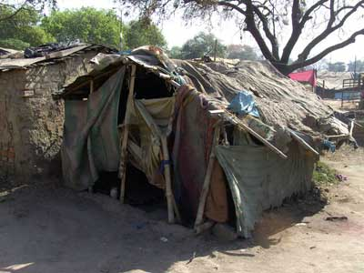1) Ты можешь потратить свои деньги прямо сейчас. Все скажут только спасибо, так как ты образуешь спрос на уже созданную товарную массу. В отличии от например «ипотеки», которая создает спрос на то, что еще не создано. И в результате мы получаем не новые дома, а рост цен на существующие.
(Достаточно сравнить цифры производства домов в плановой и неплановой экономиках. Ругаемый всеми нерыночный Советский Союз вплоть до 1989 года строил, строил и строил. Вводя в год на Украине до 21 миллиона квадратных метров жилья. Можно конечно кричать, - «хрущобы», но это было вполне пригодное нормальное жилье. И, несмотря на такие объемы производства его не хватало. Так как же тогда может хватить строящиеся сейчас ежегодно 3-6 миллионов квадратных метров по стране? Уже лет 15 ежегодно неДостраивают по 15-18 миллионов квадратных метров. Несмотря на сумасшедший рост цен на недвижимость, делающий этот бизнес сверхрентабельным. Может быть в каких-нибудь других странах наблюдается обратная картина? Да вроде бы нет. В чем тогда прелесть рыночной экономики если по всему Киеву стоят новостройки, в которых по вечерам не горят окна, а жить негде? Аналогичная ситуация и в России. Хотя нехватки нефтедолларов там не наблюдается.)
2) Ты можешь отложить свой текущий спрос. (допустим на покупку дома) и сдать государству свои деньги на хранение. Государство опять же тебе скажет спасибо, так как оно может использовать твои средства в работе, не «допечатывая» денег, чтобы скомпенсировать выведенную тобой из оборота денежную массу. Государство не будет тебе платить «процент». (К которому все уже привыкли и считают нормой. Хотя это не норма, а как раз отклонение. Этот процент запрещен всеми монотеистическими религиями, как разрушающий. Это понимали люди жившие тысячелетия назад. Понимали настолько глубоко, что ввели эти запреты в сборники моральных кодексов. В Коран, в Библию, в Тору. (Тора, правда, разрешает ссудный процент, по отношению к врагам-иноверцам, как средства достижения победы над ними)) Но в свою очередь государство должно взять на себя обязательство, что «цена дома» не изменится к моменту, когда ты оплатишь свою покупку. К тому же государство будет знать, к какому сроку оно должно выстроить сколько-то домов, чтобы погасить накапливаемые средства. Вот тут и нужен «золотой» (платиновый серебряный, потребительской корзины) неважно какой, - но стандарт не позволяющий растить объем денежной массы. (Разумеется, в реальности металлический стандарт невозможен, хотя бы из-за крайней неравномерности распределения ювелирных металлов по странам) В случае же, если ты поступил «нехорошо» и попросту решил «зажать» у себя средство общественного обмена, государство должно тебя наказать в виде штрафа пропорционального задержке средств, в 5-10% в год. «Зажатые» деньги должны не расти, - а уменьшаться. И это справедливо. Ибо это не твое средство обмена, - а общественное. Если ты препятствуешь его работе, - общество должно тебя наказывать. Не больно, - но обессмысливая задержку средств с целью «прибыли». (Технически это сделать не сложно. В случае электронных платежей это вообще элементарно. В случае наличных денег, - на каждой купюре стоит дата выпуска. Нужно лишь принимать по пониженной ставке к оплате государством просроченные купюры).
Это несколько более глубокая тема, чтобы изложить ее в пояснительной записке к библиотеке. Одна из немногих моделей по реорганизации денежной системы, которая выглядит здраво, находится здесь. Очень рекомендую к ознакомлению. Проста и понятна. (Но имейте в виду, что панацеей "свободные деньги" быть не могут. Они могут только помочь экономике выйти из дефляционного тупика. Далее несложно экстраполировать их поведение. Это максимальный разгон потребления и быстрое замыкание положительных обратных связей в экономике, где только возможно. Все это также будет дестабилизировать хозяйственную деятельность человека. Заменить грамотный аппарат управления и планирования они также не смогут, как и кредитные деньги. Всегда нужно помнить, что "деньги", какие бы они ни были, - это только инструмент управления. "Мозг" они не заменяют. И осмысленным планированием не занимаются.)
Из этой статьи возможно полезно взять опыт Советского Союза по трем контурам денежного обращения. (Наличному, безналичному и международным расчетам.)
- Да и просто очень полезно прочесть законы Советского Союза, касающиеся организации денежного обращения, особенно в самом начале, с 1917г. И в период подавления НЭПа, в конце 20-х годов. База законов, начиная еще с постановлений СНК (Совета Народных Комиссаров) с (простите, если неудобной) оболочкой находится
здесь.
Здесь находится отличная работа Сергея Рижинса. Некоторые мысли спорны, но в целом автор пишет очень содержательно. Особенно интересны его рассуждения о Монотоварных и многотоварных финансовых системах. Их суть. Плюсы и минусы. Особенности применения.
Здесь можно прочесть статью Леонида Пайдиева о организации безынфляционного вексельного денежного обращения. Но читайте "осторожно". По логике, - это "фьючерсы", которые в случае ослабленного финансового контроля и спекуляций превращаются в мощный, дестабилизирующий экономику фактор.
Это все смешно, глупо, дико... Человечество, которое сумело разобраться с тригонометрией, дифференциальным и интегральным исчислением, придумало отрицательные и мнимые числа. Запустило реакцию термоядерного синтеза. Сумело послать самоходную радиоуправляемую тележку на Марс... - не смогло разобраться в собственной бухгалтерии, которая не требует в своей математике даже инженерного калькулятора и использует всего 4 арифметических действия, доступных любому двоечнику?
Бред, абсурд... но, к сожалению, правда.
Читая экономические учебники, можно только удивляться, как только удается простейшие и очевидные арифметические понятия, доступные любому третьекласснику умеющему считать, - выдавать за "науку". В то время как это обычная бухгалтерия. Сведение дебета с кредитом. Сошлось... - хорошо. Не сошлось... – значит где-то ошибка.
(как пример "парадокс или дилемма Триффена" по имени экономиста, который первым его выявил в конце 50-х годов. Действительно. Нужно быть как минимум гением, чтобы вывести закон о том, что если ты приравняешь бумажные деньги к золоту, и выпустишь слишком много "бумаги"... - то никто не поверит, что бумага также ценна, как и золото. Воистину «Титан Мысли».) Или любопытства ради вчитайтесь в это «самолюбование глупости».
Вся эта библиотека собрана из текстов, так или иначе связанных с экономикой, прошедших через фильтр «здравого смысла» и присутствующей в них логики. (На мой взгляд, разумеется). К сожалению, во всем море информационного мусора, который сыплется из средств массовой информации, крайне мало разумных и адекватных текстов грамотных авторов. И те, что есть, - как правило, втоптаны в этот мусор довольно глубоко. В них ведь нет ничего «жаренного» и сенсационного.
Это не значит, что все, что мне удалось найти - верно. Иногда тексты и вовсе противоречивы, хотя говорят об одном и том же. Полярные точки зрения. Например, книги Дугина и Бжезинского в разделе Геополитика. Но не прочесть их нельзя. Логические построения этих книг придают хаосу «телевизионных» информационных новостей порядок и смысл. А уж какую из них выбирать за основу, - выбирайте сами.
-
Везде могут быть ошибки или неправильные выводы. Читайте критично. Буду признателен любому, кто укажет на явные, или не очень, - ошибки или предложит качественные тексты для пополнения библиотеки. Пишите в Форум.
С искренним уважением к читающему Аверин Игорь
Хочу выразить огромную благодарность великолепному специалисту и замечательному человеку Дмитрию Бойко и в его лице студии inVision™ за помощь в создании этого сайта и предоставленный хостинг.
13/09/2010